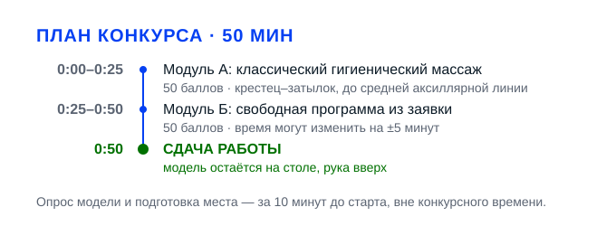
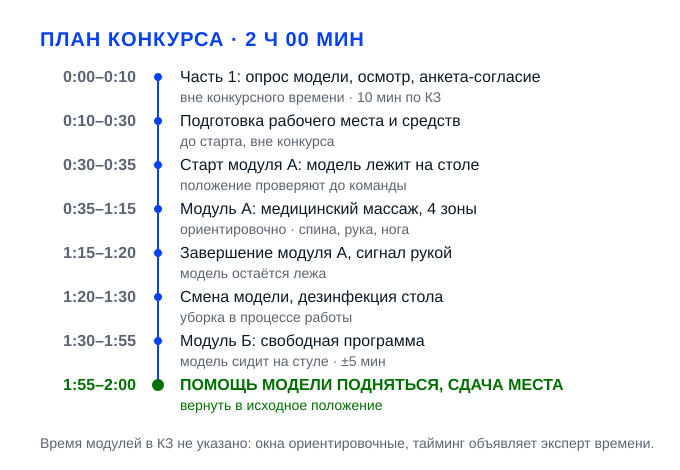
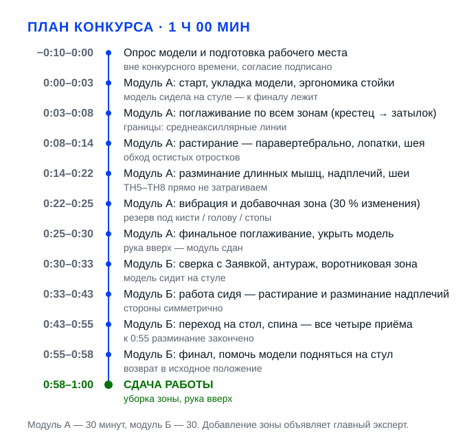

Массажист (Р,О)
Задания ниже — официальные файлы «Абилимпикс» (источник: abilympics-russia.ru), разложенные по категориям. Решения написаны по тексту задания, регламенту и критериям оценки; в них указано, что именно проверяет эксперт.
Школьник
14–16 лет, базовый уровень заданияВыдержка из официального конкурсного задания: страницы, относящиеся к категории «Школьник» (стр. 9–10, 14–15 источника).
Пошаговое решение
Категория «Школьники» на компетенции «Массажист» — это две процедуры на массажном столе по двадцать пять минут: в модуле А классический гигиенический массаж спины и шеи в строгих границах, в модуле Б — своя программа из заявки. Оба модуля стоят по пятьдесят баллов, всего сто, и примерно четверть этих баллов даётся не за руки, а за внешний вид, организацию места, санитарию, этикет и тайминг. Модели — волонтёры, согласие на процедуру подписывается заранее, а опрос модели занимает десять минут вне конкурсного времени. Зоны модуля А заданы жёстко: от верхушки крестца до затылка и от левой до правой средней аксиллярной линии, причём главный эксперт добавляет одну зону сверх задания — тридцать процентов изменения, — и её тоже оценивают. Ниже разобрано, что делать по шагам, в каком порядке, чем проверять результат и за что чаще всего снимают баллы.

Задача 1. Подготовиться к процедуре: модель, внешний вид, рабочее местоМодули А–Б · до 20 баллов
На категории «Школьники» задание состоит из двух процедур по 25 минут: в модуле А нужен классический гигиенический массаж спины в заданных границах, в модуле Б — своя программа из заявки. Обе идут на одном рабочем месте, поэтому подготовка делается один раз и сразу под оба модуля. Внешний вид, организация пространства, санитарные нормы и этикет стоят первыми пунктами в критериях обоих модулей: эти баллы нельзя добрать техникой, если они потеряны на входе. Опрос модели и подготовка места идут до команды «начали» и в конкурсное время не входят.
Действие 1.1. Привести себя в соответствие требованиям площадки
Шаг 1.1.1
Надеваем костюм для массажа: чистый, выглаженный, не обтягивающий плечи и предплечья, потому что в нём вы проведёте пятьдесят минут у стола. В модуле А это медицинская одежда по инфраструктурному листу, в модуле Б разрешена стилизованная форма под заявленную программу, но обе смены должны быть закрытыми до середины груди и без свисающих завязок у кистей. Обувь — спортивная или медицинская с фиксированной пяткой, на нескользящей подошве: пол вокруг стола в масле. Волосы убираем полностью, под головной убор или резинку, чтобы ни одна прядь не падала на лицо при наклоне.
Внешний вид — первый пункт критериев и модуля А, и модуля Б, значит один и тот же недостаток снимает баллы дважды. Эксперт оценивает не «опрятность в целом», а соответствие стандартам: закрытая одежда, обувь с фиксированной пяткой, убранные волосы, отсутствие свисающих элементов. Открытая обувь или халат с коротким рукавом — это ещё риск: масло летит с рук, а скользкая подошва на мокром полу превращает процедуру в падение рядом с моделью.
Встаньте перед зеркалом и проверьте три вещи: волосы не выбиваются ни спереди, ни сзади; костюм застёгнут и не расходится при подъёме рук вверх; пятка в обуви держится, подошва не скользит по плитке. Поднимите руки, как будто тянетесь к лопаткам модели: если рукав тянет или пола распахивается, переоденьтесь сейчас, а не на пятой минуте процедуры.
Самая частая ошибка — прийти в удобной футболке и спортивных шортах, рассчитывая, что «костюм не главное». Вторая — оставить длинные волосы собрать «потом»: в наклоне они падают на лицо, участник поправляет их мокрыми от масла руками, и это видно и по внешнему виду, и по нарушению санитарии.
Эксперт осматривает участника до команды «начали» и фиксирует соответствие в оценочном листе; повторно смотрит во втором модуле, потому что форма меняется, а требования те же.
Шаг 1.1.2
Снимаем всё, что может коснуться модели или упасть на стол: часы, браслеты, кольца, цепочки, длинные серьги, броши и декоративные элементы на самой одежде. Ногти стрижём коротко, без покрытия и без лака, гигиенический маникюр без острых углов допустим. Декоративную косметику сводим к минимуму, духи и сильно пахнущие средства не используем вообще: модель лежит лицом в прорези стола и полтора часа дышит тем, что от вас пахнет. Бейдж на верёвке или ленте снимаем и убираем в карман — на шее во время процедуры его быть не должно.
Украшения и ногти — это про травму и санитарию: камнем кольца можно поцарапать кожу, длинным ногтем — оставить след на спине, а под украшением остаются загрязнения, которые не смываются. В критериях есть отдельный пункт про безопасность процедуры для модели, и любая царапина читается как нарушение. Сильный парфюм добавляет второй риск — головную боль у модели, а при аллергической реакции время для участника останавливают и модель заменяют.
Проверьте себя по трём признакам: на руках и шее ничего не звенит и не цепляется, ногти короткие и без покрытия, от вас не пахнет духами. Отдельно поверните руки ладонями вверх и посмотрите на запястья — именно там чаще всего остаётся браслет или часы, снятые наполовину.
Типичная ошибка — снять кольцо, но оставить тонкую цепочку или часы «они же не мешают». Второе — побрызгать духами утром «для настроения» и не подумать, что к процедуре запах только усилится. Третье — прийти с покрытием на ногтях и надеяться, что эксперт не заметит: этот пункт проверяют на входе у всех участников сразу.
Эксперт смотрит на руки участника дважды: до старта и в процессе, когда ладони находятся на спине модели. Блеск лака на ногте видно на любом приёме. Отдельно фиксируют, снимает ли участник кольцо перед процедурой и не поправляет ли украшение в процессе.
Шаг 1.1.3
Надеваем маску так, чтобы она закрывала нос и рот и не сползала при наклоне, и берём с собой запас: по регламенту на участника закладывают четыре маски, потому что процедур две, а между ними есть перерыв и обработка рук. Если работаете в перчатках, перчатки должны быть по размеру и меняться между модулями, а не натягиваться поверх влажных от масла рук. Перед каждой процедурой моем руки с мылом до локтя, вытираем одноразовым полотенцем и обрабатываем антисептиком, давая ему высохнуть на воздухе, а не вытирая.
Санитарно-гигиенические нормы — отдельный пункт критериев в обоих модулях, и маска с обработанными руками входят в него целиком. Массаж — это контакт кожи с кожей на площади в полторы квадратных метра, и если руки не обработаны после предыдущей модели или после уборки, эксперт фиксирует нарушение. Кроме того, сухие руки — условие скольжения: по влажной ладони масло размазывается неравномерно, и приём получается рваным.
Проверяем так: маска сидит по косточке носа и не отходит при разговоре; руки сухие, антисептик не липнет; на столе лежит запасная маска, а не одна на весь день. Если перчатки используются, они не должны быть растянутыми и свисать на пальцах.
Классическая ошибка — надеть маску на подбородок и натянуть её только перед входом эксперта. Вторая — обработать руки антисептиком и сразу вытереть их о халат: обработка аннулируется, а эксперт видит движение.
Эксперт фиксирует гигиену рук в начале каждой процедуры; в течение работы смотрит, трогает ли участник лицо и маску мокрыми руками и меняет ли одноразовые материалы.
Действие 1.2. Провести опрос модели и оформить согласие
Шаг 1.2.1
Подходим к модели, представляемся по имени и говорим, что сейчас будет происходить: какие зоны массируем, в каком положении модель будет лежать, сколько это займёт и что нужно сделать, если станет некомфортно или больно. Говорим спокойно, не быстро, глядя в лицо, а не в анкету, и сразу объясняем главное правило — любое неприятное ощущение модель говорит вслух и сразу, а не терпит до конца процедуры. Предлагаем сходить в туалет и снять всё, что мешает лежать лицом вниз, до того как модель ляжет на стол.
Этикет и сервис — отдельный критерий в модуле А, и он оценивается по тому, как участник говорит с моделью, а не по тому, что написано в анкете. Спокойное объяснение снимает причину напряжения: человек не знает, что будет дальше, мышцы спины остаются зажатыми, а расслабить их труднее — вместо разминания приходится преодолевать защитное сокращение. Модель, которая поняла инструкцию, вовремя скажет о боли, и вы не узнаете об этом от эксперта.
Признак того, что контакт установлен: модель кивает, задаёт вопрос по существу и переспрашивает, что делать при дискомфорте. Проверьте, назвали ли вы зону, положение тела и длительность процедуры — это три вещи, которые человек хочет знать до начала.
Типичная ошибка — молча уложить модель и начать работать, считая, что «всё и так понятно». Вторая — говорить скороговоркой, глядя в сторону, или обсуждать модель с экспертом в её присутствии так, будто её нет.
Эксперт слушает первые тридцать секунд общения и смотрит на реакцию модели: смотрит ли она на участника, кивает ли, расслабляются ли у неё плечи после объяснения.
Шаг 1.2.2
Задаём вопросы по короткому списку, но не зачитываем их подряд, а ведём разговор: что беспокоит в спине и шее сейчас, были ли травмы, операции или переломы в этой области, есть ли кожные высыпания, ранки, родинки в зоне массажа, аллергия на масла и кремы. Отдельно спрашиваем про самочувствие сегодня: головокружение, слабость, давление, температура, не принимала ли модель обезболивающее. Уточняем, комфортно ли ей лежать лицом вниз. На опрос отводят десять минут до старта, и в конкурсные двадцать пять они не входят.
Опрос — это граница вашей ответственности. Массаж не делают при остром воспалении, температуре, кровотечении, кожных заболеваниях в зоне и при подозрении на травму, а на чемпионате модель — волонтёр, о состоянии которого вы знаете только с её слов. Если модель говорит о боли в пояснице после падения, вы либо меняете глубину, либо сообщаете эксперту. В критериях есть пункт про безопасность процедуры для модели, и он оценивается по таким решениям.
Признак качественного опроса: вы можете одной фразой сказать, что у модели в порядке, а что настораживает, и какой приём из-за этого вы будете делать мягче. Если после разговора вы не можете назвать ни одного ограничения — значит, вопросов вы почти не задали.
Частая ошибка — задать один вопрос «жалобы есть?» и получить «нет». Вторая — услышать про аллергию на масло и всё равно взять масло, потому что «оно гипоаллергенное». Третья — не спросить про сегодняшнее самочувствие: модель может прийти с температурой, и процедуру придётся останавливать уже на столе.
Эксперт в это время рядом и слышит, какие вопросы заданы; отдельно отмечает, спросили ли про аллергию и про сегодняшнее состояние — это две позиции, по которым чаще всего бывают замечания.
Шаг 1.2.3
Заполняем анкету-согласие по форме Приложения 1 со слов модели: кто она, какие зоны массируются, какие ограничения выявлены, что противопоказаний к процедуре нет. Если модели меньше восемнадцати лет, согласие подписывает законный представитель, и это условие действует на площадке без исключений. Заполняет анкету либо сам участник, либо помощник, назначенный главным экспертом, — уточните у него порядок до начала, чтобы не искать ручку в момент команды «начали». Подписанный лист кладём на видное место у рабочего места, а не в карман.
Без подписанного согласия процедуру проводить нельзя, и это не формальность: анкета фиксирует, что модель информирована о зонах и ограничениях, а участник — о её состоянии. На чемпионате анкета ещё и защищает вас: если модель после процедуры скажет, что её не предупредили о массаже шеи, единственным доказательством обратного будет этот лист. Пункт «соблюдение правил этикета» в критериях покрывает и корректное оформление документов.
Проверьте лист перед тем, как его отложить: заполнены все поля, стоят подпись и дата, отмечено отсутствие противопоказаний, при возрасте до восемнадцати лет есть подпись представителя. Если чего-то не хватает, дополните сразу — потом времени на это не будет.
Ошибка — заполнить анкету за модель, поставив галочки «со слов» там, где модель ничего не говорила. Вторая — оставить лист на столе под маслом, а потом искать, чем оттереть пятно. Третья — не уточнить у помощника, кто заполняет: в суете это выясняется на третьей минуте конкурса.
Главный эксперт или его помощник проверяет наличие согласия до старта; отсутствие подписанного листа — повод не допустить к процедуре, а не «дозаполнить по ходу».
Действие 1.3. Организовать рабочее место и расходные материалы
Шаг 1.3.1
Протираем массажный стол дезинфицирующим средством и даём поверхности высохнуть, а не вытираем насухо полотенцем: средству нужно время контакта. Застилаем стол так, чтобы простыня или большое полотенце 100 на 180 сантиметров закрывали его целиком и свисали по краям, не образуя складок под животом и грудью модели — складка под грудной клеткой ощущается как камень и сбивает дыхание. Кладём валик под голени высотой примерно десять сантиметров и маленькое полотенце 40 на 70 в изголовье, если в столе нет прорези. Рядом ставим второе большое полотенце: им укрываем всё, что не массируется.
Организация пространства и санитарные нормы идут отдельными пунктами в обоих модулях, и застилка стола — самая заметная их часть. Ровная поверхность нужна и технически: на складке ладонь проваливается, поглаживание получается с рывком, и эксперт видит не технику, а борьбу с бельём. Валик под голени снимает натяжение задней поверхности бедра и поясницы, спина ложится ровнее, и мышца разминается глубже и без боли.
Проведите ладонью по всей поверхности стола от изголовья к ногам: не должно быть складок, бугров, торчащих углов простыни. Полотенце должно свисать одинаково с двух сторон, иначе при повороте модели оно стянется. Валик не должен уезжать — проверьте, держится ли он под голенями, когда модель ляжет.
Типичная ошибка — натянуть простыню так, что она вот-вот соскользнёт, или, наоборот, оставить её свободной и собрать складки под спиной. Вторая — положить валик слишком высоко, под колени, отчего ноги провисают и поясница напрягается.
Эксперт подходит к столу до старта и смотрит на застилку: ровно ли, закрыты ли края, лежит ли валик. Это одна из первых вещей, которые видны на входе в зону.
Шаг 1.3.2
Готовим расходники: масло или крем без резкого запаха с сертификатом соответствия, салфетки, бумажные полотенца, закрытый контейнер для использованных материалов. Флакон ставим на небольшой поднос или салфетку справа от себя, чтобы не тянуться через модель и не искать его на столе в масле. Проверяем, что флакон закрыт и не подтекает, а количество средства достаточно на две процедуры — тридцать-сорок миллилитров на спину за одну. Сразу уточняем у главного эксперта, согласованы ли ваши расходные материалы: использовать их можно только с его согласования, и об этом лучше знать до старта.
Расходные материалы — часть задания с жёсткими правилами: средства должны быть сертифицированы, без резкого запаха, самодельные косметические средства не допускаются. Если флакон не согласован, эксперт вправе зафиксировать нарушение, а при аллергической реакции модели процедуру останавливают. Кроме того, лишнее масло на руках — это скольжение вместо приёма: и поглаживание, и разминание требуют контролируемого трения.
Проверьте три вещи: флакон закрывается и не оставляет масляного следа на подносе, салфеток хватает на две процедуры, контейнер для использованного стоит так, чтобы бросать в него, не наклоняясь через модель. На тыльной стороне флакона должен быть состав или сертификат — это то, что спросит эксперт.
Ошибка — налить масло в ладонь и держать его там всю процедуру: средство стекает, руки перегружены, а поверхность становится слишком скользкой. Вторая — поставить открытый флакон у самого края стола: одно неловкое движение, и он на полу.
Эксперт проверяет сертификат и запах средства, а в процессе смотрит, сколько масла на руках: блестящие ладони и капли на простыне — минус по санитарии и по технике.
Шаг 1.3.3
Настраиваем высоту стола под себя: она должна быть примерно на уровне согнутых в локте пальцев опущенной руки, для большинства участников это семьдесят-восемьдесят сантиметров. Стоим так, чтобы работать весом тела, а не силой рук: ноги на ширине плеч, слегка согнуты в коленях, одна стопа чуть впереди, спина прямая. Стул для модели или участника отодвигаем из прохода, сумки и чехлы убираем под стол, оставляя проход шириной не меньше полутора метров — по нормам оснащения это обязательная величина. Проверяем освещение: свет должен падать на спину модели, а не в глаза участнику.
Эргономика массажиста и эргономика клиента — это два отдельных пункта в критериях каждого модуля, то есть до четырёх позиций за то, как вы стоите и как лежит модель. Смысл простой: за двадцать пять минут работы с наклоном через стол поясница получает нагрузку, сопоставимую с подъёмом груза, и к концу процедуры техника рассыпается, потому что руки устали, а спина болит. Работа весом тела позволяет держать глубину разминания без усилия кистей.
Проверьте стойку в зеркале или по тени: плечи не подняты, локти не выше кисти, спина не согнута дугой, колени мягкие. Попросите кого-то посмотреть сбоку — со стороны видно наклон, который вы сами не чувствуете. Проход вокруг стола должен позволять обойти его, не задевая соседнее место.
Ошибка — работать с прямой спиной и прямыми ногами, наклоняясь только за счёт поясницы: через десять минут появляется усталость, и приёмы становятся поверхностными. Вторая — поставить стол слишком высоко и тянуться вверх плечами.
Эксперт обходит площадку и смотрит на стойку сбоку, особенно во второй половине процедуры, когда уставший участник «складывается» над столом. В критериях это один пункт, но он повторяется в двух модулях, и потерять его легко: достаточно часа работы в наклоне.
Шаг 1.3.4
Делаем финальный проход по чек-листу за три-четыре минуты до команды «начали»: стол застелен, валик на месте, полотенца разложены, флакон закрыт и стоит справа, салфетки и контейнер под рукой, анкета-согласие заполнена, маска на лице, руки обработаны. Проговариваем про себя порядок модуля А: укладка, поглаживание, растирание, разминание, вибрация, завершение — и держим в голове, что на всё двадцать пять минут. Уточняем у эксперта времени, как он будет показывать остаток: голосом, табличкой или по нозологии, — чтобы не пропустить сигнал.
Проверка по списку экономит время, которого в двадцати пяти минутах нет: каждая найденная на ходу мелочь — это минус тридцать секунд от разминания, а разминание оценивается отдельным критерием. Согласование сигналов времени тоже практическое: участники с нарушением слуха получают тайминг табличкой или «пальцем» на спине, и если вы не знаете, как вас предупредят, можно пропустить момент, когда пора переходить к вибрации.
Чек-лист считается пройденным, если вы можете, не глядя на стол, назвать, где лежит каждая вещь, и если на столе нет ничего лишнего. Отойдите на два шага и посмотрите на своё место целиком: оно должно выглядеть как готовое к работе, а не как раздевалка.
Частая ошибка — потратить это время на повторение теории и обнаружить отсутствие салфеток на седьмой минуте. Вторая — не уточнить формат сигналов времени и работать «по ощущениям», а они на волнении всегда обманывают.
Эксперт в это время фиксирует готовность места и то, уточнял ли участник порядок сигналов времени; вопросы по организации обычно задают до старта, а не в процессе.
Задача 2. Модуль А: провести классический гигиенический массаж за 25 минутМодуль А · 50 баллов
Модуль А — классический гигиенический массаж в строго заданных границах: от верхушки крестца до затылка и от левой до правой средней аксиллярной линии. В зачёт идут все четыре основных приёма — поглаживание, растирание, разминание, вибрация, причём каждый оценивают отдельным пунктом критериев, и порядок их выполнения тоже. На процедуру дают 25 минут: этого хватает на четыре-пять полных кругов по зоне, если не сокращать разминание в пользу поглаживания. Главный риск здесь не в силе рук, а в границах и последовательности.
Действие 2.1. Уложить модель и распределить время процедуры
Шаг 2.1.1
Укладываем модель на живот лицом вниз: голова в прорези стола или повёрнута набок, руки вдоль туловища ладонями вверх, ноги вытянуты, голени на валике. Говорим, куда идём и что делаем, поправляем простыню так, чтобы она закрывала ягодицы и бёдра, а спина оставалась открытой от крестца до шеи. Волосы у модели убираем наверх или в сторону, чтобы они не попадали под руки при работе на шее. Убеждаемся, что модель дышит свободно и не упирается лицом в прорезь.
Правильное положение модели — отдельный критерий, эргономика клиента. Если голова запрокинута или повёрнута слишком сильно, напрягаются мышцы шеи, и работать по задней поверхности шеи бессмысленно: вы разминаете спазм, который сами создали. Валик под голенями и руки вдоль тела дают ровную спину без прогиба, поэтому глубина разминания достигается меньшим усилием. Плюс этика: модель укрыта там, где массаж не проводится.
Проверьте линию от затылка до крестца: она должна быть прямой, без прогиба и поворота таза. Плечи модели должны лежать на столе одинаково, а не одно выше другого. Спросите, удобно ли лежать, и поправьте положение до начала работы, а не через пять минут.
Ошибка — уложить модель и сразу начать, не проверив, дышит ли она свободно в прорези. Вторая — оставить руки поднятыми над головой: плечевой пояс уходит вперёд, лопатки смещаются, и область лопаток становится недоступной для нормального растирания.
Эксперт смотрит на положение модели в первые же секунды процедуры и отмечает, поправлял ли участник положение тела и укрывал ли негативные зоны. Критерий эргономики клиента оценивают дважды за процедуру: при укладке и в самом конце.
Шаг 2.1.2
Встаём у изголовья или сбоку — в зависимости от приёма: поглаживание и разминание удобнее делать, стоя у продольной стороны стола, работая на дальней половине спины через ближнюю. Ноги ставим на ширину плеч, колени чуть согнуты, корпус наклонён вперёд от тазобедренных суставов, а не от поясницы, плечи опущены. Ладони кладём на спину модели плоско, всей поверхностью, на две-три секунды, прежде чем начать движение: это привыкание к контакту и проверка тонуса.
Эргономика массажиста — это отдельный пункт критериев и одновременно условие качества всех остальных приёмов. Наклон от тазобедренного сустава с ровной спиной позволяет передавать усилие весом корпуса: разминание получается глубоким и ровным на протяжении всех двадцати пяти минут. Наклон от поясницы даёт быструю усталость и к концу процедуры превращает разминание в поверхностное похлопывание, что видно и по технике, и по реакции мышц.
Проверьте себя так: поднимите ладони — спина должна остаться прямой, а не выпрямиться с облегчением. Если приходится тянуться вперёд или вверх, подвиньте стол или стойте ближе. Плечи не должны быть выше ушей, а кисти — выше локтя.
Ошибка — работать одной рукой, другой держась за край стола: корпус перекашивается, и через десять минут одна сторона спины модели разработана, а другая нет. Вторая — стоять слишком далеко и тянуться, вместо того чтобы обойти стол.
Эксперт смотрит на стойку в разных приёмах: при разминании видно, работает участник корпусом или только пальцами. Отдельно отмечают, не поднимает ли участник плечи и не сгибает ли спину дугой к концу процедуры.
Шаг 2.1.3
Раскладываем двадцать пять минут заранее, до первого движения: две минуты на укладку и привыкание, пять на поглаживание, семь на растирание, восемь на разминание, две на вибрацию и минута на завершение и укрывание. Это только ориентир, но он спасает от главной беды — увлечься поглаживанием и оставить разминание на последние три минуты. Дальше держим этот график по сигналам эксперта времени: к моменту, когда показывают «осталось десять минут», растирание должно быть закончено, а к «осталось три» — начата вибрация.
Соблюдение регламента — отдельный пункт критериев модуля А, и он оценивается по факту: успел или не успел. Кроме того, в задании прямо прописан порядок приёмов, и его нарушение тоже снимает баллы: вибрация не может идти до разминания, потому что она не разогревает мышцу, а только раздражает нервные окончания, и эффективность всей процедуры падает. Пропорция, где разминание занимает примерно треть времени, — не формальность, а физиология.
Проверка простая: к пятой минуте вы должны быть на поглаживании, к двенадцатой — на растирании, к двадцатой — на разминании. Если на десятой минуте вы всё ещё гладите, значит график уже сломан, и надо сокращать, а не надеяться догнать.
Ошибка — потратить половину времени на поглаживание, потому что оно приятно модели и выглядит красиво. Вторая — начать с разминания «чтобы успеть», не разогрев мышцу: это болезненно и оценивается как нарушение порядка приёмов.
Эксперт времени объявляет остаток, а эксперты по технике в это же время отмечают, в каком приёме находится участник на контрольных минутах. Пропущенная контрольная минута видна по листу: приём не тот, время ушло.
Действие 2.2. Выполнить поглаживание в заданных границах
Шаг 2.2.1
Начинаем с плоскостного поверхностного поглаживания: ладонь плотно прилегает к коже, пальцы выпрямлены и сомкнуты, движение идёт от верхушки крестца вверх к надплечьям и дальше к шее, а на каждом отрезке — от позвоночника в сторону, к средней аксиллярной линии. Давим легко, кожа под ладонью должна сдвигаться, а не растягиваться, темп спокойный, около двадцати пяти движений в минуту, каждый проход по всей зоне заканчивается мягким возвратом руки по воздуху, а не волоком обратно. На весь приём уходит примерно две минуты в начале процедуры.
Поглаживание открывает процедуру и оценивается отдельным пунктом критериев — соответствие стандарту техники приёма «поглаживание». Его задача — подготовить кожу и мышцу: поверхностное поглаживание снижает тонус, улучшает отток лимфы по направлению к подмышечным и подключичным узлам и даёт модели привыкнуть к рукам. Если начать сразу с глубоких приёмов, мышца отвечает защитным сокращением, и всё дальнейшее делается через боль.
Проверьте: кожа не краснеет пятнами, модель дышит ровно, под ладонью нет «гусиной кожи» и подёргиваний. Рука должна идти одинаково легко на всём протяжении — если на пояснице ладонь тормозит, там тонус выше, и этот участок позже потребует больше растирания.
Ошибка — водить рукой туда-сюда по одному и тому же месту, не покрывая зону целиком: границы от крестца до затылка забываются, и шея остаётся необработанной. Вторая — слишком сильное давление с первого движения, от которого модель напрягается.
Эксперт смотрит на первый приём особенно внимательно: по нему видно школу. Оценивают плотность прилегания ладони, направление движения и отсутствие рывков.
Шаг 2.2.2
Переходим на обхватывающее глубокое поглаживание: кисть обхватывает боковую поверхность спины так, что большой палец идут с одной стороны, а остальные четыре — с другой, и движение идёт снизу вверх по длинным мышцам. Работаем поочерёдно то левой, то правой рукой, не разрывая контакта: одна рука возвращается вниз по воздуху, вторая в это время идёт вверх. Глубину наращиваем постепенно, к третьему-четвёртому проходу, и на каждом проходе доходим до надплечья, не обрывая движение на середине спины.
Глубокое поглаживание — это уже воздействие на мышцу и на подкожную клетчатку, и именно оно готовит зону к растиранию. Обхват четырьмя пальцами и большим даёт равномерное давление по всей ширине мышцы, а не точечное продавливание подушечками, поэтому оно не травмирует и не вызывает боли. Поочерёдная работа рук важна и технически, и эстетически: процедура не должна выглядеть как паузы между движениями.
Признак правильного обхвата: на коже не остаётся следов от пальцев, а под рукой ощущается, как мышца «отходит» и становится мягче. Между проходами не должно быть момента, когда на спине нет ни одной руки.
Ошибка — обхватывать слишком узко и щипать кожу, оставляя красные полосы. Вторая — работать двумя руками одновременно, зеркально, из-за чего движения смазываются и теряется направление вверх. Узкий обхват виден по красным полосам, и пункт про стандарт техники тоже теряет баллы.
Эксперт смотрит на глубину и на ритм: поглаживание должно быть непрерывным, без остановок для смены рук. Отдельно смотрят, насколько плотно ладонь прилегает к спине на боковых поверхностях.
Шаг 2.2.3
На грудном отделе и на боковых поверхностях добавляем поперечное поглаживание: кисти ставятся поперёк спины, на расстоянии друг от друга, и двигаются навстречу, а затем расходятся, проходя всю ширину от позвоночника до аксиллярной линии. Дальше чередуем прямолинейное, поперечное и «зигзаг» — ладонь идёт не по прямой, а с небольшим смещением в сторону на каждом проходе, что позволяет обработать промежутки между мышцами. На область лопаток заходим «вилами»: четыре пальца разведены, идут по обе стороны от ости лопатки, не надавливая на саму кость.
Разные виды поглаживания нужны не для разнообразия: прямолинейное работает по ходу лимфатических путей, поперечное и зигзагообразное — на мышцах, идущих поперёк, а «вилы» дают возможность обойти лопатку, не задевая кость. Область лопаток в задании указана отдельно, и её нужно обработать всю, включая подостную и надостную зоны, но без давления на ость и на внутренний край. Кость не массируют — давление на неё болезненно и бесполезно.
Проверьте, что после прохода не остаётся пропущенных участков: проведите тыльной стороной пальцев по всей зоне и найдите места, где кожа ещё прохладная и не порозовела. Именно там поглаживание не дошло.
Ошибка — давить на лопатку и на остистые отростки, «чтобы продавить глубже». Вторая — работать только по центру спины, оставляя боковые поверхности сухими, хотя граница задания идёт до средней аксиллярной линии.
Эксперт проверяет границы: если руки не доходят до боковой поверхности спины, это видно сразу, и пункт про выполнение по заданным зонам теряет баллы. Границу проверяют по средней аксиллярной линии: если руки останавливаются на пять сантиметров раньше, зона считается необработанной.
Шаг 2.2.4
Переходим на заднюю поверхность шеи и надплечья: здесь работаем щипцевидным и обхватывающим поглаживанием, кисть идёт от затылка вниз к надплечью, а на самом надплечье — от шеи к плечевому суставу. Давление уменьшаем примерно вдвое по сравнению со спиной: кожа на шее тонкая, мышцы короткие. Заканчиваем каждый проход мягким снятием руки, а не рывком. Шею при этом не запрокидываем и на позвонки не давим, работаем по обе стороны от средней линии.
Задняя поверхность шеи и надплечья — самая нагруженная зона у школьника: за столом и телефоном там формируется стойкий гипертонус, и именно эта область чаще всего вызывает болезненные ощущения при массаже. В задании она указана отдельно, и оценивается соответствие приёма стандарту. Осторожность нужна из-за анатомии: на шее близко проходят сосудисто-нервные пучки, и грубое давление в этой зоне может вызвать головокружение и тошноту.
Проверьте: после прохода модель не втягивает голову в плечи и не морщится, дыхание не сбивается. Мышца надплечья должна стать мягче и податливее — сравните правую и левую сторону ладонями, разница чувствуется сразу.
Ошибка — давить на шею с той же силой, что на поясницу: модель рефлекторно напрягается, и зона остаётся неразработанной. Вторая — массировать только надплечье и забыть про затылок, хотя граница задания идёт до затылка.
Эксперт смотрит именно на эту зону отдельно: техника на шее — самая показательная и самая частая причина замечаний по безопасности. Здесь же оценивают, насколько участник снизил давление и не задел ли сосудистые зоны.
Действие 2.3. Выполнить растирание по всем заданным областям
Шаг 2.3.1
Начинаем растирание с паравертебральных зон: подушечки двух-трёх пальцев ставятся по обе стороны от позвоночника, на два-три сантиметра от средней линии, и двигаются круговыми движениями с небольшим смещением кожи, а не скольжением по ней. Давим уверенно, но не до боли, темп около шестидесяти круговых движений в минуту, по четыре-шесть кругов на каждом сегменте, продвигаясь снизу вверх от крестца до грудного отдела. Позвоночник при этом остаётся вне работы: пальцы идут строго рядом с остистыми отростками.
Растирание — третий по счёту приём, но именно он даёт основной разогрев и готовит мышцу к глубокому разминанию. В критериях он вынесен отдельным пунктом, и оценивают именно характер движения: при растирании кожа смещается вместе с пальцами, а не скользит под ними. Паравертебральная зона выбрана первой потому, что там проходят нервные стволы и тонус выше всего, и разогрев этой полосы снимает напряжение по всей спине.
Признак правильного растирания — стойкое ощущение тепла под пальцами и лёгкое покраснение кожи, которое держится после снятия руки. Если кожа остаётся бледной, движение было скользящим, а не растирающим.
Ошибка — давить прямо на остистые отростки и на промежутки между ними: это болезненно и опасно. Вторая — растирать слишком быстро и поверхностно, когда кожа горит, а мышца под ней остаётся холодной. Оба варианта видны по реакции модели и фиксируются как техническая ошибка.
Эксперт смотрит на положение пальцев относительно позвоночника: работа по средней линии фиксируется как техническая ошибка и как риск для модели. Плотность нажима сравнивают с первым приёмом: к растиранию давление растёт, но не превращается в продавливание.
Шаг 2.3.2
Обрабатываем область лопаток: круговое растирание подушечками пальцев по краю лопатки, затем под нижним углом, где чаще всего скапливается напряжение, и отдельно — подостную и надостную области, двигаясь по ходу мышечных волокон. Для глубоких слоёв используем основание ладони: кладём его на зону и делаем круговые движения с нажимом, смещая кожу. На каждую лопатку уходит примерно минута, и работать нужно симметрично, сравнивая стороны по ощущениям.
Область лопаток указана в задании как отдельная зона, и это одна из самых проблемных зон у подростков: там формируются триггерные точки от сидячей работы. Растирание вокруг лопатки снимает ограничение подвижности пояса, но требует аккуратности: сама кость не массируется, и давление на её внутренний край через тонкую мышцу вызывает резкую боль. Основание ладони даёт широкое, ровное давление — это и есть правильный инструмент для этой зоны.
Проверьте симметрию: после обработки обе лопатки должны быть одинаково тёплыми на ощупь, кожа над ними — одинаково розовой. Попросите модель свести лопатки — движение должно быть свободным и без боли, а плечи не должны подниматься.
Ошибка — тереть саму лопатку и её ость, что бесполезно и больно. Вторая — обработать одну лопатку и уйти на другую сторону, оставив асимметрию: это видно и по ощущениям, и по цвету кожи. Асимметрия видна по цвету кожи и по тому, как модель двигает плечами после процедуры.
Эксперт обращает внимание на то, обходит ли участник кость и обрабатывает ли нижний угол лопатки, где чаще всего нужна работа. Асимметрия здесь бросается в глаза: одна лопатка обработана, вторая нет — минус по зонам.
Шаг 2.3.3
Проходим пояснично-крестцовый отдел и гребни подвздошных костей: растираем основанием ладони и подушечками пальцев по направлению от позвоночника к бокам, а на самом крестце — круговыми движениями вокруг крестцовых отверстий, не надавливая на них. На пояснице работаем мягче, чем на грудном отделе: глубина здесь ограничена, а область почек остаётся вне активного воздействия. Двигаемся вверх от крестца, обходя гребни подвздошных костей по краю.
Пояснично-крестцовый отдел — нижняя граница задания, и именно с него начинается вся процедура, поэтому он должен быть разработан не хуже остальных зон. Растирание гребней подвздошных костей снимает напряжение квадратной мышцы поясницы, из-за которой спина часто выглядит перекошенной. При этом поясница — зона, где легко навредить: глубокое давление в проекции почек недопустимо, и в критериях это проходит по пункту безопасности для модели.
Проверьте: кожа поясницы порозовела равномерно, без ярких пятен, модель не поджимает таз и не задерживает дыхание. Ладони должны стоять на мышцах по бокам от позвоночника, а не на самом столбе. Если модель поджимает таз, давление слишком сильное.
Ошибка — «продавливать» поясницу кулаком или локтем, чтобы быстрее разогреть. Вторая — растирать только центр и забыть про боковые поверхности, хотя границы идут до аксиллярной линии. За грубость на пояснице баллы снимают по двум пунктам: техника и безопасность.
Эксперт особенно внимательно смотрит на поясницу: любая грубость здесь трактуется как риск для модели и снимает баллы по двум пунктам сразу. Отдельно фиксируют, не сдвигается ли модель на столе от давления: это признак того, что сила идёт не туда.
Шаг 2.3.4
Чередуем круговое растирание с «пилением» и гребнеобразным приёмом: при «пилении» две кисти ставятся ребром по обе стороны от позвоночника и двигаются навстречу друг другу, смещая кожу; гребнеобразное делаем согнутыми пальцами, средними фалангами, по длинным мышцам. Каждый вид — по три-четыре прохода, затем возврат к круговому растиранию. Заканчиваем растирание общим проходом по всей зоне, от крестца до надплечий, чтобы кожа была равномерно тёплой.
Разные виды растирания воздействуют на разные слои: «пиление» работает на подкожной клетчатке и фасции, гребнеобразное — на глубоких мышцах, круговое — на поверхностных. Чередование даёт равномерный разогрев и не перегружает кожу, которая при однообразном трении начинает гореть. В критериях оценивается соответствие приёма стандарту, и владение несколькими видами растирания здесь плюс, а не украшение.
Признак готовности зоны к разминанию: кожа тёплая по всей площади, мышца под пальцами мягкая и податливая, при нажатии нет болезненного «тяжа». Если какой-то участок ещё холодный и плотный, вернитесь к нему.
Ошибка — тереть кожу до яркой красноты и жжения, что уже не массаж, а раздражение. Вторая — делать «пиление» слишком быстро и коротко, когда эффекта нет, а кожа горит. Избыточное трение даёт жжение, модель просит остановиться, а время уже ушло.
Эксперт смотрит на разнообразие приёмов и на состояние кожи: сильное покраснение оценивается как избыточное воздействие. Ещё один признак — следы пальцев: после правильного растирания кожа розовая, но без полос.
Действие 2.4. Выполнить разминание — основную часть процедуры
Шаг 2.4.1
Начинаем ординарное разминание на длинных мышцах спины: кладём ладонь поперёк мышцы, пальцы сомкнуты, и захватываем мышцу так, чтобы она оказалась между большим пальцем и остальными четырьмя, затем приподнимаем её и смещаем в сторону, отпускаем и переходим на следующий участок. Работаем по одной стороне, снизу вверх, по четыре-пять захватов на каждом участке, темп около пятидесяти разминаний в минуту. Давление наращиваем от первого прохода к третьему, а не сразу.
Разминание — главный приём процедуры и отдельный пункт критериев; на него по графику уходит около восьми минут из двадцати пяти, потому что оно меняет состояние мышцы, а не только кожу. Ординарное разминание — база: оно разрабатывает поверхностные и средние слои, снимает мышечный тонус и улучшает кровоток. Если мышца захвачена правильно, она приподнимается, а не продавливается, и разница принципиальная: продавливание травмирует, захват работает.
Проверьте: мышца должна приподниматься под пальцами как валик, а кожа вокруг не натягиваться. Если пальцы скользят по коже, значит масла слишком много, и захвата не получается. После прохода мышца на ощупь мягче, чем до него.
Ошибка — щипать кожу вместо мышцы, оставляя синяки. Вторая — работать на скользкой коже и думать, что разминание выполнено: захвата не было, эффекта тоже. Синяки на спине модели — это уже разговор с главным экспертом, а не минус балл.
Эксперт смотрит на захват: видно, поднимается мышца или рука просто едет по поверхности. Оценивают именно захват, а не силу: видно, поднимается мышца или рука просто едет по поверхности.
Шаг 2.4.2
Переходим на двойное кольцевое разминание: обе кисти ставятся поперёк спины на расстоянии друг от друга, пальцы накладываются на мышцу, и каждая рука делает круговое движение навстречу другой, приподнимая мышцу и смещая её. Движение идёт непрерывно, без разрыва контакта, по всей длине от поясницы до надплечий, по два-три прохода на каждой стороне. Работаем преимущественно корпусом, руки лишь передают усилие.
Двойное кольцевое — самый производительный приём для спины: две руки обрабатывают большую площадь одновременно, и глубина получается больше, чем при ординарном, при меньшей нагрузке на кисти. Именно поэтому его включают в классическую технику и оценивают по стандарту. Смысл в том, что мышца не просто сжимается, а смещается относительно подлежащих тканей — это и даёт расслабление.
Проверьте, что обе руки работают синхронно: мышца должна «перекатываться» между ладонями плавно, без рывков. Если на коже появляются красные полосы от пальцев, давление слишком сильное, а масла мало. Полосы означают, что масла мало.
Ошибка — выполнять двойное кольцевое как простое надавливание двумя руками, без смещения. Вторая — слишком сильное давление, от которого модель напрягает спину и приём перестаёт работать. Приём должен смещать ткани, а не вдавливать их на месте.
Эксперт смотрит на непрерывность и на смещение тканей: это отличительный признак правильного двойного кольцевого разминания. Две руки должны работать в одном ритме: если одна отстаёт, приём распадается на два одиночных.
Шаг 2.4.3
Добавляем сдвигание и накатывание: при сдвигании ладони ставятся по обе стороны от позвоночника и смещают мышцы навстречу друг другу, при накатывании одна кисть приподнимает мышцу, а вторая накатывает её на большой палец. Эти приёмы делаем на плотных участках — чаще всего у внутреннего края лопатки и в пояснице, — по три-четыре движения, затем возвращаемся к ординарному разминанию, чтобы не оставить зону болезненной.
Сдвигание и накатывание работают с фасцией и с глубокими слоями, куда обычный захват не достаёт, и именно они снимают те «каменные» участки, которые прощупываются у большинства людей у лопатки. Но это же и самые чувствительные приёмы: их делают только после хорошего разогрева и всегда завершают мягким поглаживанием, иначе модель уходит с болезненностью. В критериях есть пункт про индивидуальные особенности модели — здесь он и проявляется.
Проверьте реакцию модели: лицо не должно морщиться, дыхание не должно сбиваться, мышца под рукой должна становиться мягче, а не твёрже. Если участок остаётся плотным после двух проходов, не давите сильнее — вернитесь к нему позже.
Ошибка — «додавить» болезненный участок через силу, считая, что там «зажим». Вторая — закончить на сдвигании и не сделать успокаивающее поглаживание. Болезненность после процедуры — прямой минус по безопасности для модели.
Эксперт следит за реакцией модели в эти моменты: гримаса боли — сигнал, который видят все эксперты на площадке. Здесь видно, насколько участник чувствует модель: сильный давит сильнее, а профессиональный — ровно столько, сколько нужно.
Шаг 2.4.4
Разминаем надплечья и заднюю поверхность шеи: мышцу, идущую от шеи к плечу, захватываем щипцевидным движением, приподнимаем и отпускаем, продвигаясь от шеи к плечевому суставу; на самой шее работаем подушечками пальцев, круговыми движениями по обе стороны от средней линии. Силу здесь уменьшаем примерно вдвое, число повторов — три-четыре на участок. Заканчиваем каждый участок мягким поглаживанием, чтобы снять ощущение сдавления.
Надплечья — зона, которую в задании указывают отдельно, и она же самая болезненная при разминании. Щипцевидный захват позволяет работать с верхней порцией трапециевидной мышцы, не задевая сосудисто-нервный пучок, который проходит ближе к шее. Уменьшение силы здесь не признак слабости, а профессиональное требование: мышца короткая, и избыточное давление вызывает защитный спазм вместо расслабления.
Проверьте симметрию: после работы обе стороны надплечья должны быть одинаково мягкими. Попросите модель поднять и опустить плечи — движение должно быть свободным и безболезненным. Плечи должны опускаться сами, без усилия.
Ошибка — давить на надплечье всей ладонью с силой, отчего модель втягивает голову. Вторая — работать на шее у самой средней линии, задевая позвонки. На шее у средней линии давление запрещено: это зона позвонков и сосудов.
Эксперт смотрит на щипцевидный захват и на то, не задевает ли участник сосудистые зоны шеи. Щипцевидный захват проверяют отдельно: при нём мышца приподнимается, а не продавливается.
Шаг 2.4.5
Соблюдаем правило чередования: после каждых двух-трёх разминаний делаем одно поглаживание по тому же участку, и на каждый новый участок заходим через поглаживание. Такой ритм держим на протяжении всех восьми минут: разминание — поглаживание, разминание — поглаживание, участок за участком. Заканчиваем весь блок разминания общим поглаживанием спины от крестца до шеи, чтобы снять локальное напряжение и выровнять ощущения.
Чередование с поглаживанием — не традиция, а физиология: после глубокого воздействия мышца нуждается в восстановлении кровотока, иначе в ней накапливаются продукты обмена и появляется болезненность на следующий день. Кроме того, ритмичная смена приёмов удерживает внимание модели и не даёт ей напрячься в ожидании следующего нажатия. В критериях есть пункт про соблюдение порядка и очередности приёмов — чередование входит в него напрямую.
Проверьте: если убрать руки, спина должна быть равномерно тёплой и мягкой по всей площади, без локальных плотных участков. Модель не должна чувствовать «песка» или болезненности под лопатками. Локальные плотные участки — сигнал вернуться.
Ошибка — дать десять минут чистого разминания подряд, чтобы «успеть больше»: мышца перегружается, и вместо расслабления получается обратный эффект. Вторая — забыть про поглаживание на пояснице, где нагрузка выше всего.
Эксперт оценивает ритм процедуры целиком: чередование приёмов видно, даже если смотреть на работу со стороны. Эксперт отмечает, возвращается ли участник к поглаживанию после каждого глубокого приёма, а не после пяти.
Действие 2.5. Завершить процедуру вибрацией и укрыть модель
Шаг 2.5.1
Выполняем прерывистую вибрацию: поколачивание подушечками пальцев и похлопывание ладонью по длинным мышцам спины, между лопатками и по надплечьям, темп около ста двадцати ударов в минуту, по двадцать-тридцать секунд на зону. Рука при этом расслаблена, удар идёт от кисти, а не от плеча, звук должен быть глухим и мягким. Обходим позвоночник, область почек, гребни подвздошных костей и само надплечье у шеи — по костям не стучим. На всю вибрацию по графику уходит около двух минут.
Вибрация — четвёртый основной приём и отдельный пункт критериев; она завершает процедуру и работает на нервных окончаниях, а не на мышце. Прерывистая вибрация повышает тонус и улучшает проводимость, поэтому её ставят в конец, после разминания. Ограничения по зонам принципиальны: поколачивание по костям и в проекции почек опасно, а на шее может дать головокружение. Безопасность для модели вынесена отдельным пунктом.
Проверьте звук: он должен быть глухим и одинаковым по всей зоне. Если слышен костяной стук, значит удар попал на ребро или на остистый отросток. Кожа после вибрации розовеет, но следов и пятен оставаться не должно.
Ошибка — «барабанить» по всей спине без разбора, включая позвоночник и поясницу. Вторая — стучать от плеча, сильно и часто, отчего модель вздрагивает, а мышца сокращается вместо расслабления. Костяной стук слышен за три метра и обсуждается всеми экспертами сразу.
Эксперт слушает вибрацию: глухой ритмичный звук — признак правильной техники, резкий костяной стук слышно на всей площадке. Отдельно смотрят, обходит ли участник позвоночник и область почек: попадание на кость слышно.
Шаг 2.5.2
Заканчиваем процедуру общим глубоким поглаживанием: несколько медленных проходов ладонями от крестца до надплечий и от позвоночника к бокам, темп замедляем до пятнадцати-двадцати движений в минуту, давление постепенно уменьшаем до почти поверхностного. Затем кладём ладони на спину и держим их неподвижно пять-семь секунд, давая модели выдохнуть. После этого укрываем спину полотенцем и только потом убираем руки, чтобы не оставить человека открытым.
Завершающее поглаживание нужно, чтобы снять возбуждение после вибрации и вернуть ровный тонус: сразу после поколачивания мышца ещё «звенит», и если отпустить модель без этого перехода, она встанет с ощущением разбитости. Медленное поглаживание снижает частоту сердечных сокращений и даёт организму сигнал к расслаблению. Этика тоже здесь: модель не должна оставаться открытой ни секунды дольше необходимого.
Проверьте дыхание модели: оно должно стать ровным и глубоким, плечи опуститься. Кожа под ладонями тёплая, ровного цвета. Если модель всё ещё напряжена, добавьте два-три медленных прохода. Иначе финал не сработал.
Ошибка — закончить на вибрации и сразу убрать руки, оставив модель лежать открытой. Вторая — резко прекратить контакт, что воспринимается как обрыв процедуры. Модель встаёт с ощущением разбитости, а это видно и на выходе, и в оценочном листе.
Эксперт смотрит на финал: укрыл ли участник модель, было ли замедление темпа, остался ли контакт до конца. Медленное завершение — признак школы: резкий финал читается как незаконченная работа.
Шаг 2.5.3
Проверяем время: к моменту, когда до конца остаётся минута, процедура должна быть завершена, а модель укрыта. Смотрим на сигналы эксперта времени и не начинаем новый приём, если до конца меньше двух минут. После завершения приводим в порядок рабочее место: убираем использованные салфетки в контейнер, закрываем флакон, поправляем простыню. Модель остаётся лежать на столе — по регламенту категории «Школьники» к команде «закончили» она должна быть в положении лежа.
Соблюдение временного регламента — отдельный критерий, и он бинарный: либо уложились, либо нет. Начатый за минуту до конца приём почти гарантированно останется недоделанным и будет заметен. Требование оставить модель на столе в положении лежа прописано в последовательности выполнения задания для школьников, и его нарушение — формальная ошибка, которую фиксируют независимо от качества самой процедуры.
Проверьте три вещи перед командой «закончили»: модель лежит и укрыта, на столе нет разбросанных салфеток и открытых флаконов, ваши руки свободны. Поднимать руку нужно сразу, как закончили, а не после того, как соберёте вещи.
Ошибка — тянуть до последней секунды и заканчивать приём под команду «время». Вторая — начать уборку раньше, чем завершена процедура, и оставить модель неукрытой. Незаконченный приём под команду «время» читается как срыв тайминга.
Эксперт фиксирует время окончания и положение модели в этот момент; проверяет, поднята ли рука как сигнал о завершении задания. Поднятая рука — формальный сигнал, и его отсутствие тоже фиксируется в листе.
Действие 2.6. Выполнить 30-процентное изменение: дополнительную зону
Шаг 2.6.1
Уточняем у главного эксперта, какая дополнительная зона добавлена именно вам: по регламенту для школьников это кисти рук, волосистая часть головы, стопы или вариативная зона на усмотрение региона. Записываем или запоминаем точную формулировку и проверяем, совпадает ли она с тем, что указано в вашей заявке. Если зона не совпадает с заявленной, всё равно выполняем ту, которую объявил главный эксперт, а расхождение проговариваем ему до старта, а не после процедуры.
Тридцать процентов изменения — обязательный элемент задания, и он вынесен отдельным пунктом критериев в обоих модулях. Смысл в том, что участник должен уметь встроить незнакомую зону в готовую процедуру, не разрушив её целостность: в задании прямо сказано, что добавление зоны не должно нарушать целостность процедуры. Уточнение до старта — единственный способ сделать это осознанно, а не угадывать.
Признак того, что вы всё поняли: вы можете назвать зону, её границы и то, каким приёмом начнёте. Если остались сомнения в границах, спросите ещё раз до команды «начали» — после неё вопросы к эксперту выглядят как потеря контроля.
Ошибка — не уточнить зону и работать «по памяти» из заявки, если регион изменил условие. Вторая — догадаться о зоне на середине процедуры и вставить её в конец, скомкав завершение. Незнание зоны — это потеря тридцати процентов изменения.
Эксперт объявляет зону до старта и потом проверяет, была ли она отработана и не разрушила ли она структуру процедуры. Если зона отработана, но не встроена, теряются оба пункта: и тридцать процентов, и целостность.
Шаг 2.6.2
Отрабатываем дополнительную зону по её собственной технике. Кисти: поглаживание от кончиков пальцев к лучезапястному суставу, растирание каждого пальца по направлению к основанию, разминание мышц возвышения большого пальца и мизинца, вибрация в виде поколачивания по тыльной стороне. Стопы: поглаживание от пальцев к пятке и к голеностопу, растирание подошвы и межкостных промежутков, разминание пальцев и ахиллова сухожилия. Волосистая часть головы: поглаживание ото лба к затылку, растирание подушечками пальцев по коже, не сдвигая волосы, и лёгкая вибрация.
Дополнительная зона оценивается не отдельным «бонусом», а в общем пункте выполнения тридцатипроцентного изменения, поэтому важно не количество движений, а корректность техники и встроенность в процедуру. Каждая зона имеет свои ограничения: на кисти и стопе работают по направлению к лимфатическим узлам, на голове не сдвигают кожу волосистой части и не давят на височные области. Ошибки здесь заметны сразу, потому что зона маленькая и видна целиком.
Проверьте: после работы на кисти кожа тёплая и розовая, пальцы двигаются свободно; на стопе нет болезненных точек; на голове нет спутанных волос и следов масла на лице. Модель не должна жаловаться на неприятные ощущения в этих зонах.
Ошибка — переносить силу и амплитуду со спины на кисть или голову: там нужна точность, а не давление. Вторая — работать по волосам, а не по коже, что превращает приём в поглаживание шевелюры. Разница в технике между спиной и кистью очевидна любому эксперту.
Эксперт смотрит на дополнительную зону отдельно и оценивает именно соответствие техники этой зоне, а не общую активность. Отдельно проверяют границы: на кисти работают до лучезапястного сустава, на голове не заходят на лицо.
Шаг 2.6.3
Встраиваем зону в тайминг, не вырезая её из середины: если добавлена кисть или стопа, естественнее всего поставить её в конце процедуры, после вибрации на спине и перед завершающим поглаживанием; если добавлена голова — в самом финале, потому что после неё модель не должна переворачиваться. На зону уходит полторы-две минуты, и это время заранее вычитается из блока разминания, а не из завершения.
Целостность процедуры — требование задания: дополнительная зона не должна выглядеть как пришитый кусок, после которого участник возвращается к спине, будто ничего не было. Логика проста: от крупных зон к мелким, от глубоких приёмов к поверхностным, и финал всегда один — успокаивающее поглаживание и укрывание. Если вставить голову в середину, придётся возвращаться к спине с масляными руками, а это нарушение гигиены и потеря темпа.
Проверьте хронометраж: после дополнительной зоны должно остаться не меньше минуты на завершающее поглаживание. Если остаётся тридцать секунд, значит зона съела время у завершения, и это будет видно. Лучше сократить зону, чем финал.
Ошибка — сделать дополнительную зону в ущерб разминанию спины, потому что она «новая и интересная». Вторая — забыть про неё совсем, что автоматически обнуляет пункт про тридцать процентов изменения. Пункт обнуляется целиком, сколько бы ни было сделано до этого.
Эксперт проверяет, где именно в структуре процедуры появилась зона, и оценивает, сохранилась ли логика переходов. Если зона вставлена в середину и после неё участник возвращается к спине, целостность считается нарушенной.
Задача 3. Модуль Б: провести свою программу за 25 минутМодуль Б · 50 баллов
Модуль Б отличается от модуля А тем, что программу вы объявили сами: технику, цели и зоны. Значит, оценивают не соответствие чужим границам, а соответствие вашим же словам из заявки. Время модуля может быть изменено на пять минут в любую сторону по решению региона, поэтому план нужно держать с запасом. Здесь же появляется эстетика: антураж и стилизованная форма оцениваются отдельными пунктами. Свобода не отменяет запретов — аппаратный массаж, мануальная терапия, остеопатия и тейпирование не допускаются.
Действие 3.1. Свериться с заявкой и подготовить антураж
Шаг 3.1.1
Открываем свою заявку Приложение 2 и перечитываем три пункта: какую технику или методику вы заявили, какие цели и задачи поставили, какие зоны выбрали. Проговариваем вслух одной фразой каждый пункт: например, «расслабляющий массаж спины и шеи, цель — снять мышечное напряжение после учебного дня, зоны — спина, шея, надплечья». Затем сверяем со своим планом на двадцать пять минут: всё, что вы собираетесь делать, должно попадать в эти три пункта, а всё, что в них не попадает, убираем.
Соответствие заявленной программе — это половина критериев модуля Б: отдельно оценивают соответствие стандартам техник, соответствие поставленным целям и задачам и выполнение процедуры по зонам из заявки. Если вы заявили расслабляющую методику, а делаете интенсивное разминание с проработкой триггерных точек, эксперт фиксирует расхождение, даже если техника блестяща. Заявка — это ваш собственный контракт, и его условия проверяют буквально.
Проверка занимает минуту: возьмите заявку и отметьте в ней каждый приём, который собираетесь делать. Если хоть один не находит места в тексте заявки, либо уберите его, либо найдите формулировку, под которую он подходит. Зоны должны совпадать дословно, а не «примерно».
Ошибка — заявить одну программу, а на площадке импровизировать, потому что «так интереснее». Вторая — заявить слишком широкий набор техник и потом не уложиться во время, оставив половину невыполненной.
Эксперт держит вашу заявку перед собой во время процедуры и сверяет по ней зоны и приёмы; расхождение видно сразу. Сверяют не только зоны, но и последовательность: заявленный порядок приёмов тоже часть программы.
Шаг 3.1.2
Проверяем, что в программе нет запрещённого: аппаратного массажа, мануальной терапии, остеопатических техник, детского массажа, огненного массажа, ЛФК, ПИР, тейпирования и биоэнергетических техник. Инструментальный массаж допустим только после согласования с главным экспертом, и согласование должно быть получено до старта. Если в вашей методике есть спорный элемент, идём к главному эксперту и уточняем, а не решаем сами. Отдельно проверяем расходные материалы: всё, что вы используете, согласовано и имеет сертификат.
Использование запрещённой техники — не просто минус баллы, а основание для дисквалификации: в разделе о нарушениях это стоит первым пунктом. Даже если эксперт оценит процедуру высоко, факт запрещённой манипуляции перекрывает всё остальное. Согласование инструментального массажа тоже обязательно: без него работа с инструментом трактуется как нарушение, а не как заявленная техника.
Признак того, что всё в порядке: вы можете назвать каждый приём своей программы и показать, что он не входит в запрещённый список. Спорные элементы либо убраны, либо согласованы, и у вас есть имя эксперта, который это подтвердил.
Ошибка — считать, что «мягкая мануальная техника» не относится к мануальной терапии. Вторая — привезти инструмент и начать работу без согласования, полагая, что согласование формальность. Дисквалификация перекрывает все набранные баллы.
Главный эксперт проверяет соответствие программы разрешённому перечню до старта; спорные случаи решает он, а не участник. Спорный приём, согласованный до старта, нарушением не считается; тот же приём без согласования — считается.
Шаг 3.1.3
Готовим антураж и стилизованную форму: в модуле Б разрешена одежда под заявленную программу, допускаются элементы оформления рабочего места, если они не мешают процедуре. Всё, что вы поставили, должно убираться одним движением, стоять вне прохода шириной полтора метра и не касаться модели. Свет, музыка и ароматы согласовываем заранее: громкая музыка и сильные запахи на площадке запрещены, а парфюм недопустим. Проверяем, что форма не сковывает движения в плечах и не свисает на руки во время работы.
Эстетическая привлекательность и антураж — отдельный пункт критериев модуля Б, которого нет в модуле А. Это те баллы, которые берутся подготовкой, а не техникой: аккуратно оформленное место читается как продуманная процедура, а разбросанные вещи — как суета. При этом антураж не должен мешать: любая деталь, задевающая руки или съезжающая под локоть, оборачивается против вас.
Проверьте: пройдите вокруг стола, ничего не задев; наклонитесь и выпрямитесь — форма не тянет; посмотрите на рабочее место с расстояния двух шагов, оно должно выглядеть собранно. Всё лишнее уберите в сумку под стол.
Ошибка — принести много декора и потратить на него время процедуры. Вторая — надеть стилизованную форму, которая красиво смотрится стоя, но сковывает плечи при разминании. Разбросанные вещи и съезжающий декор стоят баллов по антуражу и по организации.
Эксперт оценивает антураж в первые секунды модуля Б, до первого приёма, и смотрит, мешает ли оформление работе. Оценивают и уместность: антураж под заявленную программу и антураж «просто красиво» выглядят по-разному.
Действие 3.2. Выполнить программу по заявленным зонам
Шаг 3.2.1
Начинаем так же, как в модуле А, но с поправкой на свою программу: укладываем модель, проверяем положение, кладём ладони на первую зону и держим их несколько секунд. Первый приём — всегда тот, который задаёт тон процедуре: если программа расслабляющая, начинаем с медленного поверхностного поглаживания в темпе около двадцати движений в минуту, если тонизирующая — с более энергичного. Именно этот темп эксперт назовёт вашей методикой, поэтому он должен совпадать с заявленными целями.
Соответствие целям и задачам — отдельный пункт критериев, и первая минута показывает, совпадает ли заявленное с реальным. Расслабляющая программа с жёстким ритмом и глубоким разминанием сразу читается как несоответствие, даже если техника правильная. Спокойное начало заодно снижает тонус модели, и все последующие приёмы идут легче.
Проверьте реакцию модели: дыхание должно углубиться, плечи опуститься. Если модель напряжена, значит темп или давление не совпадают с заявленной целью — поправьте сейчас, а не на середине. Темп должен совпасть с целью из заявки.
Ошибка — начинать с сильного приёма «чтобы сразу показать технику». Вторая — начинать с приёма, которого нет в заявке, и тем самым сразу создать расхождение. Тон, взятый неверно, потом не исправить: методика узнаётся по первой минуте.
Эксперт сверяет первые движения с заявленной методикой: тон процедуры задаётся в первую минуту и дальше не меняется. По первым движениям видно, осознанно ли выбрана методика: расслабление начинается с темпа, а не с силы.
Шаг 3.2.2
Идём по заявленным зонам строго по списку, не добавляя и не пропуская: если заявлены спина, шея и надплечья — работаем по ним, если добавлены кисти или голова, они тоже входят в маршрут. На каждую зону отводим свою долю времени и на каждой выполняем приёмы своей методики в правильной последовательности: подготовка, основная работа, завершение. Переход между зонами делаем через поглаживание, а не через паузу с собеседованием или поиском флакона.
Выполнение процедуры по зонам из заявки — прямой пункт критериев модуля Б. Лишняя зона, которую вы отработали «за компанию», не добавит баллов, а пропущенная — снимает: эксперт отмечает в листе каждую заявленную зону отдельно. Переход через поглаживание нужен и технически, и для целостности: процедура должна читаться как одна работа, а не как набор упражнений на разных участках.
Проверьте по памяти, все ли заявленные зоны пройдены: к середине модуля должно быть понятно, что осталось. Если какая-то зона пропущена и время ещё есть, включите её в оставшуюся часть, а не оставляйте на «если успею».
Ошибка — увлечься одной зоной, обычно спиной, и оставить шею на последние три минуты. Вторая — добавить зону, которой нет в заявке, из желания сделать больше. Пропуск зоны виден в листе, даже если работа была красивой.
Эксперт ведёт список зон из вашей заявки и отмечает каждую по факту выполнения. Пропущенная зона из заявки — прямой минус, поэтому список зон перед процедурой лучше проговорить про себя.
Шаг 3.2.3
Адаптируем давление и набор приёмов под конкретную модель, не меняя заявленную методику: если мышца плотная и модель реагирует на глубокое разминание, уменьшаем глубину и удлиняем подготовку, если модель худая и костная — работаем мягче и шире, если жалуется на шею — уделяем ей больше времени за счёт второстепенных участков. Каждое такое решение проговариваем для себя, а не делаем механически: «здесь тонус выше, поэтому два лишних прохода поглаживания».
В критериях модуля Б есть пункт про использование приёмов в соответствии с индивидуальными анатомическими особенностями модели. Это значит, что одинаковая программа для всех — не достоинство, а минус: эксперт смотрит, замечает ли участник разницу между моделями. Одновременно адаптация не должна превращаться в смену методики: если заявлено расслабление, а вы начинаете интенсивную проработку, теряется пункт про соответствие целям.
Проверьте: после процедуры модель должна сказать, что ощущения были комфортными. Пальцами проверьте симметрию тонуса до и после — разница должна быть, и она должна быть в сторону мягкости. Разницы нет — значит, работа была формальной.
Ошибка — работать по одному шаблону, не глядя на модель: на плотной спине это болезненно, на худой — рискованно. Вторая — менять методику на ходу под реакцию модели, теряя соответствие заявке. Обе крайности стоят баллов по двум пунктам сразу.
Эксперт отмечает, менял ли участник силу и приёмы под модель, и остался ли при этом в рамках заявленной программы. Одинаковая работа на всех моделях читается как отсутствие чувства ткани.
Шаг 3.2.4
Держим тайминг с поправкой на возможное изменение на пять минут: план строим так, чтобы при сокращении времени убрать наименее важную часть, а при добавлении — расширить основную. Полезно заранее решить, что именно вы сократите: обычно это повторный проход по уже разработанной зоне, а не завершающее поглаживание. Сигналы эксперта времени слушаем постоянно и сверяемся с планом каждые пять минут.
Соблюдение временного регламента — отдельный критерий модуля Б, а в разделе о региональных изменениях прямо сказано, что время свободной программы может быть изменено на пять минут в любую сторону. Участник, который узнал об изменении на старте и не имеет плана Б, почти всегда либо не заканчивает процедуру, либо комкает финал. Заранее решённая «жертва» позволяет сохранить структуру и целостность.
Проверьте: к середине модуля должно быть пройдено около половины маршрута. Если вы сильно отстаёте, сокращайте повторные проходы, но не выбрасывайте целые зоны и не обрывайте финал. Отставание больше пяти минут — сигнал сокращать.
Ошибка — планировать процедуру ровно на двадцать пять минут без запаса. Вторая — при сокращении времени убрать завершающее поглаживание и оставить модель «на пике» вибрации. Незаконченная процедура — минус по регламенту и по целостности.
Эксперт времени объявляет остаток, а эксперты по технике фиксируют, уложился ли участник и как выглядел финал. На сокращённом времени оценивают, сохранил ли участник структуру, а не только успел ли закончить.
Действие 3.3. Завершить программу и перейти к сдаче
Шаг 3.3.1
Завершаем процедуру по правилам своей методики: если программа расслабляющая — медленное поглаживание, неподвижные ладони на спине, пауза для выдоха; если тонизирующая — короткое энергичное поглаживание и растирание. Укрываем модель, говорим, что процедура закончена, и спрашиваем о самочувствии. Даём полежать полминуты, прежде чем просить подняться, и придерживаем за плечо, если модель встаёт сама.
Завершение — часть целостности процедуры, а целостность в критериях модуля Б оценивается через последовательность и логику. Резкий обрыв на середине приёма читается как незаконченная работа, даже если до этого всё было правильно. Вопрос о самочувствии — это ещё и этикет: процедура закончилась не тогда, когда вы убрали руки, а когда человек встал и чувствует себя нормально.
Проверьте: модель укрыта, дыхание ровное, на вопрос о самочувствии отвечает внятно, головокружения нет. Если модель жалуется на дискомфорт, это фиксируется и требует обращения к эксперту. Это фиксируется экспертом сразу.
Ошибка — закончить и сразу начать уборку, не сказав модели ни слова. Вторая — резко поднять модель со стола, что может дать головокружение после расслабления. Резкий финал стирает впечатление от всей процедуры, даже хорошо выполненной.
Эксперт смотрит на финал процедуры и на то, как участник общается с моделью после неё; по регламенту школьников модель остаётся лежать, если иное не указано в заявке.
Шаг 3.3.2
Приводим себя и место в порядок между модулями: меняем маску, моем руки с мылом и обрабатываем антисептиком, вытираем их насухо. Салфетки и использованные материалы — в контейнер, флакон закрыт, простыня поправлена, лишнее убрано. Проверяем, не осталось ли масляных следов на полу вокруг стола: скользкий пол — риск падения и для вас, и для следующего участника. Если между модулями есть перерыв, используем его на отдых кистей и спины, а не на повторение теории.
Гигиена между процедурами входит в пункт санитарных норм обоих модулей, и оценивается по факту: сменили маску или нет, обработали руки или нет. Масляные следы на полу — отдельная история: по нормам охраны труда проходы должны быть свободны, а пол сухим, и падение в зоне чемпионата разбирается как нарушение охраны труда. Отдых кистей тоже практичен: вторая процедура идёт через перерыв, и уставшие руки не удержат глубину разминания.
Проверьте себя перед вторым модулем: свежая маска, сухие руки, чистый стол, пол без пятен, флакон закрыт. Пройдите по периметру стола — ничего не должно лежать на полу. Масляные пятна на полу — риск падения.
Ошибка — работать второй модуль в той же маске и с немытыми руками, экономя время. Вторая — оставить на полу лужу масла и не заметить её до падения. Оба нарушения фиксируются в листе, и второе ещё и по охране труда.
Эксперт проверяет состояние места и участника между модулями; санитария фиксируется отдельно в каждом модуле. Смену маски и обработку рук проверяют в перерыве, не дожидаясь второго модуля.
Шаг 3.3.3
По команде «закончили» модель остаётся лежать на столе — это условие для школьников прописано в последовательности выполнения задания, если в вашей заявке не указано иное. Поднимаем руку вверх, как только процедура завершена: это сигнал экспертам, что участник закончил и можно подходить. Не начинаем уборку до этого сигнала и не затягиваем его, доделывая «ещё один проход».
Уведомление экспертов поднятой рукой — прямое требование регламента, и оно оценивается как соблюдение процедуры сдачи. Требование оставить модель на столе существует для того, чтобы эксперты могли оценить положение модели после процедуры, то есть эргономику клиента, которая входит в критерии. Если модель уже встала и ушла, оценивать нечего.
Проверьте в момент команды: модель лежит и укрыта, вы стоите рядом, рука поднята, на столе порядок. Только после того, как эксперт подошёл или кивнул, можно переходить к уборке. Сигнал даётся один раз и чётко.
Ошибка — начать собирать вещи до сигнала и оставить модель без внимания. Вторая — поднять руку и продолжать работать, потому что «ещё не всё». Модель, оставшаяся без внимания, — заметная этическая ошибка.
Эксперт фиксирует время и сигнал о завершении; после этого он оценивает положение модели и состояние рабочего места. Модель, вставшая со стола до команды, — заметная формальная ошибка для всей группы.
Задача 4. Сдать рабочее место и объяснить свою работуМодули А–Б · организация и этикет
После двух процедур остаётся часть, которую легко потерять: уборка, сдача места и короткий разговор с экспертом. В критериях обоих модулей есть организация рабочего пространства и санитарные нормы, а по правилам охраны труда участник обязан убрать место после процедуры, сообщить о неисправностях и обработать руки. Кроме того, эксперты почти всегда задают вопросы по заявке: какие цели вы ставили, почему выбрали эти зоны, чем обоснована методика. Ответы на них — это не отдельный экзамен, а проверка того, что программа была вашей, а не заученной.
Действие 4.1. Убрать место и сдать расходные материалы
Шаг 4.1.1
Снимаем бельё со стола и убираем его в специально отведённое место для использованного белья, а не бросаем на стул или на пол. Одноразовые материалы — салфетки, маску, бумажные полотенца — отправляем в контейнер для отходов сразу, не накапливая их на рабочем месте: по правилам охраны труда использованную одноразовую продукцию накапливать нельзя. Если модель переодевается в халат, помогаем ей и провожаем, соблюдая этикет, а не занимаемся в это время своими вещами.
Уборка входит в критерий организации рабочего пространства, который есть в обоих модулях, и в требования охраны труда: после процедуры участник обязан убрать рабочее место. Бельё, оставленное на стуле, и салфетки на полу — это то, что эксперт видит даже при беглом осмотре, и это стоит баллов. Кроме того, чистое место нужно вам же для второй процедуры: искать чистую простыню в перерыве — потеря времени.
Проверьте: стол свободен от белья, контейнер закрыт, на полу и на стуле ничего не лежит, вокруг стола нет масляных пятен. Пройдите по своему пятачку глазами эксперта — что бы вы отметили сами. Пустой стол — лучший ответ.
Ошибка — снять бельё и оставить его в куче на столе «до конца чемпионата». Вторая — выбросить использованные салфетки в обычную урну, минуя контейнер, и оставить несколько лежать под столом. Куча белья на стуле видна на входе в зону.
Эксперт осматривает место после сдачи: чистота и раздельный сбор мусора видны без всяких измерений. Раздельный сбор мусора и убранное бельё входят в пункт организации рабочего пространства обоих модулей.
Шаг 4.1.2
Протираем массажный стол дезинфицирующим средством и даём высохнуть, проверяем, что подлокотники, прорезь для лица и валики тоже обработаны. Флаконы закрываем и убираем в свою сумку или на отведённую полку, инструменты, если они использовались, обрабатываем по инструкции и убираем отдельно. Стул и валики ставим на место так, чтобы они не стояли в проходе. Если что-то испортилось или сломалось в процессе, сообщаем об этом сразу, до ухода из зоны.
Санитарные нормы и организация места оцениваются в конце, и обработанный стол — завершающий штрих этой оценки. Сообщение о неисправности — прямое требование охраны труда: участник обязан сообщить главному эксперту обо всех неисправностях, возникших во время работы. Если промолчать, а неисправность обнаружится на следующей смене, вопрос будет уже к вам.
Проверьте: поверхность стола сухая и без масляных разводов, флакон закрыт и убран, проход свободен, валики на месте. Руками проведите по столешнице — она не должна блестеть от масла. Сухая поверхность не блестит.
Ошибка — протереть стол насухо полотенцем, не дав средству отработать. Вторая — оставить открытый флакон на столе и уйти, что и по санитарии, и по сохранности расходников неправильно. Открытый флакон — ещё и расходник, который спишут на участника.
Эксперт проверяет состояние стола после сдачи и отдельно спрашивает, были ли неисправности; молчание здесь не помогает. Обработанный стол проверяют на ощупь: липкая поверхность читается как незавершённая уборка.
Шаг 4.1.3
Завершаем личную гигиену: моем руки водой с моющим средством и обрабатываем антисептиком, как того требует регламент по окончании работы. Снимаем маску и утилизируем её, переодеваемся в обычную одежду, если по регламенту форма нужна только на площадке. Проверяем, все ли свои вещи собраны: заявка, документы, флаконы, форма — ничего не должно остаться на столе или на стуле. Уходим из зоны только после того, как убедились, что место сдано.
Мытьё рук и обработка антисептиком по окончании работ — отдельный пункт требований охраны труда, а не пожелание. Кроме того, после двух процедур на руках остаётся масло, и если взяться за документы или телефон, всё вокруг станет жирным. Аккуратный уход с площадки — это то, что запоминают волонтёры и эксперты, и это же входит в общее впечатление об организации работы.
Проверьте: руки вымыты и обработаны, маска снята и выброшена, вещи собраны, на столе и вокруг него ничего вашего нет. Одежда не должна быть заляпана маслом — если заляпана, переоденьтесь, а не идите в зал в пятнах.
Ошибка — уйти, оставив флакон или полотенце на столе, а потом искать их по всей площадке. Вторая — пропустить обработку рук, потому что «и так чисто». Возвращаться в зону после сдачи не принято, и вещи останутся там.
Эксперт и помощники фиксируют, как участник завершает работу; порядок на месте и опрятность входят в общую оценку организации. Опрятность после работы тоже оценивают: пятна масла на одежде видны при сдаче.
Действие 4.2. Ответить экспертам и закрыть работу
Шаг 4.2.1
Когда эксперт подходит с вопросами, отвечаем коротко и по существу, начиная с главного: какая методика была заявлена, какие цели ставились, какие зоны прорабатывались и почему именно в таком порядке. Одну фразу на каждый пункт — этого достаточно, чтобы показать, что программа ваша. Если вопрос про конкретный приём, объясняем выбор: почему здесь растирание, а не разминание, почему на шее давление снижено, почему дополнительная зона поставлена в конец процедуры.
Эксперты задают вопросы не для того, чтобы поймать, а чтобы понять, осознанная ли была работа: в критериях есть соответствие целям и задачам, и объяснение — самый прямой способ это подтвердить. Уверенный короткий ответ укрепляет впечатление от процедуры, а длинное оправдание или молчание заставляет сомневаться даже в хорошо выполненной технике. Кроме того, проговаривание своей логики помогает вам самим запомнить, что сработало, а что нет.
Признак хорошего ответа: эксперт кивает и переходит к следующему вопросу, не переспрашивая. Если он задаёт уточняющий вопрос — значит, первый ответ был общим, и стоит привести конкретику: зону, приём, время.
Ошибка — начинать издалека и рассказывать всю теорию массажа вместо ответа на вопрос. Вторая — говорить «нам так сказали» или «так принято», что сразу показывает: программа не своя. Общие слова звучат как заученный текст.
Эксперт оценивает понимание работы по ответам: соответствие процедуры заявке проверяется в том числе разговором после неё. Короткий ответ по делу оценивают выше, чем длинный пересказ теории: проверяют понимание.
Шаг 4.2.2
Закрываем работу формально: уточняем у эксперта, всё ли принято, нет ли замечаний к рабочему месту, и нужно ли что-то доделать. Если замечание есть, устраняем его сразу, не откладывая на «потом»: после ухода из зоны вернуться будет сложно. Уточняем, когда и где будут объявлены результаты и нужно ли сдать что-то ещё — например, согласие-анкету или номерок. Уходим только после того, как убедились, что вопросов к вам нет.
Такое закрытие — часть коммуникации и организации, которые входят в критерии обоих модулей. Спокойное уточнение «всё ли принято» занимает двадцать секунд, но снимает риск, что работа останется непринятой из-за формальности. Кроме того, это привычка, которая переносится в профессию: массажист всегда закрывает процедуру словами, а не молчаливым уходом.
Проверьте: вы знаете, принята ли работа, есть ли замечания, что делать дальше. Если хотя бы на один вопрос ответа нет — спросите, пока эксперт рядом. Двадцать секунд экономят всю работу, а неясность потом уже не исправить.
Ошибка — уйти сразу после поднятой руки, не дождавшись, пока эксперт зафиксирует результат. Вторая — услышать замечание и не устранить его, сославшись на усталость. Непроверенная сдача — риск, что работу не зачтут из-за формальности.
Эксперт отмечает, устранены ли замечания на месте, и фиксирует сдачу работы в протоколе. Фиксация в протоколе — последняя точка: пока её нет, работа формально не сдана, и уходить рано.
Студент
учащиеся колледжей и техникумовВыдержка из официального конкурсного задания: страницы, относящиеся к категории «Студент» (стр. 9–10, 14–15 источника).
Пошаговое решение
Задание категории «Студенты» состоит из двух процедур на массажном столе: в модуле А вы выполняете медицинский массаж по назначению врача — поздний восстановительный период после ишемического инсульта, левосторонний гемипарез, зоны: левая рука включая кисть, левая нога включая стопу, плечевой пояс и крестцово-тазовая область; в модуле Б — свободную программу по методике, заявленной в Приложении 2. До старта даётся десять минут на опрос модели и заполнение анкеты-согласия, и это время не входит в конкурсное. Работа строится на одном принципе: там, где мышца спастична, движения медленные и мягкие, где ослаблена — глубже и энергичнее; глубина, темп и направление по оттоку выбираются по измеренному тонусу, а не по привычке. Наибольшие потери баллов дают не приёмы, а мелочи вокруг них: формальный опрос, грубый переворот модели, пропущенная зона, забытое положение модели к команде «закончили».

Задача 1. До старта: опрос модели, оценка статуса, рабочее местоЧасть 1 · вне конкурсного времени
Первая часть конкурсного задания по условиям не входит в конкурсное время, но именно она определяет, что вы будете делать руками следующие сорок минут. Здесь вы выясняете противопоказания, измеряете тонус, силу и объём движений, заполняете анкету-согласие и приводите стол в состояние, с которого можно начинать. Всё, что пропущено на этом этапе, потом не компенсируется техникой: нельзя выбрать глубину приёма, не зная тонуса, и нельзя гарантировать безопасность, не спросив о лекарствах и аллергии.
Действие 1.1. Провести осмотр и опрос модели
Шаг 1.1.1
Садимся рядом с моделью, а не напротив через стол, и начинаем с открытого вопроса: что беспокоит, как давно, что говорил врач. Дальше идём по списку, не пропуская ни одного пункта: перенесённые операции и травмы, повышенное давление и когда последний раз его измеряли, постоянные лекарства — особенно антикоагулянты и гипотензивные, аллергия на масла, кремы, ланолин и латекс, кожные болезни, варикоз, тромбоз в прошлом, онкология, беременность, температура и недомогание сегодня. Каждый ответ записываем или просим помощника записать дословно: «на ромашку сыпь» и «аллергии нет» — это разные записи.
На опрос отведено ровно десять минут, и они не входят в конкурсное время, значит, экономить их незачем. Пропустить противопоказание опасно: в задании прямо сказано, что при аллергической реакции или другом патологическом состоянии время участника останавливают, модель заменяют, а расчёт времени — на усмотрение главного эксперта. Работа с моделью и нормы безопасности идут в листе оценки отдельными строками, и формальный опрос снимает их целиком.
Признак выполненного опроса простой: вы можете своими словами перечислить, что именно принимает модель, на что у неё реакция и какое у неё обычно давление. Если хотя бы на один пункт ответа нет, опрос не закончен, а уточняющий вопрос стоит пятнадцать секунд.
Самая частая ошибка — спросить «жалоб нет?» и сразу перейти к делу. Тогда аллергия на массажное масло всплывает на пятой минуте, когда лицо модели уже покрылось пятнами: время останавливают, модель меняют, и вы теряете темп, а с ним и часть баллов за безопасность.
Эксперт стоит рядом эти десять минут и слушает, как вы разговариваете: вопросы по существу, тон спокойный, модель не перебивают. Анкету-согласие он проверяет на подпись.
Шаг 1.1.2
Просим модель показать зоны, которые будем массировать: левое плечо, руку до кисти, бедро, голень, стопу, крестцово-тазовую область и надплечье. Осматриваем кожу при хорошем свете: цвет, целостность, родинки, свежие рубцы, сыпь, опрелости, следы инъекций. Проверяем на ощупь температуру кожи и плотность тканей, сравниваем стороны: разница в температуре больше половины градуса — повод не начинать и позвать эксперта. Паховую область и подколенную ямку трогаем только поверхностно, чтобы убедиться, что узлы не увеличены.
Осмотр — это второй фильтр после опроса: модель может забыть про свежий укус или ссадину на голени, а через повреждённую кожу массаж противопоказан. Грубые нарушения правил безопасности при работе с моделью в задании отнесены к основаниям для дисквалификации, а не к мелкому снижению оценки, поэтому осмотр экономит не балл, а право продолжать соревнование.
Кожа в зонах чистая и целая, температура одинаковая с обеих сторон, лимфоузлы не пальпируются как увеличенные. Всё сомнительное сразу называем словами: «здесь ссадина, обхожу её и работаю вокруг». Отмечаем и место, где кожа суше обычного: там масла нужно меньше.
Массировать через ссадину или свежий рубец: появляется раздражение, а если модель о повреждении не сказала, ответственность всё равно на вас, потому что осмотр входит в обязанность. Вторая ошибка — осматривать зону, уже накрыв её простынёй, «чтобы не смущать»: половина кожи остаётся невидимой.
Эксперт следит, чтобы осмотр шёл открыто и при модели, без ощупывания под простынёй, и отмечает, какие зоны вы проверили и как отреагировали на найденное.
Шаг 1.1.3
Заполняем анкету-согласие по Приложению 1 со слов модели — сами или через помощника, назначенного главным экспертом, если так решил организатор. Пишем печатными буквами, каждую строку проговариваем вслух и просим подтвердить: «давление в норме, лекарства не принимаю, аллергии нет — верно?». В строке о противопоказаниях фиксируем не только «нет», но и что именно проверили, и ставим время заполнения.
Анкета остаётся у экспертов и по ней потом разбирают любую спорную ситуацию. Заполнение со слов модели предусмотрено самим заданием, и аккуратная анкета защищает обоих: если через двадцать минут выяснится, что модель принимает антикоагулянты, будет видно, что вопрос задавали и ответ записали.
В анкете нет пустых строк, подпись и дата на месте, все ответы совпадают с тем, что модель сказала вслух. Перечитайте написанное модели — она должна согласиться с каждой строкой, а не кивнуть из вежливости.
Оставить строки «потом допишу» или заполнить анкету за модель, не проговаривая. Потом оказывается, что часть ответов вы додумали, и первый же вопрос эксперта «откуда это записано» ставит вас в неудобное положение.
Эксперт смотрит на анкету дважды: когда вы её сдаёте и в конце, если возник спор о противоказаниях. Заполненные строки читаются как профессиональная привычка.
Шаг 1.1.4
Коротко, за минуту-полторы, рассказываем модели план: с чего начнём, какие зоны и в каком порядке, сколько это займёт, что она почувствует — тепло, давление, иногда небольшую болезненность в спастичных мышцах. Предупреждаем о трёх вещах: нужно расслабиться и не помогать руками, при любом дискомфорте говорить сразу, и что вы работаете в границах, обозначенных врачом. Перед каждым переходом к новой зоне спрашиваем разрешение, а отработанную зону сразу накрываем.
Расслабление — не вежливость, а условие техники: на напряжённой модели невозможно оценить тонус и выполнить разминание в нужной амплитуде. Кроме того, в особых указаниях сказано, что участник заботится о сохранении комфорта и достоинства модели, и эксперт оценивает это по ходу всей процедуры, а не по одному эпизоду.
Модель может пересказать, что вы будете делать и с какой зоны начнёте. Если после объяснения она спрашивает «а это точно можно при моём состоянии», значит, план не проговорён до конца. Проверьте и то, что модель знает, как подать сигнал, если ей станет нехорошо.
Молча уложить модель и начать: мышцы остаются напряжёнными, и первый же глубокий приём воспринимается как боль, модель дёргается. Вторая ошибка — обещать «полное восстановление», чего в позднем восстановительном периоде не может гарантировать никто.
Эксперт слушает, как вы объясняете: понятно ли, без терминов через голову модели, и предупреждаете ли о том, что будет ощущаться. Отдельно он отмечает, не обещаете ли вы модели лишнего.
Действие 1.2. Оценить двигательный статус и обосновать методику
Шаг 1.2.1
Оцениваем тонус по модифицированной шкале Ашворта, начиная со здоровой стороны для сравнения: берём предплечье модели одной рукой, другой поддерживаем кисть и сгибаем-разгибаем в локте со скоростью примерно одно движение в секунду, ощущая сопротивление. То же повторяем на левой руке и отдельно в колене, где спастичность обычно выражена сильнее. Смотрим на позу: рука приведена и согнута, кисть сжата, нога разогнута и приведена, стопа в подошвенном сгибании — это поза Вернике-Манна, и она сама подсказывает, какие мышцы спастичны.
Без измерения тонуса медицинский массаж превращается в набор приёмов: в спастичной мышце глубокое разминание усиливает спазм, в ослабленной нужно, наоборот, более энергичное воздействие. Оценка занимает минуту, но именно она определяет, где вы работаете мягко и медленно, а где глубоко и ритмично, и осознанность методики видна в листе критериев.
У вас есть цифры: например, «сгибатели левого локтя 2 балла, разгибатели 1, четырёхглавая левого бедра 2, передняя группа голени 0». Если вы не можете назвать цифру хотя бы по двум группам, тонус фактически не оценён.
Оценивать «на глаз» и не трогать здоровую сторону для сравнения: спастичность в половине случаев недооценивают, а потом работают слишком глубоко и получают усиление сгибательной установки вместо расслабления.
Эксперт смотрит на сам приём оценки: правильный хват, спокойный темп, сравнение сторон, и сверяет вашу оценку со своей. Если ваша цифра расходится с его больше чем на балл, он попросит повторить замер.
Шаг 1.2.2
Просим модель удержать руку в среднем положении и оцениваем силу по пятибалльной шкале: 5 — полная, 4 — лёгкое снижение, 3 — движение против силы тяжести, 2 — только по плоскости, 1 — сокращение без движения. Отдельно проверяем разгибание кисти и пальцев: в спастической руке именно они страдают первыми. Дальше измеряем объём: сгибание и отведение плеча, разгибание в локте, супинацию предплечья, разгибание кисти, затем сгибание бедра, разгибание колена и тыльное сгибание стопы, цифры записываем в градусах.
Сила и объём дают базу для сравнения: через сорок минут вы повторите те же измерения и покажете, что процедура дала — пусть небольшое, но измеримое увеличение амплитуды и снижение сопротивления. Оценка динамики входит в критерий владения методикой, а без исходных цифр сравнивать нечего.
В записи есть четыре угла по руке и три по ноге плюс баллы силы по двум-трём группам. Если измерение повторяет то же исходное положение и тот же угол, цифры будут воспроизводимы и при повторном замере.
Определять силу словами «нормальная» без градусов и баллов: потом нечего сравнивать, и разговор с экспертом сводится к «мне кажется, стало лучше». Вторая ошибка — измерять объём через боль, преодолевая сопротивление, и тем самым провоцировать спазм.
Эксперт обращает внимание, что измерения не травматичны и не превращаются в силовые пробы: модель не должна сопротивляться изо всех сил. Повторный замер в конце модуля он делает сам, не полагаясь на вашу запись.
Шаг 1.2.3
Проверяем чувствительность мягким касанием и покалыванием ватным шариком или тупым концом ручки — от плеча к кисти и от бедра к стопе, сравнивая стороны. Спрашиваем про боль по шкале от нуля до десяти и просим показать место, где тянет или ноет. Отдельно смотрим отёк: измеряем окружность предплечья и голени сантиметровой лентой на одном и том же расстоянии от сустава, отмечаем цвет кожи, температуру и наполнение вен.
При гемипарези чувствительность часто снижена, и модель не почувствует слишком сильного давления — зато утром увидит синяк, что для эксперта означает грубую технику. Отёк и изменение температуры говорят о венозном застое, и тогда направление и глубина приёмов меняются: работаем строго по оттоку, без глубокого продавливания.
Записаны балл боли до процедуры, разница окружностей в сантиметрах и карта снижения чувствительности словами: «на левом предплечье по наружной поверхности чувствует хуже». Те же точки вы повторите в конце и сравните.
Работать «по ощущениям модели» в зоне со сниженной чувствительностью: обратной связи нет, и давление уходит в глубину, где лежат сосудисто-нервные пучки. Вторая ошибка — не заметить отёк и массировать от центра к периферии.
Эксперт следит, чтобы проверка чувствительности была бережной и не превращалась в исследование «до боли». Он же смотрит, предупреждаете ли вы модель перед каждым касанием в зоне сниженной чувствительности.
Шаг 1.2.4
Открываем свою Заявку — Приложение 2 — и сверяем: какие зоны заявлены, какая методика, какие техники. По заданию обязательны левая верхняя конечность с кистью, левая нижняя со стопой, плечевой пояс и крестцово-тазовая область; всё, что сверх этого, должно быть в заявке. Из запрещённого списка вычёркиваем аппаратный массаж, мануальную терапию, остеопатию, детский и огненный массаж, ЛФК, ПИР, тейпирование и биоэнергетические техники; инструментальный массаж возможен только после согласования с главным экспертом.
Заявка — это обещание, которое вы дали до чемпионата, и эксперт сверяет процедуру с ней по ходу. Если заявлена одна методика, а выполняется другая, работа оценивается как несоответствующая заданию, и это уже не потеря одного-двух баллов, а провал модуля. Дополнительная зона тоже появляется не по вашему желанию, а по озвучиванию главного эксперта.
Вы можете назвать вслух перечень зон, название методики, три-четыре базовых приёма и то, чем обоснован выбор. Всё перечисленное присутствует в заявке если не дословно, то по смыслу. Заявку проверьте заранее, до чемпионата: на площадке её уже не исправить.
Решить «по ходу» добавить зону, которой нет в заявке, потому что «так логичнее»: формально это нарушение, и эксперт фиксирует расхождение сразу. Вторая ошибка — увлечься пассивными движениями и превратить их в комплекс упражнений, что читается как ЛФК из запрещённого списка.
Эксперт сверяет процедуру с заявкой прямо на площадке, поэтому названия техник должны совпадать с тем, что видно. Если заявка и процедура расходятся, уточняющий вопрос он задаёт сразу после первой зоны.
Действие 1.3. Подготовить рабочее место и средства
Шаг 1.3.1
Протираем стол дезинфицирующим раствором по инструкции и даём экспозиции выдержать полностью, затем стелим одноразовую простыню так, чтобы она свисала с обеих сторон на десять-пятнадцать сантиметров. Сверху кладём вторую простыню или пелёнку для смены зон, готовим бумажные салфетки, ставим ёмкость для использованных и антисептик. Стол регулируем по высоте: рабочая поверхность должна быть примерно на уровне гребней подвздошных костей, для большинства это 70–80 сантиметров.
Санитарно-гигиенические требования к рабочему месту прописаны отдельным пунктом задания, и место готовится до старта, то есть забота о нём не отнимает конкурсного времени. Правильная высота стола — не удобство, а техника: с низкого стола вы тянетесь плечом и не удержите длинный выжимающий приём ровным.
Поверхность сухая, без запаха раствора, простыня лежит без складок — складка под лопаткой ощущается моделью как камень. Стол не качается, тормоза колёс зажаты, высота проверена ладонью на уровне пояса.
Постелить простыню на невысохший раствор: ткань липнет к телу, а запах раздражает. Вторая ошибка — оставить стол на прежней высоте, «какая была», и весь модуль работать в наклоне, теряя точность приёмов уже к середине процедуры.
Эксперт проверяет место до старта: чистота, наличие расходников, устойчивость стола. Это самые дешёвые баллы в модуле. Он же проверяет, хватает ли расходников на две процедуры, а не только на первую.
Шаг 1.3.2
Готовим два-три средства: масло или крем для скольжения, тальк для работы на кисти и стопе, где нужна точность без «плавания», и салфетки для снятия остатков. Флакон не льём на модель: наносим на свою ладонь, растираем до тепла и распределяем по зоне тонким слоем. Расходники, которые планируете использовать, должны быть согласованы с главным экспертом до старта, всё непроверенное убираем со стола.
Слой скольжения определяет, сможете ли вы выполнить выжимание и разминание: на сухой коже приём превращается в растягивание кожи, на чрезмерно скользкой рука проскакивает и теряется контроль над глубиной. В задании прямо сказано, что расходные материалы разрешены с согласования главного эксперта, и несогласованный флакон — повод для замечания.
Проведите пробное движение по своему предплечью: рука идёт с умеренным сопротивлением, кожа не собирается в складку и не «плывёт». На салфетке после прохода не остаётся избыточного масла. Пробу делайте на тыле своей кисти, а не на модели.
Нанести масло щедро, «чтобы не тянуло»: рука скользит без сопротивления, разминание не захватывает мышцу, и вся техника выглядит как размазывание. Обратная ошибка — работать почти на сухой коже и растянуть связки кисти модели.
Эксперт смотрит на флаконы и на то, как вы их используете: на ладонь, а не на тело, и не оставляете открытыми на простыне. Отдельно он смотрит, не остаётся ли флакон открытым во время работы.
Шаг 1.3.3
Готовим два валика: небольшой под стопу и голень, средний под колено и под кисть. Для положения на животе подкладываем плоскую подушку под грудь или под голени, чтобы поясница не прогибалась, а под лоб — валик поменьше, чтобы шея не была запрокинута. Свою посадку проверяем так: стопы на полу, колени чуть согнуты, корпус над зоной, а не сбоку от неё.
Положение модели определяет, насколько расслабятся спастичные мышцы: опора под коленом снимает напряжение задней группы бедра, а кисть на валике не свисает и не тянет сгибатели. Эргономика ваша тоже оценивается, пусть и косвенно: по ровности приёмов в конце модуля, когда усталость накапливается.
Модель лежит без напряжения, стопы не свисают, кисть на валике, поясница не провисает. Ваши плечи опущены, до дальнего края зоны вы достаёте, не наваливаясь корпусом на модель. Проверьте и то, что вам не приходится наклоняться к самому низу зоны.
Работать без валика под коленом: нога разогнута и напряжена, тонус растёт, и вы боретесь с мышцей вместо того, чтобы её расслабить. Вторая ошибка — поставить стол так, что дальняя сторона недоступна, и тянуться через модель.
Эксперт отмечает продуманность укладки: валики на месте, модели удобно, участник стоит так, что ему хватает амплитуды для длинных приёмов. Ему важно, чтобы валики были под рукой, а не в сумке за спиной.
Шаг 1.3.4
Обходим рабочее место и убираем всё, обо что можно споткнуться: сумки, стулья, провода, лишние флаконы. Проверяем, что проход к столу с обеих сторон свободен, свет падает на рабочую зону и не бьёт модели в глаза, кабели не лежат под ногами. Тапочки модели ставим с её стороны, а не со своей, чтобы ей не пришлось тянуться через проход. Отдельно проверяем пол: капля масла на плитке под подошвой превращается в лёд.
Грубое нарушение правил безопасности при работе с оборудованием отнесено в задании к основаниям для дисквалификации, и это не преувеличение: падение рядом со столом означает травму. Кроме того, свободный проход нужен вам самим: вокруг стола вы за процедуру обходите его несколько раз.
Проверка простая: пройдите вокруг стола полным кругом, не переступая через вещи. Если пришлось переступить — уберите. Пройдите маршрут, по которому будете обходить стол во время процедуры, и убедитесь, что нигде не нужно переступать. Проверьте также, что до дальнего края стола можно дотянуться без наклона корпуса.
Оставить стул с подлокотниками вплотную к столу: при обходе вы задеваете его бедром, модель слышит скрип и напрягается. Вторая ошибка — работать в обуви на скользкой подошве на гладком полу. И совсем плохо — оставить кабель поперёк прохода: об него спотыкаются именно в конце, когда устали.
Эксперт фиксирует порядок в зоне до старта и отдельно отмечает, остаётся ли зона безопасной по ходу, когда появляются использованные салфетки. Отдельно он отмечает, где стоят ваши вещи.
Задача 2. Модуль А: плечевой пояс и крестцово-тазовая областьМодуль А · медицинский массаж
Модуль А начинается с положения на животе, потому что так проще всего снять тонус с мышц спины, надплечий и таза, а уже потом переходить на конечности. По назначению врача вы работаете с последствиями ишемического инсульта в позднем восстановительном периоде: у модели левосторонний гемипарез, спастичность в сгибателях руки и разгибателях ноги, слабость в разгибателях кисти и передней группе голени. В этой задаче вы учитесь главному: держать весь модуль в одной логике — мягко и медленно там, где мышца напряжена, глубже и энергичнее там, где она ослабла.
Действие 2.1. Уложить модель и открыть зону по правилам этики
Шаг 2.1.1
Помогаем модели лечь на живот: сначала она садится на край стола, затем опускает плечо и поворачивается, а вы подставляете ладонь под голову и придерживаете паретичную руку, чтобы она не упала на стол. Паретичную руку укладываем вдоль тела на небольшую подушечку, голову поворачиваем на здоровую сторону, под лоб кладём валик два-три сантиметра. К моменту команды «начали» модель должна уже лежать — для категории «Студенты» это прописано в задании прямо.
Укладка — первая часть работы с моделью, и она оценивается отдельно: забота о комфорте и достоинстве прописана в особых указаниях. Здесь же и техническое условие: если паретичная рука свисает или прижата под телом, сгибательный тонус в ней растёт за минуту, и модуль начинается с уже испорченной картины.
Модель лежит ровно, голова на валике, лицо не упирается в стол, дыхание свободное, паретичная рука на подставке и не онемела. Спросите: «удобно?» — и дождитесь ответа, а не кивка в простыню. Проверьте, что рука не лежит на шве простыни.
Уложить лицом вниз без валика под лоб: шея запрокинута, дыхание затруднено, модель начинает крутиться и поправляться. Вторая ошибка — оставить паретичную руку вытянутой без опоры: плечо ротируется внутрь, и тонус растёт ещё до первого приёма.
Эксперт смотрит на укладку как на отдельный навык: аккуратно ли, с поддержкой головы и паретичной конечности, без рывков и без командного тона. Он же смотрит, не тянете ли вы модель за руку.
Шаг 2.1.2
Накрываем модель простынёй так, чтобы открытой оставалась только зона работы: сначала спина и надплечья, затем, когда переходим ниже, простыня сдвигается, а открытая часть крестца закрывается полотенцем. Нижнее бельё модели не смещаем, границы зоны обозначаем словами: «сейчас работаю от лопаток до поясницы». Всё, что уже отработано, сразу закрываем.
В задании сказано, что участник заботится о сохранении достоинства модели, и эксперт оценивает это в динамике, а не на входе. Одновременно закрытая простынёй зона перестаёт остывать: разогретая кожа держит температуру, приёмы идут эффективнее, и модель меньше мёрзнет в прохладном зале.
Открыта только рабочая зона, края простыни не сползают на пол, модель не придерживает простыню руками. Проверьте отдельно, что ткань не натянута через шею и не мешает дышать. Край простыни не должен попадать под руку в рабочей зоне.
Сдвинуть простыню до пояса и работать по всей спине сразу: модель чувствует себя незащищённой, а зона остывает. Вторая ошибка — поправлять бельё, не предупредив: любое неожиданное касание читается как нарушение этики.
Эксперт отмечает именно манеру: предупреждаете ли вы перед тем, как открыть зону, и закрываете ли отработанное. Он смотрит и на то, как вы поправляете простыню: одной рукой, придерживая ткань у тела.
Шаг 2.1.3
Перед первым приёмом кладём ладони на надплечья и держим три-четыре секунды, не двигая: это контакт, по которому модель понимает, что сейчас начнётся, и расслабляется. Спрашиваем про ощущения и просим сказать сразу, если давление окажется велико. Затем проверяем кожу под ладонями — влажность, температуру, — и только после этого начинаем поглаживание.
Статичный контакт снижает ориентировочную реакцию: без него первое движение воспринимается как неожиданность и вызывает защитное напряжение. Три-четыре секунды — мелочь, но именно по ней видно, что работа осмысленная, а не механическая, и эксперт эту разницу замечает с первых секунд модуля.
Плечи модели опустились, дыхание стало ровнее, кожа под ладонями тёплая и сухая, модель говорит «нормально» спокойным голосом. Значит, можно входить в рабочую глубину. Проверьте ещё, не холодные ли у вас руки: их можно согреть под водой перед стартом.
Начать сразу с глубокого разминания: мышца отвечает спазмом, и первые пять минут уходят на то, чтобы вернуть исходное состояние. Вторая ошибка — не спросить про ощущения и продолжать при явном дискомфорте.
Эксперт обращает внимание на первый контакт: он должен быть открытым, тёплыми ладонями, без нажима «проверки на прочность». Он замечает и то, спросили ли вы про ощущения после первых проходов.
Действие 2.2. Проработать плечевой пояс и надплечья
Шаг 2.2.1
Начинаем с плоскостного поверхностного поглаживания по задней поверхности шеи и надплечьям: четыре-шесть медленных проходов от затылка к плечевым суставам, ладонь ложится всей поверхностью, темп примерно 30 движений в минуту. Затем обхватывающее поглаживание по спине от позвоночника в стороны и вниз к подмышечной впадине, не заходя в саму впадину. После — продольное выжимание основанием ладони по лопатке и вокруг неё, три-четыре прохода, строго по направлению к подмышечной и надключичным областям.
Поглаживание готовит кожу и снижает тонус: без подготовительных проходов глубокий приём ложится на «холодную» мышцу и воспринимается как боль. Направление строго по оттоку — требование медицинского массажа: от центра к периферии в этой зоне работать нельзя, а лимфоузлы в подмышечной впадине не массируются вообще.
Кожа порозовела равномерно, без пятен, мышца под ладонью мягче, чем в начале, модель дышит ровно. Ваша ладонь проходит по одному и тому же пути, а не «гуляет» по спине. Посмотрите на спину со стороны: границы проходов должны читаться как ровные полосы.
Давить сразу глубоко, «чтобы разогреть быстрее»: на спастичной мышце это даёт обратный эффект, тонус растёт. Вторая ошибка — заходить в подмышечную впадину и массировать лимфоузлы, что прямо противопоказано.
Эксперт смотрит на направление движений и на то, не сбивается ли рука в хаотичные круги. Ровность проходов — признак поставленной техники. Он же смотрит на вашу кисть: она должна лежать мягко.
Шаг 2.2.2
На верхней части трапециевидной мышцы выполняем ординарное разминание: мышцу захватываем четырьмя пальцами снизу, большим сверху, приподнимаем и смещаем по кругу, три-пять проходов, темп 40–50 движений в минуту, глубина средняя. Лопатку растираем прямолинейно и кругообразно подушечками четырёх пальцев, обходя её край, а межлопаточную зону проходим вдоль позвоночника, не надавливая на остистые отростки. На паретичной стороне глубину держим на уровне 2–3 из 4, на здоровой можно 3–4.
Захват мышцы, а не кожи — главный признак правильно выполненного разминания: при захвате кожи появляются болезненные ощущения, а к утру синяки. Разная глубина на сторонах не случайна: в позднем восстановительном периоде ткани на паретичной стороне гипотрофичны и чувствительность снижена, поэтому избыточное давление легко пропустить.
Под пальцами уходит вся мышца, а не кожная складка; на коже не остаётся красных полос и точек; модель говорит о приятном давлении, а не о боли. После прохода мышца становится мягче и «тает» под рукой.
Захватить кожу и потянуть: через десять минут появляется болезненность, а на следующий день синяк, который эксперт увидит при осмотре. Вторая ошибка — давить на остистые отростки и рёбра вместо мышцы.
Эксперт проверяет именно захват: смотрит на положение большого пальца и на то, приподнимается ли мышца, а не тянется ли кожа. Отдельно он проверяет, не остаётся ли под кожей «катышков» от слишком быстрого темпа.
Шаг 2.2.3
Заканчиваем зону приёмами вибрации: на спастичных надплечьях — мелкое потряхивание ладонью в темпе 100–120 движений в минуту, по пять-семь секунд, три-четыре раза; на гипотоничной стороне добавляем лёгкое похлопывание подушечками пальцев. Завершаем двумя-тремя проходами поверхностного поглаживания, накрываем зону простынёй и сразу оцениваем тонус повторно тем же приёмом, что и до работы.
Потряхивание снижает возбудимость мышцы и работает как мягкий тормоз, а похлопывание, наоборот, даёт тонизирующий импульс — в этом и состоит дифференцированный подход при гемипарезе. Завершающее поглаживание нужно, чтобы не оставить модель «на взведённом» состоянии, а повторная оценка тонуса показывает результат, который эксперт проверит вместе с вами.
Мышца под рукой мягче исходного, надплечье опущено, модель говорит о тепле и расслаблении. Если тонус не изменился или вырос, значит, глубина или темп были выбраны неверно и следующую зону надо начинать иначе.
Забыть про вибрацию: зона отработана, но мышца остаётся напряжённой, и переход к руке начинается с высокого тонуса. Вторая ошибка — закончить резко и сразу отойти, оставив модель лежать открытой. И совсем плохо — уйти, не спросив про головокружение.
Эксперт смотрит на завершение: поглаживание, укрывание, вопрос о самочувствии — три действия, по которым видно, что процедура для вас не набор движений.
Действие 2.3. Проработать крестцово-тазовую область
Шаг 2.3.1
Переходим на крестцово-тазовую область: сначала поглаживание от крестца вверх и в стороны, к паховым узлам, которые обходим, не заходя в складку. Затем выжимание основанием ладони по длинным мышцам вдоль позвоночника, четыре-пять проходов, и разминание подушечками больших пальцев паравертебрально, на расстоянии двух-трёх сантиметров от остистых отростков, круговыми движениями сверху вниз и обратно. Глубина средняя, темп 50–60 движений в минуту, давление направлено вглубь, а не вдоль кожи.
Крестцово-тазовая область при гемипарези страдает от асимметричной нагрузки: на паретичной стороне таз часто ротирован, и мышцы работают в перекосе. Работа паравертебрально эту асимметрию снимает, но требует точного места: слишком близко к остистым отросткам — болезненно, слишком далеко — не попадаете в мышцу.
Линии разминания ровные и симметричные с обеих сторон, кожа не собрана в складки, модель не выгибается и не напрягает поясницу. После работы ягодичные складки и гребни подвздошных костей стоят ровнее, чем до процедуры.
Работать прямо по остистым отросткам: это болезненно и бесполезно. Вторая ошибка — давить в паховую складку и на лимфоузлы, что недопустимо в медицинском массаже. И третье: работать по крестцу вниз, к копчику, где кожа почти не смещается.
Эксперт смотрит на дистанцию от позвоночника и на симметрию проходов, отдельно отмечает, обходите ли вы лимфоузлы. Он смотрит и на вашу посадку: при работе у таза корпус должен быть над зоной.
Шаг 2.3.2
На ягодичной области — плоскостное и обхватывающее поглаживание, затем выжимание и разминание: мышцу захватываем всей кистью, приподнимаем и смещаем кнаружи, три-четыре прохода, добавляем растирание гребня подвздошной кости подушечками пальцев. На паретичной стороне глубина ниже, темп медленнее; на здоровой можно работать энергичнее, 60–70 движений в минуту. Заканчиваем потряхиванием и поглаживанием.
Ягодичные мышцы держат таз и участвуют в шаге: при гемипарези они ослаблены на поражённой стороне и перегружены на здоровой, поэтому разная дозировка восстанавливает баланс. Кроме того, эта зона входит в обязательный перечень по заданию, и её пропуск виден в листе оценки как невыполненная зона.
После проходов ягодичная мышца мягче и теплее, кожа без полос, модель расслаблена. Сравните плотность обеих сторон под ладонями: она должна ощущаться примерно одинаково. Проверьте и то, что модель не поджимает ягодицу при каждом проходе.
Работать на ягодичной области так же глубоко, как на спине: мышца здесь толще, но рядом седалищный нерв, и избыточное давление даёт прострел. Вторая ошибка — пропустить зону, решив, что «главное — рука и нога».
Эксперт проверяет, охвачены ли все заявленные зоны: пропуск любой обязательной зоны — прямой минус в критерии полноты. Отдельно он фиксирует, работали ли вы на обеих сторонах с разной глубиной.
Шаг 2.3.3
Перед сменой положения повторяем измерение тонуса на паравертебральных мышцах и спрашиваем про ощущения. Модель переворачиваем на спину: сначала она поворачивает голову, затем вы помогаете повернуть корпус, придерживая паретичную руку у тела, чтобы она не улетела за край стола. Под голову кладём плоскую подушку, под колени — валик, паретичную руку укладываем на подушку вдоль тела ладонью вверх.
Смена положения — самый рискованный момент модуля: паретичная рука при повороте может оказаться под телом или упасть, а модель из-за нарушения чувствительности не всегда это замечает. Спокойный, проговариваемый вслух переворот — это одновременно безопасность и та самая забота о достоинстве, которую эксперт оценивает по ходу всей процедуры.
Модель лежит на спине ровно, рука на подушке и не свисает, колени на валике, дыхание спокойное. Спросите, не затекла ли рука, и дождитесь ответа, прежде чем начинать. Проверьте, что подушка под головой не слишком высокая: подбородок не должен упираться в грудь.
Позволить модели перевернуться самой: при гемипарези это часто заканчивается падением паретичной руки за край и резкой болью в плече. Вторая ошибка — оставить руку лежать на груди, откуда она сползает при первом же движении.
Эксперт смотрит на переворот отдельно: поддерживаете ли вы голову и паретичную конечность, проговариваете ли действия вслух. Он смотрит и на то, предупредили ли вы модель перед поворотом.
Задача 3. Модуль А: левая верхняя конечностьМодуль А · медицинский массаж
Левая рука при гемипарези — самая тонкая часть модуля. Именно в ней сгибатели находятся в стойком спазме, а разгибатели кисти и пальцев слабеют первыми, поэтому одна и та же процедура должна одновременно расслаблять двуглавую мышцу и тонизировать трёхглавую. Здесь вы работаете по всей длине: плечо, плечевой сустав, предплечье, кисть и каждый палец отдельно, и на каждом участке держите свою глубину, свой темп и своё направление по оттоку. Задание требует, чтобы рука была проработана включая кисть, поэтому кисть не «догоняется» в конце, а получает свою долю времени.
Действие 3.1. Уложить руку и проработать плечо
Шаг 3.1.1
Укладываем левую руку на подушку или валик под углом примерно 45 градусов к туловищу: плечо чуть отведено, локоть разогнут до 160–170 градусов, предплечье в среднем положении между супинацией и пронацией, кисть на небольшом валике ладонью вниз или вбок. Проверяем, что плечо не уезжает вперёд и не приподнято: линия плеч должна быть горизонтальной. Садимся у головного конца стола так, чтобы работать по всей длине руки, не перегибаясь через модель.
Положение руки определяет тонус: приведённое плечо и согнутый локоть поддерживают сгибательную установку, а разгибание в локте и отведение плеча её снижают. Правильная укладка — половина результата, и она видна сразу: если рука лежит «как сама упала», все дальнейшие приёмы работают против вас.
Плечо и лопатка стоят симметрично, локоть не свисает с подушки, кисть не запрокинута, предплечье не вывернуто. Модель говорит, что рука лежит удобно и не тянет; при пассивном разгибании локтя сопротивление мягкое.
Работать на руке, лежащей прямо на столе: локоть упирается в твёрдое, плечо ротируется внутрь, и разминание идёт по напряжённой мышце. Вторая ошибка — тянуть руку к себе, растягивая плечевой сустав через силу.
Эксперт оценивает укладку как часть методики: положения конечностей при гемипарези — это профессиональный минимум, и он виден до первого приёма. Он же смотрит, где лежит валик под кистью.
Шаг 3.1.2
Начинаем с поглаживания по передней, наружной и задней поверхности плеча от локтя к плечевому суставу, пять-шесть проходов, затем выжимание основанием ладони и клювовидное выжимание по наружной поверхности, три-четыре прохода. Разминание делаем двумя приёмами: ординарное на двуглавой мышце — захват, приподнимание, смещение, три-четыре прохода, и продольное на трёхглавой, где тонус обычно снижен, — глубже и энергичнее, 60–70 движений в минуту. По внутренней поверхности плеча работаем только поверхностно: там сосудисто-нервный пучок и крупные вены.
На плече сгибатели и разгибатели находятся в противоположных состояниях: двуглавая спастична, трёхглавая ослаблена. Разная глубина и темп — не разнообразие приёмов, а лечебная логика, и эксперт читает её по вашей руке: где мышца напряжена, движения медленные и мягкие, где слабая — энергичные.
Мышца захватывается целиком, кожа не тянется, после проходов плечо мягче, а локоть разгибается легче. Сравните угол с записью до процедуры: он не должен уменьшиться, норма — те же 160–170 градусов или больше.
Работать одинаково сильно по всей окружности плеча: на внутренней поверхности это риск сдавить сосуды и нерв, а на спастичной двуглавой — усилить сгибание. Вторая ошибка — избегать трёхглавой мышцы, потому что «там неудобно».
Эксперт смотрит на распределение усилия по поверхности плеча и на то, различаете ли вы спастичные и ослабленные мышцы. Отдельно он отмечает, не сбиваетесь ли вы на быстрый темп к концу зоны.
Шаг 3.1.3
Переходим на область плечевого сустава: растирание кругообразное подушечками четырёх пальцев вокруг головки плеча, обходя её спереди и сзади, три-четыре прохода, затем разминание дельтовидной мышцы по трём пучкам — переднему, среднему и заднему, каждому по два-три прохода. Заканчиваем мягким растяжением: одна рука фиксирует надплечье, другая отводит плечо до появления лёгкого сопротивления и держит 10–15 секунд, не доводя до боли.
Плечевой сустав при гемипарези — самое уязвимое место: из-за низкого тонуса и слабости головка может смещаться, а грубое растяжение даёт боль и воспаление. Мягкое растяжение в пределах сопротивления улучшает амплитуду, а выход за предел превращает процедуру в травму, за которую в задании предусмотрена ответственность вплоть до дисквалификации.
Отведение увеличилось на 5–10 градусов и не даёт боли, модель подтверждает, что стало легче. В суставе нет щелчков и хруста, при пальпации нет болезненных точек. Проверьте, что при отведении лопатка идёт вместе с плечом, а не стоит на месте.
Тянуть плечо до конца, чтобы показать амплитуду: при гемипарези это прямой путь к повреждению капсулы и стойкому болевому синдрому. Вторая ошибка — работать на суставе, не зафиксировав лопатку: тогда вы тянете не сустав, а связки.
Эксперт проверяет дозировку растяжения: сколько секунд, до какого сопротивления и остановились ли вы вовремя. Он смотрит и на вашу вторую руку: она должна фиксировать надплечье, а не висеть.
Действие 3.2. Проработать предплечье
Шаг 3.2.1
Работаем от кисти к локтю: сначала обхватывающее поглаживание по внутренней и наружной поверхности предплечья, пять-шесть проходов, ладонь плотно охватывает конечность, движение идёт снизу вверх. Затем выжимание ребром ладони и основанием по наружной поверхности, три-четыре прохода, и лёгкое поглаживание по внутренней, где кожа тоньше и вены ближе. Каждый проход заканчиваем у локтя, не перескакивая сразу на плечо.
Предплечье при гемипарези часто отёчное, и направление от кисти к локтю — это работа по оттоку, которая уменьшает отёк и ощущение тяжести. Последовательность тоже важна: сначала поглаживание, потом выжимание, иначе выжимание тянет кожу и вызывает раздражение.
Кожа тёплая и ровного цвета, отёк визуально меньше, вены не переполнены. Окружность предплечья, измеренная в той же точке, что и до процедуры, уменьшилась либо осталась прежней. Сравните обе руки: разница в окружности не должна расти.
Начать с сильного выжимания на отёчной руке: жидкость гонится в ткань, и отёк усиливается. Вторая ошибка — работать по венам внутренней поверхности с нажимом, что для модели с сосудистым анамнезом небезопасно.
Эксперт смотрит на направление движений и на то, не остаётся ли без внимания внутренняя поверхность предплечья. Он же смотрит, не перескакиваете ли вы через локоть на плечо в одном проходе.
Шаг 3.2.2
На разгибателях предплечья — щипцевидное разминание: мышцу захватываем между большим и остальными пальцами, приподнимаем и смещаем, три-четыре прохода, темп 70–80 движений в минуту, потому что тонус здесь обычно снижен. На сгибателях — ординарное разминание медленнее, 40–50 движений в минуту, глубина 2 из 4. Отдельно проходим межкостные промежутки подушечками пальцев прямолинейно, по два-три прохода, не надавливая на надкостницу.
Разгибатели кисти и пальцев при гемипарези слабеют первыми: это та группа, которая держит кисть в разогнутом положении, и её стимуляция даёт самый заметный функциональный эффект. Сгибатели, наоборот, спастичны, и здесь важно не размять, а расслабить, поэтому темп медленнее, а глубина меньше.
После проходов разгибание кисти увеличилось хотя бы на 5 градусов, пальцы легче разводятся, под кожей нет болезненных уплотнений. Мышца при захвате уходит целиком, а не срывается. Проверьте и то, что пальцы разводятся без вашей помощи.
Разминать сгибатели так же энергично, как разгибатели: кисть ещё сильнее уходит в сгибание, и модель сама замечает, что рука сжалась. Вторая ошибка — давить на межкостные промежутки слишком глубоко, вызывая боль по ходу нерва.
Эксперт смотрит на дифференцировку: видно ли по вашей руке, что вы различаете мышцы по состоянию, а не работаете по одной схеме. Он отмечает и темп: на сгибателях он должен быть заметно медленнее.
Шаг 3.2.3
Заканчиваем предплечье растиранием: кругообразное подушечками пальцев по наружной поверхности, спиралевидное вокруг локтевого отростка, обходя его самого, и прямолинейное по внутренней поверхности без нажима. Добавляем потряхивание кисти с фиксацией предплечья второй рукой — пять-семь секунд, два-три раза — и завершаем поглаживанием от кисти к локтю.
Растирание вокруг локтевого отростка улучшает подвижность сумки, а потряхивание снижает остаточное напряжение после разминания. Завершающее поглаживание обязательно: оно возвращает конечность в спокойное состояние и служит границей между зонами, по которой эксперт видит структуру вашей процедуры.
Локоть сгибается и разгибается свободнее, кисть не сжата, кожа по внутренней поверхности без покраснения. Модель подтверждает, что рука стала легче, а не «как будто чужая». Проверьте, что кожа у локтя не покраснела после растирания.
Растирать сам локтевой отросток и его сумку с усилием: это болезненно и может спровоцировать воспаление. Вторая ошибка — закончить разминанием и сразу перейти к кисти, не дав мышце успокоиться. И третье: закончить зону, не спросив про ощущения.
Эксперт фиксирует завершающие приёмы: поглаживание и потряхивание показывают, что вы думаете о состоянии модели, а не только о перечне движений. Он же смотрит на вашу фиксацию предплечья.
Действие 3.3. Проработать кисть, пальцы и лучезапястный сустав
Шаг 3.3.1
Кисть укладываем на валик ладонью вниз и работаем обеими руками: поглаживание от кончиков пальцев к лучезапястному суставу по тылу, четыре-пять проходов, затем растирание тыла кисти подушечками пальцев прямолинейно и кругообразно. Каждый палец проходим отдельно: поглаживание по боковым поверхностям от кончика к основанию, затем щипцевидное разминание по два-три прохода, начиная с мизинца. Заканчиваем поглаживанием всей кисти.
Кисть в спастической руке страдает сильнее всего: пальцы сжаты, тыл кисти отёчен, межпальцевые промежутки часто мацерированы. Работа по каждому пальцу отдельно нужна потому, что общий приём не захватывает сгибатели пальцев, а именно они и держат кисть в кулаке, сколько бы вы ни разминали предплечье.
После проходов пальцы легче разводятся, тыл кисти мягче, отёк меньше, кожа в межпальцевых промежутках осталась сухой и целой. Проверьте пассивное разведение пальцев: сопротивление должно быть мягким, без пружины.
Работать по сжатому кулаку, не разжав пальцы: приёмы идут по коже, а сгибатели остаются в спазме, и к концу зоны кисть сжимается сильнее. Вторая ошибка — давить на ноготь и сустав пальца, что вызывает резкую боль.
Эксперт смотрит на работу с пальцами: захват мягкий, каждый палец отдельно, суставы не переразгибаются. Он отмечает и то, разжимаете ли вы пальцы мягко, по одному, а не всей кистью сразу.
Шаг 3.3.2
Переворачиваем кисть ладонью вверх на валике: поглаживание и растирание ладони подушечками пальцев, отдельно возвышение большого пальца и возвышение мизинца кругообразными движениями по два-три прохода каждое. Ладонные межкостные мышцы проходим граблеобразно, пальцы разведены, нажим мягкий. Заканчиваем лёгким потряхиванием кисти. При работе на ладони следите, чтобы большой палец не упирался в основание ладони модели.
Мышцы тенара при гемипарези атрофируются одними из первых, а ладонная поверхность богата нервными окончаниями, поэтому здесь важно не переусердствовать. Граблеобразный приём позволяет работать по ладони целиком, не сдавливая её в горсти, а для спастичной кисти сдавливание недопустимо.
Ладонь тёплая, возвышения мягче, кожа не покраснела. Модель говорит, что чувствует тепло, а не покалывание или онемение. Проверьте и то, что кожа ладони не стала влажной от масла: на ней оно мешает захвату и пальцы начинают скользить. Если ладонь поплыла, снимите остатки салфеткой и работайте почти насухо.
Сдавливать кисть в кулаке при разминании ладони: это усиливает сгибательный тонус и вызывает боль в суставах. Вторая ошибка — нанести на ладонь много масла, из-за чего захват теряется и пальцы скользят.
Эксперт обращает внимание на деликатность: ладонь — зона, где грубость сразу видна по реакции модели, даже если она молчит. Он смотрит и на положение вашей кисти: она не должна нависать над пальцами.
Шаг 3.3.3
Растираем лучезапястный сустав: кругообразно вокруг шиловидных отростков, затем по тыльной и ладонной поверхности, обходя сами отростки, по два-три прохода. После этого — пассивные движения в суставе: одна рука фиксирует предплечье у сустава, другая мягко разгибает кисть до сопротивления, держит 5–10 секунд, затем сгибает. Повторяем три-пять раз в каждую сторону, без рывков, амплитуда — до первого ощущения сопротивления.
Движения в суставе как массажный приём улучшают скольжение сухожилий и снижают тонус, но именно здесь легко перейти границу: повторяющиеся упражнения с дозировкой по подходам — это уже лечебная физкультура, которая в задании запрещена. Поэтому движения делаются как часть процедуры, медленно, с фиксацией и без счёта «на двадцать раз».
Тыльное сгибание кисти увеличилось на 5–10 градусов, движения плавные и без боли, сопротивление мягкое. Модель расслаблена, а не задерживает дыхание в ожидании боли. Проверьте, что при разгибании кисти пальцы остаются расслабленными.
Работать резко и с большой амплитудой: при спастичности это вызывает боль и рефлекторное усиление тонуса. Вторая ошибка — увлечься и превратить приём в занятие лечебной физкультурой, что условиями прямо запрещено.
Эксперт смотрит на дозировку и на то, остаётесь ли вы в рамках массажного приёма: медленно, с фиксацией, без счёта подходов. Он отмечает и то, предупреждаете ли вы перед первым движением в суставе.
Шаг 3.3.4
Повторяем измерение: тыльное сгибание кисти, разгибание в локте, отведение плеча, окружность предплечья. Затем накрываем руку полотенцем и кладём её в физиологичное положение — чуть отведённую, с валиком под кисть. Спрашиваем про ощущения и коротко проговариваем, что изменилось: «пальцы разводятся легче, кисть теплее». Если разница с исходными цифрами небольшая, говорите об этом спокойно: за одну процедуру большой динамики и не должно быть.
Сравнение до и после — единственный способ показать результат, и в модуле А эксперт опирается в том числе на вашу оценку динамики. Физиологичное положение после процедуры нужно, чтобы достигнутое расслабление сохранилось: брошенная на стол рука возвращается в сгибательную установку за несколько минут.
В записи есть пары цифр до и после, модель подтверждает улучшение, рука лежит в правильном положении и накрыта. Только после этого переходите к ноге. Проверьте, что накрытая рука лежит на валике, а не свисает с края стола.
Не измерять повторно и не фиксировать положение: через пять минут от результата остаётся только ваше слово, а рука уже снова согнута. Вторая ошибка — оставить руку свисать с края стола. И третье: не спросить, не затекла ли рука после сорока минут работы.
Эксперт сверяет ваши измерения с собственными: он тоже оценивает тонус и амплитуду до и после и смотрит, совпадает ли картина. Он смотрит и на то, как вы фиксируете новые цифры.
Задача 4. Модуль А: левая нижняя конечность и завершение модуляМодуль А · медицинский массаж
Нижняя конечность занимает в модуле больше времени, чем рука, и это оправдано: четырёхглавая мышца и приводящие бедра держат спастическую установку, трёхглавая голени формирует отвисание стопы, а передняя группа голени ослаблена настолько, что без стимуляции стопа остаётся в подошвенном сгибании. Здесь вы проходите бедро, голень и стопу по оттоку, обходя подколенную ямку и сосудистые зоны, а затем закрываете модуль: измеряете результат, помогаете модели подняться, убираете место и подаёте сигнал. Именно на завершении чаще всего теряются баллы, которые были уже набраны техникой.
Действие 4.1. Проработать бедро
Шаг 4.1.1
Укладываем левую ногу так, чтобы бедро было расслаблено: под колено валик 10–12 сантиметров, нога чуть отведена, стопа в среднем положении. Начинаем с поглаживания по передней и наружной поверхности бедра от колена к паховой области, пять-шесть проходов, затем по задней — от подколенной ямки вверх, обходя саму ямку. Выжимание — основанием ладони по передней поверхности, три-четыре прохода, и по наружной, чуть глубже.
Четырёхглавая мышца при гемипарези спастична, приводящие тоже, поэтому положение с валиком под коленом и небольшим отведением снижает тонус ещё до первого приёма. Обход подколенной ямки обязателен: там проходят сосуды и большеберцовый нерв, и давление на них даёт онемение и боль, а модель может не связать это с массажем.
Нога лежит расслабленно, стопа не заваливается, колено не разогнуто в струну, кожа тёплая и ровного цвета, вены не переполнены. Проверьте пассивное сгибание колена: оно должно идти мягко, без пружины в конце.
Работать на прямой напряжённой ноге без валика: мышца не расслабляется, и вы разминаете спазм. Вторая ошибка — заходить в подколенную ямку с нажимом, что опасно и сразу заметно эксперту. И третье: работать через складку простыни, которая собирает кожу.
Эксперт оценивает укладку нижней конечности и то, обходите ли вы сосудистые зоны, а не только саму технику приёмов. Он же отмечает, насколько устойчиво вы стоите у стола при длинных приёмах.
Шаг 4.1.2
На передней поверхности бедра — продольное разминание двумя руками: мышцу обхватываем, приподнимаем и смещаем по ходу волокон, три-четыре прохода, темп 40–50 движений в минуту, глубина 2–3 из 4. На наружной поверхности — ординарное разминание и двойной гриф. Приводящие мышцы проходим только поверхностно, поглаживанием и лёгким разминанием, не углубляясь к внутренней поверхности. Заканчиваем потряхиванием бедра.
Продольное разминание на крупной мышце даёт основной эффект снижения тонуса, но требует правильного захвата: если тянуть кожу, на бедре моментально появляются кровоподтёки. Внутренняя поверхность бедра — зона бедренной артерии и крупных вен, поэтому глубина там ограничена, а у модели с сосудистым анамнезом работа в этой зоне исключена совсем.
Мышца захватывается целиком, кожа не тянется, после проходов бедро мягче и теплее, колено разгибается легче. На коже нет полос и точек, а модель не придерживает вашу руку, показывая, что давление велико.
Разминать приводящие мышцы так же глубоко, как четырёхглавую: риск сдавить сосуды и вызвать боль. Вторая ошибка — работать настолько быстро, что захват срывается и приём превращается в растирание кожи.
Эксперт смотрит на захват и на темп: на спастичной мышце быстрый темп — признак непонимания задачи, а не опыта. Он смотрит и на ваши ноги: при продольном разминании вес переносится с ноги на ногу.
Шаг 4.1.3
Растираем подвздошный гребень и область большого вертела подушечками пальцев кругообразно, по два-три прохода, затем надколенник по кругу, не надавливая на него самого. Завершаем поглаживанием от колена вверх и потряхиванием. Проверяем тонус четырёхглавой мышцы тем же приёмом, что и в начале зоны. Растирание вокруг вертела делайте подушечками, а не костяшками: кожа над ним тонкая и легко повреждается.
Растирание вокруг вертела и надколенника улучшает подвижность мягких тканей и снимает напряжение в местах прикрепления, которые при гемипарези болят чаще всего. Контроль тонуса после зоны нужен, чтобы не перейти к голени с повышенным спазмом: иначе на голени придётся начинать заново, теряя время в конце модуля.
Тонус четырёхглавой снизился хотя бы на полбалла по Ашворту, надколенник подвижен, кожа вокруг него не гиперемирована. Модель отмечает, что нога стала легче и теплее. Проверьте, что кожа на гребне не покраснела полосой от ногтей.
Давить на сам надколенник: это болезненно и не даёт эффекта. Вторая ошибка — не проверять тонус после зоны и работать на голени по привычной схеме, не учитывая состояние мышцы. И третье: работать ногтями по гребню подвздошной кости.
Эксперт фиксирует, проверяете ли вы результат после каждой зоны, а не только в самом конце процедуры. Он отмечает и то, спрашиваете ли вы про ощущения в области вертела, где кожа особенно чувствительна.
Действие 4.2. Проработать голень и стопу
Шаг 4.2.1
Голень укладываем на валик, стопа в среднем положении. Поглаживание — от стопы к подколенной ямке, обходя её, по задней и наружной поверхности, пять-шесть проходов, затем выжимание основанием ладони и клювовидное по задней поверхности, три-четыре прохода. На передней поверхности, где кожа тонкая и кость близко, работаем только поглаживанием и лёгким растиранием.
Трёхглавая мышца голени при гемипарези спастична и часто формирует эквинус: стопа отвисает и разворачивается, а опора уходит на наружный край. Направление от стопы к центру обеспечивает отток и уменьшает отёк, который на паретичной голени держится постоянно, а передняя поверхность требует осторожности из-за близости большеберцовой кости.
Отёк голени уменьшился, кожа не бледнеет при нажиме, вены спадают. Стопа легче выводится в среднее положение и не подворачивается при пассивном движении. Проверьте, что при пассивном сгибании стопы вы не чувствуете пружины в ахилловом сухожилии.
Интенсивно работать по передней поверхности голени: нажим на кость даёт резкую боль. Вторая ошибка — давить в подколенную ямку, где проходят сосуды и нерв. И третье: работать по голени, не уложив её на валик, отчего мышца остаётся напряжённой.
Эксперт смотрит на распределение усилия: задняя поверхность глубоко, передняя мягко, и по этому видно понимание анатомии. Он смотрит и на то, как вы держите стопу при работе.
Шаг 4.2.2
На задней поверхности — продольное и ординарное разминание трёхглавой мышцы: захватываем мышцу, приподнимаем и смещаем, три-четыре прохода, темп 40–50 движений в минуту, глубина 2 из 4. Отдельно проходим ахиллово сухожилие: поглаживание и растирание по бокам, но не по самому сухожилию. На передней группе, которая ослаблена, выполняем щипцевидное разминание энергичнее, 70–80 движений в минуту.
Трёхглавая мышца держит стопу в подошвенном сгибании — это главная причина шлёпающей походки при гемипарези. Ослабленная передняя группа должна получить тонизирующую нагрузку, иначе стопа останется в отвисании, сколько бы вы ни растягивали икроножную мышцу.
Мышца мягче, ахиллово сухожилие не утолщено, при пассивном тыльном сгибании стопы сопротивление меньше, чем в начале. Модель не жалуется на боль в икре и не стягивает стопу сама. Проверьте, что модель ставит стопу ровно, когда вы отпускаете руку.
Разминать само ахиллово сухожилие: это не мышца, и давление вызывает болезненность и риск воспаления. Вторая ошибка — игнорировать переднюю группу, из-за чего результат по стопе будет нулевым. И третье: работать по сухожилию ногтем.
Эксперт обращает внимание на работу с передней группой: именно она отличает осмысленную методику от механического набора приёмов. Он же отмечает, доходите ли вы до верхней трети голени.
Шаг 4.2.3
Растираем голеностопный сустав: кругообразно вокруг латеральной и медиальной лодыжек, обходя их, затем по тылу стопы прямолинейно и спиралевидно между костями плюсны, по два-три прохода. Пятку растираем подушечками пальцев и основанием ладони, подошву — граблеобразно, с нажимом средней силы. Каждый палец стопы проходим отдельно: поглаживание и щипцевидное разминание, начиная с большого.
Стопа при гемипарези теряет чувствительность и опору, а её мышцы быстро атрофируются без нагрузки, поэтому массаж здесь и профилактика контрактур, и стимул для проприоцепции. Работа по каждому пальцу отдельно нужна потому, что при спастике пальцы подбираются, а общий приём этого не снимает.
Стопа теплее, пальцы легче разводятся, кожа между пальцами целая, тыльное сгибание увеличилось хотя бы на 5 градусов. Подошвенный рефлекс не усилен, модель не отдёргивает ногу при касании. Проверьте кожу между пальцами на мацерацию.
Работать по подошве грубо: здесь много нервных окончаний, и сильное давление вызывает защитное сгибание пальцев. Вторая ошибка — обходить пальцы стопы, считая их мелочью, хотя они входят в зону «стопа».
Эксперт проверяет полноту: пальцы стопы входят в заявленную зону, и их пропуск виден в листе оценки. Он смотрит, работаете ли вы по каждому пальцу отдельно, а не по всей стопе сразу.
Шаг 4.2.4
После приёмов выводим стопу в среднее физиологическое положение и при необходимости подкладываем под неё валик или мягкий упор, чтобы она не заваливалась наружу. Пассивно выводим стопу в тыльное сгибание до сопротивления, держим 5–10 секунд, повторяем три-пять раз, затем делаем круговые движения по малой амплитуде. Работаем двумя руками: одна фиксирует голень над суставом, другая ведёт стопу.
Отвисание стопы — самая частая остаточная проблема после инсульта, и правильное положение конечности после процедуры сохраняет то, что вы сделали руками. Дозированные пассивные движения улучшают скольжение сухожилий, но превращать их в упражнения нельзя: лечебная физкультура в задании запрещена.
Стопа стоит ровно, не заваливается, при пассивном выведении тыльное сгибание не меньше 10–15 градусов. Модель чувствует опору под стопой, а не пустоту. Проверьте, что подложенный валик не выскальзывает, когда модель шевелит ногой.
Оставить стопу в подошвенном сгибании на весу: за десять минут тонус вернётся, и работа по голени уйдёт впустую. Вторая ошибка — резко выводить стопу, вызывая боль и защитный спазм. И третье: оставить ногу на весу без опоры под стопой.
Эксперт смотрит на конечное положение конечности: по нему видно, думаете ли вы о том, чтобы результат сохранился после процедуры. Он отмечает и то, объяснили ли вы модели, зачем нужна опора.
Действие 4.3. Закрыть модуль А
Шаг 4.3.1
Проходим по всем зонам и повторяем измерения: тонус по Ашворту в локте, колене и икроножной мышце; объём сгибания и разгибания в плече, локте, кисти, бедре, колене и стопе; окружность предплечья и голени; боль по шкале от нуля до десяти. Сравниваем с записями, сделанными до старта, и проговариваем вслух разницу: «тонус в локте был 2, стал 1,5; тыльное сгибание кисти было 20 градусов, стало 30».
Модуль А — это медицинский массаж, и его оценивают не по красоте движений, а по соответствию назначению и по динамике состояния. Ваша собственная запись измерений показывает эксперту, что процедура была лечением, а не демонстрацией приёмов, и подкрепляет вашу оценку цифрами.
Есть список с парами «до и после» хотя бы по шести показателям, и все цифры воспроизводимы: те же точки измерения, те же исходные положения. Расхождение с исходными данными не должно быть случайным. Один и тот же угол измеряйте дважды и берите совпадающее значение.
Сообщать «стало лучше» без цифр: на вопрос эксперта «в чём улучшение» ответить нечем. Вторая ошибка — измерять в других положениях, чем до процедуры, и получить несопоставимые данные. И третье: записывать «примерно» вместо цифры.
Эксперт сверяет ваши значения до и после со своими: расхождение в один-два градуса нормально, расхождение в двадцать — признак небрежных измерений. Он смотрит и на саму запись.
Шаг 4.3.2
Помогаем модели сесть: сначала она поворачивается на бок, затем садится через край стола с опорой на здоровую руку, а вы поддерживаете паретичную и придерживаете за плечо. Даём полотенце или салфетки снять остатки масла, помогаем надеть халат и тапочки. Спрашиваем о самочувствии: головокружение, тошнота, слабость — при жалобах зовём эксперта и не оставляем модель одну.
Особые указания требуют заботиться о комфорте и достоинстве модели на всём протяжении задания, и момент подъёма — самый заметный. Кроме того, после процедуры у модели может снизиться давление, и резкий подъём даёт головокружение, поэтому ваша поддержка здесь — вопрос безопасности, а не только вежливости.
Модель сидит устойчиво, одета, тапочки на месте, остатки масла сняты, самочувствие нормальное. Спросите прямо: «голова не кружится?» — и дождитесь внятного ответа. Проверьте, что тапочки стоят той стороной, где модели удобно в них попасть.
Оставить модель лежать и уйти убирать стол: она поднимается сама, паретичная рука подворачивается, и это уже травма. Вторая ошибка — вытирать масло грубо, одним движением, по чувствительной коже. И третье: не предложить салфетку.
Эксперт смотрит именно на этот момент: поддержка, предупреждение, вопрос о самочувствии. Здесь теряется больше баллов, чем на технике. Он отмечает и тон вашего голоса.
Шаг 4.3.3
Снимаем одноразовую простыню, складывая её внутрь, и выбрасываем сразу, а не в конце. Протираем стол дезинфицирующим раствором, стелим новую простыню, убираем использованные салфетки, закрываем флаконы, ставим валики на место. Руки моем с мылом и обрабатываем антисептиком, отдельно проверяем ногти: масло под ними ощущается моделью при следующем контакте.
В задании прямо сказано, что участник поддерживает порядок на рабочем месте и выбрасывает использованные материалы в процессе работы. Санитарное состояние стола между модулями — часть оценки организации, а беспорядок перед вторым модулем стоит вам темпа в первые минуты, когда время самое дорогое.
Стол чистый и сухой, простыня новая, отходов на полу и на столе нет, флаконы закрыты, валики и стулья на местах. Проход вокруг стола свободен. Проверьте углы стола и место под ним: там остаются салфетки после смены зон. Отдельно убедитесь, что мусорное ведро не переполнено.
Свалить использованные салфетки в кучу «убрать потом»: они попадают под руку в следующем модуле, и эксперт это фиксирует. Вторая ошибка — не сменить простыню между моделями. И третье: оставить валик в масле.
Эксперт проходит по зоне после модуля: чистота стола и отсутствие отходов на полу — прямые баллы за организацию. Он же смотрит, куда вы складываете использованную простыню: внутрь, а не наружу.
Шаг 4.3.4
Перед командой «закончили» проверяем главное: модель остаётся на массажном столе в положении лежа — для категории «Студенты» это требование модуля А записано в задании буквально. Если вы закончили раньше, не начинайте новых приёмов ради заполнения времени, а завершайте процедуру поглаживанием и укрыванием. Когда всё готово, поднимаем руку вверх: это официальный сигнал экспертам, что задание выполнено.
Требование к положению модели на момент команды прописано буквально, и нарушение читается как невыполнение условия модуля, а не как мелкая небрежность. Поднятая рука тоже не формальность: по ней эксперт времени фиксирует окончание, а самовольное продление процедуры после сигнала может быть расценено как нарушение.
Модель лежит, укрыта, паретичная рука на опоре; рабочее место в порядке; рука поднята. Сверьтесь с экспертом времени: до конца остаётся не больше двух минут, и процедура уже завершена целиком, а не оборвана.
Добавлять приёмы, чтобы дотянуть до конца: эксперт видит, что процедура закончена, и продолжение выглядит как отсутствие плана. Вторая ошибка — забыть про положение модели и оставить её сидеть. И третье: уйти со стола, не укрыв модель.
Эксперт времени показывает оставшиеся минуты, а эксперт-оценщик в этот момент фиксирует положение модели и готовность места. Он фиксирует и то, поднята ли рука именно после завершения процедуры.
Задача 5. Модуль Б: свободная программаМодуль Б · свободная программа
В модуле Б вы работаете по своей заявленной методике: программа может включать разные виды, техники и методики массажа, если они решают лечебно-профилактическую, оздоровительную или эстетическую задачу и указаны в Заявке — Приложении 2. Оценивается не набор эффектных приёмов, а целостность: есть ли у процедуры цель, подготовка, основная часть и завершение, совпадает ли она с заявкой и укладывается ли в отведённое время. К команде «начали» модель сидит на стуле у стола, а вы стоите рядом; к команде «закончили» вы помогаете ей подняться и возвращаете в исходное положение, соблюдая правила этикета. Время модуля регион может изменить на пять минут в любую сторону — это надо держать в голове с самого начала.
Действие 5.1. Сверить программу с заявкой и подготовить старт
Шаг 5.1.1
Открываем заявку и проговариваем вслух: какая методика заявлена, какие зоны, какие приёмы, сколько времени на что заложено. Проверяем, что программа целостная — подготовка зоны, основная часть и завершение, — а не набор разрозненных приёмов. Если главный эксперт перед стартом озвучил дополнительную зону, вписываем её в план и решаем, где она встанет, чтобы не разорвать логику процедуры.
Модуль Б оценивают по соответствию заявке и по внутренней логике: эксперт видит, решает ли участник конкретную задачу — лечебно-профилактическую, оздоровительную или эстетическую. Разрозненные приёмы без методики читаются как отсутствие программы, даже если каждый приём выполнен правильно и красиво.
Вы можете за тридцать секунд объяснить цель процедуры, зоны, последовательность и время на каждую часть, и всё это совпадает с заявкой и не выходит за запрещённый перечень. Если объяснение рассыпается, значит, программы ещё нет.
Импровизировать по настроению: к середине выясняется, что часть зон не охвачена, а время ушло на одну. Вторая ошибка — добавить зону, которой нет в заявке, не согласовав её с экспертом. И третье: назвать методику не так, как она записана в заявке.
Эксперт сверяет вашу процедуру с заявкой прямо на площадке; расхождение фиксируется как несоответствие заданию, а не как творческая находка. Он смотрит и на вашу заявку в руках.
Шаг 5.1.2
Ещё раз проходим по списку запретов: аппаратный массаж, мануальная терапия, остеопатические техники, детский массаж, огненный массаж, ЛФК, ПИР, тейпирование, биоэнергетические техники — ничего из этого в процедуре быть не может. Инструментальный массаж допустим только после согласования с главным экспертом и без нарушения кожных покровов. Расходники согласовываем так же: всё, что вы достаёте из сумки, должно быть одобрено до старта.
Использование запрещённых техник, манипуляций, материалов, аппаратов и инструментов в задании отнесено к нарушениям, приводящим к дисквалификации. Это не штраф в баллах, а исключение из соревнований с потерей права на любые награды, поэтому проверка списка занимает минуту и стоит того.
На столе нет ничего несогласованного, в плане нет приёмов из запрещённого списка, а руками вы не выполняете манипуляций на суставах за пределами физиологической амплитуды. Сомнительный приём лучше убрать совсем, чем объяснять его после.
Решить, что «одно движение из мануальной терапии — ещё не мануальная терапия»: на разборе это трактуется по факту выполнения, а не по названию. Вторая ошибка — принести свой аппарат без согласования и поставить его на стол.
Эксперт проверяет стол и ваши действия на предмет запрещённого, а спорные моменты решает главный эксперт до старта, а не после процедуры. Он же проверяет флаконы на столе.
Шаг 5.1.3
В модуле Б к команде «начали» модель должна сидеть на стуле у массажного стола, а вы — стоять рядом. Усаживаем так, чтобы стопы полностью стояли на полу, спина опиралась на спинку, паретичная рука лежала на бедре или на подлокотнике, а не свисала. Стул ставим под углом к столу, чтобы подойти можно было с двух сторон, и проверяем, что он не качается.
Это прямое требование задания для категории «Студенты»: к «начали» модель сидит на стуле, и нарушение стартового положения фиксируется сразу. Устойчивая посадка нужна и для работы: на неустойчивом стуле модель напрягается и держит корпус, а приёмы на плече и шее теряют эффект.
Модель сидит устойчиво, спина на спинке, стопы на полу, паретичная рука на опоре, вы стоите рядом и готовы начать в первую секунду после команды. Стул не скользит по полу при нажатии. Проверьте, что стул не стоит на пути вашего обхода.
Оставить модель лежать на столе: в модуле Б для студентов стартовое положение другое, и это невыполнение условия. Вторая ошибка — усадить на стул без спинки и без опоры для паретичной руки, отчего плечо сразу уходит вниз.
Эксперт фиксирует положение модели в момент команды «начали»: это формальная проверка, и она идёт первой, до оценки техники. Он отмечает и то, готовы ли ваши руки к работе.
Действие 5.2. Выполнить процедуру по заявленной методике
Шаг 5.2.1
Разбиваем время на три части: подготовительная — примерно четверть, основная — половина или больше, завершающая — последние пять-семь минут. В подготовительной идут поглаживание и мягкие приёмы, в основной — разминание и растирание по заявленным зонам, в завершающей — вибрация, поглаживание и укрывание. Каждые пять минут сверяемся с экспертом времени, чтобы не оказаться в середине основной части за две минуты до конца.
Модуль Б ограничен по времени, и по условиям задания регион может изменить его на пять минут в большую или меньшую сторону. Участник, который не следит за временем, обычно обрывает процедуру на середине, а обрыв читается как незавершённость и снимает баллы и за методику, и за полноту охвата зон.
К моменту, когда осталось пять минут, вы уже в завершающей части. Если это не так, сокращайте количество проходов, а не глубину: качество приёмов важнее их числа, а недоделанная зона видна сразу. Держите в голове три опорные точки времени.
Потратить половину времени на одну зону, потому что там было интереснее: остальные остаются необработанными. Вторая ошибка — закончить за десять минут и стоять, не зная, чем заполнить время, хотя в программе всегда есть что доработать.
Эксперт времени подаёт сигналы, и по вашей реакции видно, управляете ли вы процедурой или она управляет вами. Он смотрит, как вы реагируете на сигнал о пяти оставшихся минутах.
Шаг 5.2.2
В основной части держим под контролем три параметра: глубина от 1 до 4 по внутренней шкале, темп 40–80 движений в минуту в зависимости от состояния мышцы и количество проходов три-пять на каждую мышцу. На спастичных мышцах глубина не выше 2–3 и темп медленный, на ослабленных — глубже и быстрее. Каждые два-три приёма возвращаемся к поглаживанию, чтобы мышца не оставалась в возбуждении.
Дозировка — то, что отличает медицинский массаж от произвольного: одна и та же техника при разной глубине даёт противоположный результат. Эксперт оценивает не набор приёмов, а их соответствие состоянию тканей, и по вашим рукам видно, меняете ли вы усилие осознанно или работаете по одной схеме.
После каждого приёма мышца мягче, кожа не гиперемирована пятнами, модель дышит ровно и не задерживает дыхание. Если модель начала придерживать вашу руку или поджиматься, давление велико. Проверьте и то, что после процедуры модель встаёт без головокружения.
Держать одну и ту же силу на всех зонах: на спастичной мышце это усиливает тонус, на слабой не даёт эффекта. Вторая ошибка — работать без пауз на поглаживание, из-за чего мышца забивается и деревенеет к концу процедуры.
Эксперт смотрит на вариативность усилия и на обратную связь с моделью: спрашиваете ли вы про ощущения по ходу, а не только в начале. Он отмечает и паузы между приёмами.
Шаг 5.2.3
Если главный эксперт озвучил дополнительную зону — кисть, волосистую часть головы, стопу, здоровую конечность или иную по решению региона, — встраиваем её так, чтобы она не разрывала основную часть. Обычно такая зона идёт после основной работы и перед завершением, занимает три-пять минут и выполняется теми же приёмами, что и остальные. Вслух проговариваем, что это комплиментарная зона, и не превращаем её в отдельную процедуру.
В задании сказано, что добавленная зона должна быть комплиментарной и не нарушать целостности процедуры, то есть дополнять её, а не дробить. Формально это региональная вариативная часть, и её выполнение проверяется: пропущенная озвученная зона — невыполненное условие модуля.
Дополнительная зона выполнена, время на неё уложилось в три-пять минут, переход к завершению остался плавным. В процедуре нет вставки, которая начинается с нуля и обрывает основную часть. Проверьте, что вы успели назвать её вслух.
Начать с дополнительной зоны и потратить на неё половину времени: основная часть остаётся недоделанной. Вторая ошибка — пропустить озвученную зону, решив, что она необязательна. И третье: выполнить её теми приёмами, которых нет в заявке.
Эксперт проверяет, вошла ли озвученная зона в процедуру и не разрушила ли она её логику. Он отмечает и то, назвали ли вы зону вслух: без пояснения комплиментарная вставка выглядит как отступление от программы.
Действие 5.3. Завершить модуль и сдать место
Шаг 5.3.1
По команде «закончили» в модуле Б участник должен помочь модели подняться и вернуть её в исходное положение, соблюдая правила этикета. Делаем так: встаём сбоку, предлагаем опору на здоровую руку, придерживаем паретичную, помогаем встать на счёт «три» без рывка и даём постоять три-четыре секунды. Затем помогаем сесть обратно на стул — именно в то положение, в котором модель была до начала процедуры: стопы на полу, спина на спинке, паретичная рука на опоре.
Это буквальное требование задания для модуля Б у студентов, и оно проверяется по факту. Кроме того, резкий подъём после массажа даёт головокружение, а модель с гемипарезом неустойчива: поддержка здесь — вопрос безопасности, а не только вежливости. По этикету подъём и возврат в исходное положение — часть процедуры, а не уборка после неё.
Модель сидит так же, как до процедуры, устойчиво, одета, самочувствие нормальное; вы стоите рядом, а не отходите к столу. Спросите, не кружится ли голова, и дождитесь ответа. Проверьте, что рядом с моделью нет брошенных салфеток.
Забыть про подъём и начать убирать стол: модель встаёт сама, и это фиксируется как нарушение этикета. Вторая ошибка — дёрнуть за паретичную руку, что опасно для плечевого сустава и запоминается моделью надолго.
Эксперт наблюдает момент подъёма целиком: опора, поддержка паретичной руки, возврат в исходное положение. Он смотрит и на счёт при подъёме: он должен быть спокойным и негромким.
Шаг 5.3.2
После того как модель вернулась в исходное положение, поднимаем руку вверх и ждём, пока эксперт подойдёт или кивнёт. Если нужно что-то сказать, говорим коротко и по делу: заявленная методика, зоны, дополнительная зона, самочувствие модели. Уборку не начинаем до того, как эксперт зафиксировал окончание. Если эксперт задаёт вопрос о дополнительной зоне, отвечайте по факту: где она стояла и сколько заняла.
Уведомление поднятой рукой прописано в задании, и по нему фиксируется время окончания. Уборка до сигнала создаёт путаницу: эксперту непонятно, процедура закончена или прервана, а модель остаётся без внимания в момент, когда ей нужна помощь. Правило одинаково для всех категорий и от нозологии участника не меняется.
Рука поднята, эксперт кивнул или подошёл, время окончания зафиксировано, модель в исходном положении, а процедура завершена целиком, а не оборвана на середине зоны. Проверьте, что рука поднята после того, как вы отошли от модели, а не в процессе.
Молча уйти убирать стол: окончание не зафиксировано, и время могут отсчитать иначе. Вторая ошибка — поднять руку и продолжать работать, что сбивает и эксперта, и модель. И третье: отвечать на вопросы эксперта, не отпуская руку модели.
Эксперт подходит по сигналу и задаёт один-два вопроса: что делали и как модель себя чувствует. Он отмечает и то, как вы формулируете: коротко, без оправданий и лишних подробностей.
Шаг 5.3.3
Убираем зону в том же порядке, что и в модуле А: простыня складывается внутрь и выбрасывается, стол протирается, флаконы закрываются, валики и стулья возвращаются на место. Проверяем пол вокруг стола и пространство под столом: там чаще всего остаются салфетки. Сдаём место, только когда зона выглядит так, будто работы не было. Отдельно проверьте, не осталось ли масла на полу у стола: его легко не заметить, а скользко бывает именно там.
Порядок на рабочем месте входит в критерии и проверяется после каждого модуля. Кроме того, чистое место перед объявлением результатов — это профессиональная репутация, и общее впечатление эксперт тоже учитывает. Использованные материалы по заданию выбрасываются в процессе работы, а не в конце.
Стол пустой и чистый, стул на месте, пол без мусора, флаконы закрыты и убраны, ваши вещи не разбросаны. Пройдите вокруг стола и посмотрите на зону со стороны, как смотрел бы эксперт. Проверьте, что стул стоит ровно.
Оставить салфетки под столом и уйти: их находят при осмотре зоны, и это читается как небрежность. Вторая ошибка — оставить открытые флаконы, которые могут протечь на стол. И третье: оставить простыню смятой на столе.
Эксперт осматривает зону после модуля; порядок — самая простая часть оценки, и терять её обидно. Он осматривает и пол: салфетки под столом находят почти всегда, если их не проверить.
Специалист
работающие профессионалыВыдержка из официального конкурсного задания: страницы, относящиеся к категории «Специалист» (стр. 10–17 источника).
Пошаговое решение
Категория «Специалисты» отличается от студенческой тем, что врач назначает не инсульт, а последствия компрессионного перелома тел позвонков TH5–TH8 с умеренно выраженным болевым синдромом: пациент уже снял иммобилизацию и лечится амбулаторно, спинной мозг не повреждён. На это назначение отводится модуль А — тридцать минут на массажном столе, зоны строго очерчены: от верхушки крестца до затылка и от левой до правой средней аксиллярной линии. Модуль Б — свободная программа те же тридцать минут: вы демонстрируете методику, которую сами заявили в Приложении 2, и отвечаете за её соответствие заявке. Всего час работы и сто баллов, по пятьдесят за модуль, плюс десять минут на опрос модели до старта, которые в конкурсное время не входят. Самое важное, что нужно понять заранее: здесь оценивают не «красивый массаж», а воспроизводимую технику — порядок приёмов, стандарт каждого движения, эргономику вашу и модели, темп и безопасность. Поэтому план ниже построен не вокруг «сделать приятно», а вокруг того, чтобы каждое движение было объяснимо и повторяемо, а тайминг держался сам, без взглядов на часы.

Задача 1. Войти в конкурс подготовленнымВне конкурсного времени · критерии 1–3 обоих модулей
До команды «начали» вы должны выглядеть, стоять и работать так, чтобы эксперт не нашёл ни одного нарушения: медицинская одежда, короткие ногти без покрытия, убранные волосы, чистый стол с правильно выставленной высотой, разложенные расходники и модель, с которой проведён опрос и подписано согласие. Эта задача не даёт отдельного времени, она встроена в старт: на опрос отводится десять минут вне конкурса, а всё остальное делается до них. Смысл в том, что внешний вид, организация пространства и санитарные нормы — это первые три критерия каждого модуля, и они уже стоят в оценке в тот момент, когда вы ещё не коснулись модели.
Действие 1.1. Привести себя в соответствие нормам внешнего вида
Шаг 1.1.1
Надеваем медицинский костюм: чистый, выглаженный, застёгнутый, рукав не ниже локтя, чтобы кисть и предплечье оставались свободными, а манжета не касалась кожи модели. Обувь — медицинская или спортивная с фиксированной пяткой, на нескользящей подошве, потому что стоять предстоит час у стола, а пол вокруг него после работы с маслом бывает скользким. Волосы убираем полностью: длинные — в пучок и под сетку или шапочку, короткие — заколоть так, чтобы ни одна прядь не падала на лицо при наклоне.
Внешний вид — первый критерий каждого модуля: его оценивают до старта и контролируют по ходу работы, где упавшая на модель прядь читается как нарушение стандарта. Одежда нужна и для гигиены: ткань не должна впитывать масло и переносить его с зоны на зону. Аккуратный вид задаёт и рамку отношений: человек, который раздевается до белья, должен видеть перед собой специалиста.
Посмотрите на себя в зеркало спереди и попросите волонтёра глянуть со спины: волосы убраны, воротник лежит ровно, костюм застёгнут, обувь закрытая и сухая. Проверьте, что рукав не цепляется за край стола при наклоне — для этого достаточно наклониться к столу и вытянуть руки вперёд.
Ошибка первая — надеть футболку под халат, рассчитывая, что халат скроет: под ним складка, а при наклоне открывается спина. Вторая — длинные волосы «в хвост» без фиксации: хвост сползает на плечо именно у шеи. Третья — обувь без фиксированной пятки: стопа уходит назад на каждом наклоне, и стойка теряется.
Эксперт осматривает участника до команды «начали» и отмечает соответствие по трём признакам: одежда, обувь, волосы. Отдельно он смотрит на руки, потому что они будут в кадре всю процедуру.
Шаг 1.1.2
Ногти стрижём коротко, под свободный край, без покрытия и без лака — гигиенический маникюр допустим, но только без слоя геля и без удлинения. Снимаем все украшения: кольца, браслеты, цепочки, серьги, часы, в том числе кольцо на цепочке на шее. Руки моем с мылом до локтя, вытираем одноразовым полотенцем, а перед контактом с моделью обрабатываем кожным антисептиком и даём ему высохнуть полностью, не вытирая, — сухие руки не скользят по маслу и не тянут кожу.
Длинный ноготь при разминании впивается в кожу — это травматизация, за которую в критериях безопасности для модели отвечают отдельно. Украшения накапливают масло, а камень кольца царапает кожу. Мокрые после антисептика руки дают лишнее скольжение: вы не чувствуете тонус мышцы, а именно по нему эксперт понимает, владеет ли участник приёмом.
Проверьте ногти, проведите подушечкой пальца по тыльной стороне кисти другой руки: не должно быть ощущения царапины. Руки сухие, тёплые, без запаха парфюма. Если накануне делали маникюр с покрытием — снимайте заранее, в день конкурса это уже не решается.
Частая ошибка — оставить обручальное кольцо «оно тонкое»: на растирании оно оставляет красную полосу, и это видит эксперт у изголовья. Вторая — обработать руки антисептиком и сразу взяться за модель: спирт щиплет кожу, ладони скользят. Третья — лак «телесного» цвета в расчёте, что не заметят.
Эксперт смотрит на руки дважды: до старта, когда участник стоит у стола, и в работе, когда кисти оказываются у него перед глазами на уровне стола. Отдельно проверяется, нет ли следов от ногтей на коже модели после первых приёмов.
Шаг 1.1.3
Парфюм не используем совсем, дезодорант — нейтральный и нанесённый заранее, чтобы запах успел выветриться. Бейдж снимаем с шеи и убираем в карман или прикрепляем к поясу так, чтобы он не висел над лицом модели, когда вы наклоняетесь. Часы снимаем, даже если они «нужны для тайминга»: время объявляет эксперт времени, а ваши часы на запястье во время разминания — это давление на кожу и лишний предмет в зоне работы.
Резкий запах в кабинете массажа — это физиология: модель лежит лицом вниз и дышит близко к вашим рукам, а сильный аромат даёт головную боль и тошноту, что легко превращается в замену модели с остановкой времени. Бейдж на шнурке прямо запрещён условиями, а часы мешают положить кисть и оставляют вдавление на коже.
Зайдите в кабинет и принюхайтесь: от вас не должно пахнуть ничем, кроме чистого мыла. Проверьте, что на шее и запястьях ничего не висит и не звенит. Пройдите вдоль стола, наклоняясь к изголовью, — ничего не должно оказаться на уровне лица модели.
Ошибка — «слегка» побрызгаться ароматом для уверенности: на площадке запах усиливается, и это расценивается как нарушение требований к процедуре. Вторая — оставить бейдж на шнурке, потому что «так положено»: на выступлении его быть не должно. Третья — часы под рукавом, которые сползают в неподходящий момент.
Эксперт отмечает отсутствие запаха и висящих предметов при входе в зону; при нарушении вопрос задаётся сразу, до начала процедуры. Замечание по запаху или шнурку делается до старта, поэтому исправить это потом уже нельзя.
Действие 1.2. Собрать рабочее место по санитарным нормам
Шаг 1.2.1
Массажный стол протираем дезинфицирующим средством и даём поверхности высохнуть, затем застилаем чистой простынёй или одноразовой пелёнкой так, чтобы она закрывала стол от изголовья до середины бедра и свисала по краям не меньше чем на десять сантиметров. Высота стола выставляется по себе: встав рядом и опустив руки, вы должны доставать ладонями до поверхности без наклона, то есть примерно на уровне гребня подвздошной кости. Валик под голени и маленькая подушка или валик под живот кладутся на место заранее, чтобы потом не искать их на ощупь.
Организация пространства и санитарные нормы — критерии 2 и 3 каждого модуля, и они видны сразу: чистая простыня, ровная застилка, валики на местах. Высота стола — это эргономика массажиста: на низком вы работаете полусогнутыми руками и теряете силу разминания, на высоком тянетесь плечом. Валик под голени расслабляет поясницу, иначе разминать приходится с избыточным усилием.
Проверьте тремя движениями: ладонь свободно ложится на стол без наклона корпуса; стол не качается, если надавить на угол; простыня не сползает, если потянуть её за свободный край. Валик лежит поперёк стола и не выскальзывает.
Ошибка — оставить стол «как стоял»: потом вы весь модуль работаете в неудобной стойке, и это видно по усталости рук. Вторая — застелить так, что пелёнка заканчивается на пояснице, и у крестца руки касаются кушетки. Третья — положить валик под шею вместо голеней: при переломе грудного отдела это переразгибание и ошибка по безопасности модели.
Эксперт проходит вдоль столов до старта и оценивает чистоту, ровность застилки и наличие валика; высоту стола он проверяет по вашей стойке в первые минуты.
Шаг 1.2.2
Расходники раскладываем в один ряд справа от изголовья, на расстоянии вытянутой руки и вне зоны, куда вы наклоняетесь корпусом: массажное масло или крем в закрытом флаконе, салфетки, антисептик для рук, бумажные полотенца, лоток или пакет для использованных салфеток. Все расходные материалы, включая масло и одноразовые простыни, согласовываются с главным экспертом заранее — по условиям конкурса их использование разрешено только после согласования. Флакон открываем непосредственно перед нанесением и держим закрытым между подходами, чтобы масло не окислялось и не пахло.
Согласование расходников — требование задания: непроверенный флакон приравнивается к неразрешённым материалам и грозит дисквалификацией. Порядок на месте оценивается по критерию организации, а брошенные на стол салфетки сразу снижают оценку, потому что выбрасывать их нужно по ходу работы. Закрытый флакон — ещё и гигиена: открытое масло собирает ворс с простыни.
Проверьте, что до каждого предмета вы дотягиваетесь, не отрывая второй руки от модели. Убедитесь, что флакон не стоит на пути вашего корпуса и не опрокинется при наклоне. Салфетки отделены от грязной зоны, пакет для мусора открыт и стоит так, чтобы бросить салфетку можно было одним движением.
Ошибка — поставить масло со стороны модели, где вы заденете его бедром при повороте. Вторая — держать использованные салфетки на столе «до конца»: под ними мокрое пятно, а это нарушение санитарных норм. Третья — взять флакон без согласования, решив, что «масло всегда разрешено»: разрешено, но после согласования с главным экспертом.
Эксперт смотрит на состав и расположение расходников до старта, а в процессе отмечает, куда участник девает использованные салфетки. Проверяется и то, согласован ли состав с главным экспертом, — это условие допуска к процедуре.
Шаг 1.2.3
Организуем зону вокруг стола: стул для модели ставим с той стороны, откуда удобно её уложить, и так, чтобы к нему был свободный проход. Сумку, телефон, личные вещи убираем из зоны видимости модели. Проверяем температуру в кабинете — комфортно при двадцати двух — двадцати четырёх градусах, потому что человек лежит раздетым до белья тридцать минут, и при более низкой температуре мышцы напрягаются и покрываются гусиной кожей. Проверяем свет: он не должен бить модели в лицо, когда она лежит на спине, и не должен слепить вас.
Комфорт и достоинство модели — прямая обязанность участника по особым указаниям задания, и они влияют на критерий этикета и сервиса. В холоде расслабленный массаж превращается в борьбу с мышечным напряжением: эффект разминания теряется, а модель мёрзнет и сбивает темп. Порядок в зоне защищает и от претензий: если что-то пропало, объясняться придётся вам.
Проверьте жестом: сядьте на стул для модели и посмотрите, что видно перед вами. Ничего лишнего в поле зрения, проход к столу свободен, свет не бьёт в глаза. Пол вокруг стола сухой, без масляных капель, обувь не скользит.
Ошибка — поставить стул вплотную к столу и переставлять его одной рукой, придерживая модель другой. Вторая — оставить телефон рядом с маслом: на видео это выглядит как нарушение санитарной зоны. Третья — не проверить пол и поскользнуться в конце модуля с масляными руками.
Эксперт оценивает зону целиком, когда проходит по площадке перед стартом; отдельно фиксируется, есть ли свободный проход к столу и сухой пол. Отмечается также, свободен ли проход к столу: об этом часто забывают при расстановке мебели.
Действие 1.3. Провести опрос и осмотр модели
Шаг 1.3.1
Опрос ведём по анкете-согласию, спокойно и без спешки: на него отводится десять минут вне конкурсного времени, и эти минуты даются именно для разговора. Спрашиваем по порядку — жалобы сегодня, где и как болит, что усиливает боль, перенесённые операции и травмы, аллергия на масла, лекарства и латекс, заболевания кожи, повышенное давление, головокружения, беременность, приём антикоагулянтов. Ответы записываем в анкету сами или диктуем помощнику, назначенному главным экспертом, — но проверяем, что записано именно то, что сказала модель.
Анкета — не формальность: противопоказания при свежей травме позвоночника включают острый период, температуру, кожные заболевания в зоне, тромбоз и декомпенсацию сердечной патологии. Если что-то выяснилось, вы обязаны сообщить эксперту до начала, иначе ответственность за последствия ваша. Аккуратный опрос оценивается в критерии этикета: эксперт слышит, как вы говорите с человеком, который через минуту ляжет на стол.
Проверьте себя по чек-листу анкеты: все строки заполнены, а не «в основном». Отдельно проговорите вслух ключевой ответ — например: «Значит, боль в грудном отделе ноющая, усиливается к вечеру, аллергии на масла нет». Если модель отвечает уклончиво, задайте уточняющий вопрос, а не записывайте «со слов понятно».
Ошибка — провести опрос за тридцать секунд, потому что хочется начать: на осмотре выясняется, что модель принимает кроворазжижающие препараты, и интенсивное разминание недопустимо. Вторая — не спросить про аллергию и получить покраснение по всему контакту с маслом: процедуру останавливают, модель меняют, время пересчитывают не в вашу пользу.
Эксперт в это время рядом не стоит, но к моменту старта анкета должна быть заполнена; выборочно он может уточнить у модели, что именно её спрашивали. Если анкета заполнена помощником, эксперт может уточнить у модели, все ли вопросы ей задали.
Шаг 1.3.2
Осмотр зоны ведём руками и глазами: просим модель сесть ровно, смотрим симметрию надплечий и лопаток, линию остистых отростков, наклон таза, высоту стояния гребней подвздошных костей. Пальпируем паравертебральные мышцы по обе стороны от позвоночника на уровне TH5–TH8 мягко, подушечками пальцев, сравнивая тонус справа и слева; отдельно проверяем надостную и подостную мышцы, область лопатки, верхний край трапеции. Кожу осматриваем на предмет рубцов, сыпи, ссадин, родинок в зоне работы — всё это меняет план приёмов.
Осмотр отличает медицинский массаж от гигиенического: при переломе TH5–TH8 важно не давить на остистые отростки и работать с мышечным корсетом, а не с позвонком. Сравнение сторон даёт карту напряжённых участков, и дальше вы работаете не «по всей спине одинаково», а по конкретным зонам, что видно эксперту и оценивается в критерии порядка и стандарта приёмов. Найденный рубец обходим и называем вслух.
Сформулируйте для себя карту работы: где тонус выше, где модель реагирует втягиванием дыхания, где кожа горячее. Проверьте симметрию ещё раз, попросив модель поднять и опустить плечи. Если на каком-то участке боль резко усиливается при пальпации, отметьте его как зону, где сила не увеличивается ни на одном приёме.
Ошибка — начать с глубокой пальпации: при болевом синдроме это вызывает защитное напряжение, и мышца не расслабляется весь модуль. Вторая — осматривать только кожу и не смотреть симметрию: тогда план работы не обоснован, и на вопрос «почему вы начали с этой стороны» ответа не будет. Третья — пропустить ссадину или родинку и работать прямо по ней.
Эксперт наблюдает за осмотром в первые минуты модуля: важны аккуратность, последовательность и то, что участник не начинает с силовых приёмов. Важна и скорость: осмотр не должен занимать больше половины отведённых на подготовку минут.
Шаг 1.3.3
Проговариваем модели план вслух, простыми словами: какие зоны будем прорабатывать, в каком положении она будет лежать, сколько это займёт времени, что она почувствует и как сообщить, если будет неприятно. Спрашиваем прямо: «Если станет больно или некомфортно, скажите сразу, я изменю силу». Затем подтверждаем согласие на процедуру и следим, чтобы оно было подписано до начала работы — у взрослой модели самой, у модели младше восемнадцати лет законным представителем.
Без подписанной анкеты процедура не начинается, и объяснения «не успели» не принимаются. Кроме формальности это рабочий инструмент: человек, который знает, что будет, меньше напрягается, а расслабленная мышца разминается глубже и без боли, то есть вы сами облегчаете себе выполнение критерия по технике. Фраза про «скажите, если больно» снимает риск, что модель терпит молча.
Убедитесь, что модель может повторить своими словами, что вы будете делать, и что она согласна. Анкета подписана, дата и время стоят. Спросите ещё раз про аллергию на средство, которым будете работать, — это последняя точка, где можно поменять масло на крем.
Ошибка — объяснить план одной фразой «сейчас помассирую спину»: модель не понимает, что её попросят лежать лицом вниз, и первые минуты уходят на переговоры. Вторая — не предупредить, что будете работать у шеи: человек рефлекторно поднимает голову, и приём срывается. Третья — начать без подписи, надеясь подписать потом.
Эксперт проверяет наличие подписанной анкеты перед командой «начали»; наблюдает он и за тем, как участник говорит с моделью. Проверяется, сказал ли участник вслух, что процедуру можно прервать в любой момент.
Шаг 1.3.4
Проверяем готовность модели к процедуре: одноразовое бельё или халат надет, тапочки на ногах, длинные волосы убраны, украшения сняты. Объясняем, куда положить вещи и как лечь. Перед стартом уточняем у эксперта времени, как он будет объявлять тайминг — голосом, табличкой или «пальцем» на спине, — и договариваемся, что вы будете смотреть на него в контрольных точках. Для участников с нарушением слуха или зрения порядок объявления времени согласовывается отдельно, и это нужно сделать до старта, а не в середине процедуры.
Тайминг — отдельный критерий: тридцать минут при жёстком расписании приёмов, и без понятного способа оповещения легко уйти в разминание, не успев на вибрацию. Готовность модели — часть этикета: человек, который разбирается с халатом в первые минуты, теряет доверие, а вы теряете время. В категории «Специалисты» ценится ещё и самостоятельность в организации.
Убедитесь, что вам показали, как будет выглядеть сигнал, и что вы его увидите, не прерывая приём. Проверьте, что модель удобно сидит на стуле и готова встать, когда вы предложите руку. Всё личное убрано, проход свободен.
Ошибка — выяснять способ оповещения в середине модуля, когда эксперт времени уже несколько раз показывал цифру, а вы её не видели. Вторая — оставить модель в халате, который распахивается при укладывании, и потратить на это три минуты из тридцати. Третья — не предупредить модель, что нужно будет лечь лицом вниз.
Эксперт времени фиксирует, как участник реагирует на сигналы; невнимательность к таймингу видна по тому, что финал модуля скомкан. Отдельно фиксируется, знает ли участник, как ему сообщат о середине и конце процедуры.
Задача 2. Провести медицинский массаж по назначению врачаМодуль А · 30 минут · 50 баллов
Модуль А — медицинский массаж при последствиях компрессионного перелома тел позвонков TH5–TH8 с умеренно выраженным болевым синдромом, пациент после снятия иммобилизации, спинной мозг не повреждён. Работаем на массажном столе тридцать минут в границах от верхушки крестца до затылка и от левой до правой средней аксиллярной линии, по зонам: пояснично-крестцовый отдел, грудной отдел позвоночника, боковая поверхность спины, область лопаток, задняя поверхность шеи, надплечья. Логика модуля задана стандартом: поглаживание, растирание, разминание, вибрация, и на каждом этапе сохраняется восходящее направление и обход остистых отростков. Пятьдесят баллов складываются из внешнего вида, организации места, этикета, регламента, эргономики обоих, очерёдности приёмов, соответствия каждого приёма стандарту, темпа и двух критериев безопасности. Начинается модуль с того, что модель сидит на стуле у стола, а заканчивается тем, что она лежит на столе, — этот переход вы обязаны выполнить сами, аккуратно и без суеты.
Действие 2.1. Уложить модель и войти в процедуру
Шаг 2.1.1
К команде «начали» модель сидит на стуле у массажного стола, вы стоите рядом с ней, чуть сбоку и чуть впереди, чтобы вас было видно, но не нависать сверху. Стойка свободная: стопы на ширине плеч, вес распределён на обе ноги, плечи опущены, руки не скрещены. Не начинайте с касания спины через одежду — сначала короткое приветствие по имени, зрительный контакт, вопрос «готовы?», и только после ответа предлагаете руку, чтобы модель встала.
Эргономика и этикет оцениваются с первой секунды: эксперт видит, подходите ли вы сбоку, а не сзади, и убедились ли, что вас слышат. Скрещенные руки и нависание над сидящим читаются как закрытая поза и снижают оценку сервиса, а модель напрягается, и тонус повышается до первого приёма. Свободная стойка даёт устойчивость на тридцать минут работы.
Проверьте себя: модель отвечает вам и смотрит в глаза, плечи у неё опущены, руки свободно лежат на коленях. Ваши стопы на ширине плеч, колени чуть мягкие, дыхание ровное. Если модель сидит, вцепившись в край стула, — сначала поговорите, потом укладывайте.
Ошибка — начать укладывать молча, взяв человека за плечо: он вздрагивает, напрягает надплечья, и первые две минуты уходят на их расслабление. Вторая — встать вплотную перед моделью: она откидывается назад, и при подъёме вы теряете устойчивость. Третья — начинать процедуру, не спросив разрешения.
Эксперт фиксирует момент старта и первые контакты: подошёл ли участник сбоку, представился ли, спросил ли разрешение. Ему видно и то, назвал ли участник своё имя и имя модели перед началом работы.
Шаг 2.1.2
Переводим модель из положения сидя в положение лёжа на животе в три счёта. Встаём сбоку от неё, предлагаем обе руки: она опирается на ваши предплечья, вы страхуете корпус и медленно поднимаете её; затем она поворачивается к столу и садится на край, руки на столешнице, и только после этого укладывается на живот — сначала грудью, потом тазом, голову поворачивает в сторону или укладывает в прорезь стола. Под голени подкладываем валик высотой примерно десять — двенадцать сантиметров, руки вытягиваем вдоль тела ладонями вверх, под живот при необходимости кладём плоскую подушку.
Укладывание — момент, когда при переломе грудных позвонков легче всего причинить боль: резкий поворот или падение на стол дают осевую нагрузку. Валик под голени разгружает грудной отдел, руки вдоль тела убирают подъём плечевого пояса. Это напрямую влияет на критерий положения модели и на безопасность, а спокойное укладывание — ещё и сервис.
Проверьте три точки: стопы упираются в валик, поясница не провисает, голова лежит свободно и модель может дышать, не поворачиваясь. Плечи у неё не подняты к ушам, руки не затекают. Спросите, удобно ли, и дождитесь ответа.
Ошибка — уложить сразу лицом вниз, без промежуточного положения сидя на краю стола: человек падает грудью на поверхность, и это удар по повреждённому отделу. Вторая — оставить руки вперёд или под головой: плечевой пояс поднят, по надплечьям работать невозможно. Третья — не подложить валик: поясница провисает, разминание требует избыточной силы.
Эксперт смотрит именно на переход: держит ли участник модель, не тянет ли её за руку и правильно ли расположены валики. Оценивается и то, попросил ли участник модель повернуть голову самой, а не повернул её за подбородок.
Шаг 2.1.3
Встаём у изголовья или сбоку — в зависимости от отдела, с которым работаем: у крестца удобнее стоять сбоку, у шеи и надплечий — у изголовья. Ноги на ширине плеч, колени мягкие, корпус наклонён не более чем на двадцать градусов, спина прямая, работаем весом тела, а не силой кистей. Плечо опорной руки остаётся над кистью: локоть не выносим в сторону и не поднимаем выше кисти. Стол должен быть на такой высоте, чтобы ладонь ложилась на спину без наклона корпуса.
Эргономика массажиста — отдельный критерий, и он не про красоту: на полусогнутых руках кисть устаёт, разминание теряет глубину, темп сбивается к десятой минуте. Наклон больше двадцати градусов перегружает поясницу, и к концу модуля качество приёмов падает. Работа весом тела держит давление ровным, а при болевом синдроме именно ровное давление переносится лучше.
Проверьте по ощущениям: кисти не немеют, плечи не подняты, дыхание не задерживается. Попросите волонтёра или посмотрите на свою тень: линия от уха через плечо к кисти должна быть прямой. Если приходится тянуться — переставьте ноги, а не тянитесь корпусом.
Ошибка — стоять у изголовья и работать на вытянутых руках по всему позвоночнику: к середине модуля плечи забиваются, разминание становится поверхностным. Вторая — опираться бедром на стол: это ограничивает подвижность и меняет угол давления. Третья — сутулиться над моделью, опустив голову: шея устаёт первой, контроль над кистями теряется.
Эксперт оценивает стойку в первые минуты и возвращается к ней в середине модуля, когда усталость становится видна. Смотрит он и на ноги: перенос веса с одной на другую должен быть незаметным, без раскачивания.
Шаг 2.1.4
Наносим средство: выдавливаем на ладонь примерно чайную ложку масла или полоску крема длиной два сантиметра, растираем между ладонями до тёплого состояния и распределяем по спине плоскостным поглаживанием — от пояснично-крестцового отдела вверх до надплечий, обходя позвоночник. Количество средства должно быть таким, чтобы рука скользила, но кожа не блестела: излишек снимаем салфеткой, а не размазываем. Первое касание делаем всей ладонью, тёплой, без нажима.
Средство нужно для скольжения и защиты кожи, но избыток превращает работу в «поглаживание по маслу»: кисть теряет сцепление, и вы не чувствуете тонус, а значит, не дозируете силу при болевом синдроме. Тёплые ладони — условие первого контакта: холодная рука с маслом вызывает рефлекторное сокращение мышц и озноб. Это входит в критерий стандарта поглаживания.
Проверьте скольжение: ладонь идёт по коже, не подтягивая её, но и не «плавает». Кожа не блестит от излишка. На салфетке после первого прохода не остаётся жирного следа — если остаётся, средства слишком много.
Ошибка — налить масло прямо на спину: холодная струя, лишнее количество и пятно на простыне, которое потом придётся объяснять. Вторая — нанести слишком мало и растирать «по сухому»: кожа краснеет и тянется, а это уже травматизация. Третья — использовать средство с сильным запахом, которое раздражает дыхание лежащего человека.
Эксперт смотрит на количество средства и на то, греет ли участник ладони перед первым касанием. Проверяется, не остаётся ли масло на руках участника к моменту, когда он берётся за простыню.
Действие 2.2. Выполнить поглаживание
Шаг 2.2.1
Начинаем с плоскостного поверхностного поглаживания всей задней поверхности туловища — двумя ладонями одновременно, от крестца и ягодичных складок вверх до надплечий, по пять-шесть проходов в медленном темпе, примерно двадцать движений в минуту. Ладони плотно прилегают к коже, пальцы выпрямлены, давление почти нулевое: кожа должна чувствовать тепло, а не нажим. На этом этапе мы не задерживаемся на отдельных участках, а «знакомим» мышцы с руками и даём им прогреться.
Поглаживание открывает процедуру и занимает первые две-три минуты: оно снижает возбудимость, готовит мышцы к растиранию и позволяет оценить тонус на всей зоне. По стандарту с него начинается любая процедура, и отсутствие приёма сразу видно эксперту. Резкое начало при умеренном болевом синдроме вызывает защитное напряжение, и весь дальнейший план разваливается.
Проверьте, что кожа под ладонями стала тёплой и слегка порозовела равномерно, без ярких пятен. Дыхание модели ровное, плечи опущены. Ваши руки двигаются синхронно и без рывков на границе зоны. Убедитесь, что модель дышит ровно и не втягивает плечи.
Ошибка — начать с глубокого поглаживания с отягощением: человек втягивает дыхание, мышцы закрываются, и дальше вы работаете по напряжённой спине. Вторая — делать приём одной рукой и прыгать по участкам, не покрывая зону целиком. Третья — урезать поглаживание до тридцати секунд ради разминания.
Эксперт отмечает, с какого приёма начата процедура и держится ли единый темп на всей зоне. Ему важно увидеть, что приём выполняется ладонями, а не кончиками пальцев.
Шаг 2.2.2
Переходим к обхватывающему поглаживанию по отделам: кисти ставятся по обе стороны от позвоночника так, чтобы большие пальцы шли вдоль остистых отростков, а остальные охватывали боковую поверхность спины. Ведём от верхушки крестца до затылка, не переходя границу средней аксиллярной линии ни слева, ни справа, — это ровно та зона, которая указана в задании. Наверху, у надплечий, разводим руки в стороны и возвращаемся по боковым поверхностям вниз, не отрывая ладоней.
Границы зоны заданы жёстко: от верхушки крестца до затылка и от левой до правой средней аксиллярной линии. Работа за ними — это другая процедура, и эксперт фиксирует несоответствие заданию. Обход остистых отростков обязателен: прямое давление на них при компрессионном переломе недопустимо, а возврат по боковым поверхностям вниз сохраняет непрерывность контакта.
Проверьте границы по ориентирам: верхняя точка — затылочный бугор и линия роста волос, нижняя — верхушка крестца, боковые — линии, опущенные из подмышечных впадин. Ладони не выходят за них. Остистые отростки остаются между большими пальцами, а не под ними.
Ошибка — уехать руками на боковую поверхность бедра или на шею выше затылка: выход за границы зоны. Вторая — вести большие пальцы прямо по остистым отросткам, «продавливая» их: при переломе это прямая боль и риск. Третья — отрывать руки на каждом проходе, из-за чего приём превращается в серию отдельных касаний.
Эксперт специально смотрит на границы: ему видно, доходит ли рука до крестца и останавливается ли у затылка. Он может попросить повторить проход у крестца, чтобы убедиться, что граница соблюдается.
Шаг 2.2.3
Прорабатываем поглаживанием отдельные зоны по очереди: сначала пояснично-крестцовый отдел — ладонями вверх и в стороны, затем боковые поверхности спины — по направлению к подмышечным впадинам, потом область лопаток, где удобно гладить по направлению от нижнего угла лопатки к надплечью, и завершаем задней поверхностью шеи и надплечьями. На каждую зону по три-четыре прохода, темп сохраняем ровный, без ускорения на «удобных» участках.
Такая последовательность от крестца вверх повторяет направление лимфооттока и обеспечивает восходящий порядок, по которому оценивают очерёдность приёмов. Отдельная проработка лопаток нужна потому, что надостная и подостная мышцы при грудном переломе часто напряжены, а добраться до них общим поглаживанием невозможно. Шея и надплечья идут последними, потому что это самая чувствительная зона, и к ней нужно подходить уже с прогретыми тканями.
Убедитесь, что каждая зона получила свои проходы и ни одна не осталась «за бортом»: пройдите по карте зон от крестца вверх и мысленно отметьте, где вы уже были. Кожа везде одинаковая по температуре, без холодных участков.
Ошибка — застрять на пояснице, потому что там «приятнее» и понятнее: на грудной отдел и лопатки остаётся три минуты, и стандарт приёмов там уже не соблюсти. Вторая — обработать шею в начале, а потом вернуться к крестцу: порядок сбит. Третья — пропустить боковые поверхности спины, хотя они прямо указаны в задании.
Эксперт сверяет, все ли перечисленные в задании зоны затронуты, и в каком порядке. Отмечается, названы ли зоны вслух при переходе от одной к другой. Отмечается, названы ли зоны вслух при переходе от одной к другой.
Шаг 2.2.4
Между приёмами используем поглаживание как связку: два-три спокойных прохода на весь участок после каждого растирания и разминания. Направление всегда снизу вверх, давление чуть меньше, чем в рабочем приёме, темп — не быстрее двадцати движений в минуту. На шее и надплечьях поглаживание делаем концевыми фалангами четырёх пальцев или тыльной поверхностью пальцев, без нажима на сосудистый пучок по бокам шеи.
Поглаживание между приёмами — это не пауза, а инструмент: оно снимает возбуждение после интенсивного разминания, возвращает коже комфорт и удерживает ровный темп процедуры. В критериях есть отдельный пункт про темп, и именно связки показывают, умеет ли участник держать ритм или работает рывками. На шее отказ от глубокого давления принципиален: там проходят сонные артерии и большое количество нервных окончаний, и грубая работа даёт головокружение.
Проверьте, что после связки дыхание модели не изменилось и мышца под ладонью мягкая. Если после разминания мышца осталась плотной и болезненной, связка не сработала — продлите поглаживание и уменьшите силу в следующем приёме.
Ошибка — пропускать связки и переходить от разминания сразу к растиранию: темп рвётся, модель воспринимает процедуру как жёсткую. Вторая — на шее давить концевыми фалангами глубоко по боковым поверхностям, задевая сосудистый пучок. Третья — делать связку «для галочки» одним быстрым проходом.
Эксперт оценивает переходы между приёмами: плавно ли они выглядят и сохраняется ли направление. Оценивается, нет ли пауз с отрывом рук между приёмами.
Действие 2.3. Выполнить растирание
Шаг 2.3.1
Растираем паравертебральные зоны на уровне грудного отдела: подушечки четырёх пальцев ставим по обе стороны от позвоночника, отступя примерно на полтора-два сантиметра от остистых отростков, и делаем круговые движения с небольшим смещением кожи, по десять-двенадцать кругов на каждом участке, продвигаясь от TH8 вверх к TH5. Позвоночник остаётся между руками, остистые отростки не затрагиваем. Давление такое, чтобы кожа сдвигалась, а не только скользила.
Растирание разогревает и размягчает ткани вокруг повреждённого отдела и готовит мышцу к разминанию: без него глубокие приёмы идут по холодной мышце и вызывают боль. Отступ в полтора-два сантиметра от позвоночника — анатомическая мера, прямое давление на остистые отростки недопустимо. Смещение кожи — признак правильного растирания, по нему эксперт отличает его от поглаживания.
Кожа под пальцами должна смещаться вместе с рукой и возвращаться на место, участок — порозоветь и стать тёплым. Модель не должна втягивать дыхание и отстраняться. Проверьте симметрию: слева и справа одинаковое количество проходов и одинаковое давление.
Ошибка — тереть прямо по линии остистых отростков: это больно и опасно при переломе. Вторая — растирать слишком быстро и легко, только по коже: это уже поглаживание, а не растирание, и стандарт приёма не выполнен. Третья — работать одной рукой, из-за чего давление уходит в сторону и вторая сторона остаётся необработанной.
Эксперт смотрит на положение пальцев относительно позвоночника и на то, смещается ли кожа. Он смотрит на пальцы: они должны стоять парно, а не «веером» по всей спине.
Шаг 2.3.2
Растираем боковые поверхности спины и область лопаток: основанием ладони и бугром большого пальца делаем прямолинейные и спиралевидные движения от нижнего угла лопатки к надплечью, затем ребром кисти — по краю лопатки. Под лопаткой работаем концевыми фалангами четырёх пальцев, аккуратно заводя их под угол, а не «вдавливая» в мышцу. На каждую сторону по четыре-пять проходов, начиная с менее напряжённой стороны.
Лопатка — зона, где копится напряжение: человек щадит больную половину, и надостная мышца работает по-разному. Растирание края и угла освобождает подвижность лопатки, а работа под углом снимает уплотнение в подостной мышце. Начинать с менее напряжённой стороны — приём медицинского массажа: модель привыкает к интенсивности и не зажимается.
Проверьте, что кожа вокруг лопатки тёплая, а сама лопатка смещается под рукой легче, чем в начале. Сравните стороны: там, где было плотнее, должно стать мягче. Модель не должна жаловаться на резкую боль под лопаткой.
Ошибка — давить под лопатку всей ладонью: это вызывает резкую боль по ходу межрёберных промежутков. Вторая — растирать только выступающие части лопатки, не заходя под угол, где и находится основное уплотнение. Третья — начать с напряжённой стороны и получить защитное сокращение мышцы.
Эксперт проверяет, работает ли участник под лопаткой и меняет ли сторону начала. Проверяется, заходит ли рука под угол лопатки, а не скользит по её поверхности.
Шаг 2.3.3
Растираем надплечья и заднюю поверхность шеи: на трапеции работаем основанием ладони и концевыми фалангами по направлению от шеи к плечевому суставу, на шее — подушечками четырёх пальцев по направлению от затылка вниз к надплечьям, обходя боковые сосудистые пучки. Гребнеобразным приёмом проходим по верхнему краю трапеции, где мышца обычно плотная. По три-четыре прохода на каждую сторону, без резких движений у основания черепа.
Надплечья и шея входят в зону задания и первыми реагируют на боль в грудном отделе: человек поднимает плечи, трапеция уплотняется, появляется тяжесть в голове. Растирание вниз, от затылка к плечу, соответствует ходу волокон и лимфооттоку. Обход сосудистого пучка — условие безопасности: грубое давление на шее даёт головокружение и обморок.
Проверьте, что после растирания надплечья стали мягче и опустились. Спросите модель, не кружится ли голова, — это обязательный вопрос после работы на шее. Кожа шеи тёплая, но без яркой красноты и без следов от пальцев.
Ошибка — растирать шею с двух сторон одновременно, сдавливая её: это давление на сосудистый пучок. Вторая — работать по затылку с силой, вызывая головную боль. Третья — забыть про надплечья и ограничиться шеей, хотя надплечья прямо указаны в зонах задания.
Эксперт смотрит на направление движений и на освобождение боковых поверхностей шеи. Ему видно, обходит ли участник боковую поверхность шеи или давит по ней.
Шаг 2.3.4
Завершаем растирание проходом по всей зоне: от крестца вверх основанием ладони с небольшим отягощением второй рукой, по два-три прохода на каждой стороне, обходя позвоночник. После этого проверяем, не осталось ли перегретых или, наоборот, холодных участков, и делаем два спокойных поглаживания, чтобы выровнять ощущения перед разминанием. Перед разминанием проверьте ладонью, что перегретых участков нет.
Общий проход связывает отдельные участки в единую процедуру и показывает эксперту, что вы держите зону целиком, а не набором локальных движений. Отягощение второй рукой даёт нужное давление без перенапряжения кисти — это эргономика в действии. Выравнивание температуры и ощущений перед разминанием снижает риск, что мышца ответит спазмом на первый же глубокий приём.
Проверьте ладонью: температура кожи ровная, уплотнений, которые «выпирают», нет. Модель расслаблена, дыхание ровное. Между растиранием и разминанием нет паузы с отрывом рук. Спросите модель, не стало ли теплее под ладонями.
Ошибка — закончить растирание на одном участке и сразу начать разминание там же: остальная зона остаётся холодной. Вторая — увлечься силой и оставить красные полосы. Третья — делать общий проход слишком быстро, так что он превращается в короткое поглаживание.
Эксперт оценивает целостность перехода к следующему приёму. Отмечается, держится ли при общем проходе восходящее направление и нет ли отрыва рук. Отмечается, держится ли при общем проходе восходящее направление и нет ли отрыва рук от кожи.
Действие 2.4. Выполнить разминание
Шаг 2.4.1
Начинаем ординарное разминание длинных мышц спины: накладываем ладонь поперёк мышцы на расстоянии двух-трёх сантиметров от позвоночника, пальцами захватываем мышцу вместе с кожей, приподнимаем и смещаем к позвоночнику, затем отпускаем и продвигаемся на два-три сантиметра вверх. Работаем по три фазы — фиксация, приподнимание, сдавливание, — не спеша, по пять-шесть захватов на каждом участке, от поясницы к грудному отделу, затем так же с другой стороны.
Разминание — основной по времени приём и главный лечебный фактор при посттравматическом восстановлении: оно улучшает кровоток в мышце и снимает уплотнения. Три фазы обязательны, иначе движение не захватывает мышцу на всю глубину и оценивается как нарушение стандарта. Продвижение вверх сохраняет восходящий порядок, а отступ от позвоночника защищает остистые отростки.
Проверьте, что мышца приподнимается под ладонью, а не только кожа. Между пальцами и позвоночником остаётся расстояние. После прохода мышца на ощупь мягче и однороднее, чем была. Кожа под ладонью не собирается в болезненную складку.
Ошибка — сдавливать мышцу, не приподнимая её: это не разминание, а сдавливание, и оно болезненно. Вторая — работать слишком близко к позвоночнику и задевать остистые отростки. Третья — делать захваты в быстром темпе, из-за чего фазы сливаются и глубина теряется.
Эксперт смотрит на три фазы и на положение ладони относительно позвоночника; это одна из самых заметных ошибок модуля. Он может попросить замедлиться: спешка в разминании видна по тому, как смазываются фазы.
Шаг 2.4.2
На плотных участках — вдоль внутреннего края лопатки и в нижней части грудного отдела — применяем двойное кольцевое разминание: кисти ставятся поперёк мышцы на расстоянии ширины ладони друг от друга, пальцы захватывают мышцу, и руки движутся навстречу, смещая мышцу к центру, затем в обратном направлении. По четыре-пять циклов на участок, давление распределяем на обе кисти, не переносим вес на одну.
Двойное кольцевое разминание нужно там, где мышца массивная и одной рукой её не захватить: оно даёт глубокое, но при этом мягкое воздействие, потому что давление распределяется на две кисти. Это особенно важно при умеренном болевом синдроме — глубина достигается не силой, а площадью и ритмом. Приём входит в стандарт техники разминания, и его наличие отличает медицинский массаж от упрощённого бытового.
Проверьте, что обе кисти работают синхронно и мышца смещается к центру, а не просто сдавливается. Ощущения у модели — «разогревается, тянет», но не «режет». После цикла участок на ощупь ровный, без болезненных тяжей.
Ошибка — работать кистями по очереди, из-за чего приём превращается в два ординарных. Вторая — переносить вес корпуса на одну руку и давить слишком глубоко на одной стороне. Третья — делать двойное кольцевое на шее, где для него нет ни площади, ни показаний.
Эксперт оценивает синхронность кистей и то, распределено ли давление между ними. Смотрит он и на предплечья: они должны быть расслаблены, а не напряжены до дрожи.
Шаг 2.4.3
Разминаем надплечья и заднюю поверхность шеи: на трапеции — ординарное или щипцевое разминание, когда мышца захватывается между большим и остальными пальцами и смещается к плечу; на шее — концевыми фалангами по направлению вниз, без сдавливания боковых поверхностей. Отдельно прорабатываем мышцу, поднимающую лопатку, — она идёт от верхних шейных позвонков к верхнему углу лопатки, и её удобно захватывать между пальцами по ходу волокон.
Надплечья и шея — зона, которую модель ощущает как «главную»: именно там копится напряжение, из-за которого болит голова. Щипцевое разминание позволяет захватить мышцу на всю толщину и не давить при этом на позвоночник и сосудистый пучок. Мышца, поднимающая лопатку, часто остаётся вне работы, хотя при грудном переломе именно она держит щадящую позу; её проработка видна эксперту как понимание анатомии.
Проверьте, что после разминания надплечья опустились и стали мягкими, а поворот головы у модели стал свободнее. Кожа не собрана в стойкую складку, следов от пальцев нет. Спросите про головокружение ещё раз.
Ошибка — щипцевое разминание делать «по коже», не захватывая мышцу: это щипки, а не разминание. Вторая — сильно тянуть трапецию вниз, вызывая боль в месте прикрепления. Третья — работать по шее с двух сторон одновременно, сдавливая её.
Эксперт проверяет, работает ли участник с мышцей, поднимающей лопатку, и не сдавливает ли шею. Проверяется, не тянет ли участник мышцу вниз, вместо того чтобы смещать её к плечу.
Шаг 2.4.4
Держим силу под контролем обратной связи: каждые две-три минуты спрашиваем модель коротким вопросом — «нормально?», «не сильнее?», и следим за дыханием и мимикой. При болевом синдроме работаем до появления ощущения тепла и размягчения, а не «до хруста» и не до покраснения. Если модель говорит, что больно, уменьшаем глубину на треть и увеличиваем количество проходов, а не наоборот.
Умеренно выраженный болевой синдром — не разрешение работать через боль: по стандарту процедура не должна усиливать боль, иначе она теряет лечебный смысл. Обратная связь нужна ещё и потому, что человек на животе не видит ваших рук и не всегда скажет сам. Если после процедуры модель жалуется на усиление боли, балл по безопасности снимается.
Признаки правильной работы: дыхание ровное, плечи расслаблены, мышца под рукой мягчает от прохода к проходу, кожа тёплая. Признаки перебора: задержка дыхания, втянутые плечи, напряжённые пальцы ног, гримаса.
Ошибка — не спрашивать и «дожимать» плотный участок, считая, что боль — признак пользы. Вторая — реагировать на жалобу снижением темпа вместо снижения силы. Третья — не заметить, что модель терпит: молчание не означает комфорт.
Эксперт стоит у изголовья и видит мимику модели; он же слышит, задаёт ли участник вопросы. Ему слышно, задаёт ли участник вопросы и меняет ли силу после ответа.
Действие 2.5. Выполнить вибрацию и завершить модуль
Шаг 2.5.1
Вибрацию делаем лабильную, то есть не задерживая руку на одном месте: подушечки пальцев или основание ладони перемещаются по мышце, а кисть при этом совершает мелкие колебательные движения с частотой примерно сто — сто двадцать в минуту. Начинаем с пояснично-крестцового отдела, затем боковые поверхности спины и область лопаток; на область TH5–TH8 прямо не воздействуем, обходим её сверху и сбоку. Заканчиваем потряхиванием надплечий и шеи.
Вибрация завершает процедуру и снижает тонус после разминания, но при переломе позвонков она же и самый рискованный приём: прерывистая вибрация с поколачиванием или рубление по области перелома дают осевую нагрузку. Лабильная вибрация безопасна именно потому, что рука не стоит на месте и давление распределяется. Это прямо относится к критериям безопасности и к стандарту приёма «вибрация», который оценивают отдельно.
Проверьте, что рука не «прилипает» к одному участку и что модель не вздрагивает. Частота ровная, амплитуда мелкая, кожа не краснеет сильнее, чем после разминания. После приёма мышца должна быть мягкой и тёплой.
Ошибка — применить рубление или поколачивание по грудному отделу: это запрещённая при переломе техника и прямая ошибка по безопасности. Вторая — делать вибрацию с большой амплитудой, из-за чего она превращается в тряску всего корпуса. Третья — задержать руку на одном месте, что даёт неприятное ощущение и покалывание.
Эксперт смотрит, лабильная ли вибрация и не заходит ли участник на область перелома. Отмечается амплитуда: при переломе допустима только мелкая, без сотрясения корпуса.
Шаг 2.5.2
Заканчиваем процедуру финальным поглаживанием: две-три минуты спокойных проходов от крестца до надплечий, давление постепенно уменьшаем до почти нулевого, темп замедляем. Затем укрываем спину полотенцем или простынёй, оставляя модель лежать в том же положении, и убираем руки — не резко, а дав ей понять, что процедура закончена. Салфеткой снимаем остатки масла с ладоней, чтобы не испачкать простыню.
Финальное поглаживание возвращает человека из рабочего состояния в обычное, выравнивает дыхание и оставляет правильное впечатление. Резкое завершение с отрывом рук воспринимается как обрыв: модель вздрагивает и напрягается, и всё сделанное за двадцать пять минут смазывается. По условиям задания модель к команде «закончили» остаётся лежать на столе, поэтому укрыть её обязательно.
Проверьте, что дыхание модели спокойное, плечи опущены, кожа тёплая и без резких красных пятен. Она остаётся лежать, укрытая, и не пытается встать сама. Ваши руки чистые, масла на них не осталось. Проверьте, что простыня закрывает спину и не сползает.
Ошибка — закончить на разминании и сразу отойти: процедура выглядит оборванной, а модель остаётся напряжённой. Вторая — начать убирать стол, пока модель ещё лежит без укрытия. Третья — оставить масло на коже, из-за чего простыня прилипает, а модель мёрзнет.
Эксперт фиксирует, чем закончена процедура и в каком положении оставлена модель. Он смотрит, остаётся ли модель лежать и не пытается ли встать самостоятельно.
Шаг 2.5.3
Планируем тридцать процентов изменения заранее: главный эксперт может объявить дополнительную зону — кисти рук, волосистую часть головы или стопы. К моменту объявления у вас должен быть резерв в три минуты, поэтому в плане модуля финал разминания ставим не позже двадцать второй минуты, вибрацию — на двадцать третьей, а добавочную зону встраиваем между ними: при кистях — поглаживание и растирание каждого пальца от кончика к основанию, при стопах — растирание подошвы и поглаживание по тылу, при голове — поглаживание от макушки к затылку без давления на шейный отдел.
Дополнительная зона — это и есть тридцать процентов изменения конкурсного задания, и она оценивается отдельным критерием: не выполнили — потеряли баллы, выполнили, разрушив процедуру, — тоже. Заранее продуманный резерв времени и порядок движений для каждой из трёх зон отличают специалиста от студента. Встраивать зону нужно так, чтобы она выглядела частью процедуры.
Проверьте по часам: если к двадцать второй минуте вы всё ещё разминаете, резерва нет и добавочная зона будет скомкана. Проверьте, что вы помните порядок движений для всех трёх зон и не начнёте импровизировать под объявление.
Ошибка — не оставить резерв и услышать про добавочную зону на двадцать восьмой минуте. Вторая — сделать зону формально, двумя движениями, нарушив стандарт. Третья — задеть при работе с кистями или головой зоны, не указанные в задании, и выйти за границы процедуры.
Эксперт объявляет зону и смотрит, как участник встраивает её в процедуру: без паузы, без суеты, с сохранением темпа. Оценивается, не нарушена ли целостность процедуры после добавления зоны.
Шаг 2.5.4
Проверяем состояние модели после процедуры: спрашиваем про самочувствие, головокружение, боль, смотрим на кожу в зоне работы. Сообщаем, что процедура закончена, и предлагаем полежать ещё минуту. Затем поднимаем руку вверх — это сигнал экспертам, что модуль завершён, — и ждём команды, не начиная уборку раньше времени, если по условиям модель должна остаться на столе.
Проверка состояния — обязательная часть медицинского массажа: после работы на шее и грудном отделе возможны головокружение и вегетативные реакции, и заметить их должен именно вы. Поднятая рука — формальное уведомление экспертов о завершении, которое требуется по особым указаниям задания. Если вы начнёте суетиться и убирать стол, не дождавшись реакции модели, это будет нарушением и этикета, и безопасности.
Модель отвечает, что чувствует себя нормально, кожа без реакций, дыхание ровное. Ваша рука поднята, эксперты вас видят. Время окончания модуля зафиксировано. Уточните у модели, не кружится ли голова и не немеют ли руки.
Ошибка — молча отойти от стола, не спросив о самочувствии: любая реакция останется без вашего внимания. Вторая — не поднять руку и ждать, пока эксперт сам подойдёт: время окончания модуля может быть засчитано иначе. Третья — резко помочь модели встать сразу после процедуры: после расслабления возможна ортостатическая реакция.
Эксперт фиксирует время и то, как участник завершил контакт с моделью. Фиксируется и то, остался ли участник рядом с моделью до команды экспертов. Фиксируется и то, остался ли участник рядом с моделью до команды экспертов и не начал ли уборку.
Задача 3. Провести свободную программу по заявленной методикеМодуль Б · 30 минут · 50 баллов
Модуль Б — единственная часть конкурса, где вы сами выбираете методику: техника, зоны и цель прописаны в Заявке-Приложении 2, и оценивают именно соответствие сделанного заявленному. Процедура выполняется условно здоровому человеку, поэтому здесь можно работать интенсивнее, чем в модуле А, но запреты те же: никакого аппаратного массажа, мануальной терапии, остеопатии, ЛФК, ПИР, тейпирования и биоэнергетических техник. Тридцать минут, пятьдесят баллов, из которых часть приходится на эстетическую привлекательность и антураж, а часть — на регламент и технику. Особенность категории «Специалисты» в том, что к команде «начали» модель сидит на стуле у стола, а к команде «закончили» вы обязаны помочь ей подняться и вернуть в исходное положение, соблюдая этикет. Значит, программа строится так, чтобы в ней было два положения — сидя и лёжа, и ни один переход не выглядел суетой.
Действие 3.1. Сверить программу с заявкой и открыть модуль
Шаг 3.1.1
Перед стартом мысленно проговорите свою заявку: название методики, зоны, цель и задачи. Вслух для эксперта формулируйте коротко и точно — например: «Оздоровительный массаж спины и воротниковой зоны, цель — снять напряжение мышц плечевого пояса и улучшить подвижность грудного отдела, зоны — надплечья, задняя поверхность шеи, спина в границах от крестца до лопаток». Если в заявке указаны иные зоны, работайте по ним, а не по привычной схеме.
Соответствие заявленной методике — отдельный критерий: эксперт держит перед собой заявку и сверяет зоны. Свобода программы не означает свободу импровизации: незаявленное считается отклонением, заявленное и не сделанное — невыполнением. Точная формулировка задаёт рамку и вам: с ней вы держите план все тридцать минут, а не «гуляете» по телу.
Проверьте себя тремя вопросами: какую методику я заявил, какие зоны в ней перечислены, какую задачу решаю. Если хотя бы на один нет чёткого ответа — перечитайте заявку до старта, а не после. Убедитесь, что в программе нет техник из запрещённого перечня.
Ошибка — работать по привычной схеме, забыв, что в заявке были другие зоны: эксперт сверяет и фиксирует расхождение. Вторая — назвать методику слишком общо, «классический массаж», и потом не суметь объяснить, что именно делали. Третья — включить в программу элемент, который запрещён условиями, например приём из мануальной терапии.
Эксперт сверяет зоны и методику с заявкой в первые минуты модуля; вопрос «что вы сейчас делаете и зачем» задаётся именно здесь. Уточняющий вопрос задаётся в начале модуля, пока участник ещё может что-то изменить.
Шаг 3.1.2
К команде «начали» модель сидит на стуле у массажного стола, вы рядом. Начинаем так же, как в модуле А: приветствие по имени, зрительный контакт, короткое объяснение плана на тридцать минут — что будете делать сидя, что лёжа и когда закончите. Уточняем, удобно ли ей сидеть, не холодно ли, и просим снять очки, если они мешают при работе с шеей. Только после ответа начинаем.
Старт задаёт тон всему модулю и оценивается по критерию этикета: человек должен понимать, что происходит, и чувствовать контроль над ситуацией. Объяснение плана — это ещё и ваша страховка: если модель знает, что через пятнадцать минут вы предложите перейти на стол, переход пройдёт спокойно и без потери темпа. Молчаливое начало с касания плеч читается как формальная работа без сервиса.
Проверьте, что модель расслабленно сидит, руки на коленях, спина не зажата. Убедитесь, что стул стоит устойчиво и не качается, а вам удобно обходить его с обеих сторон. Свет не бьёт модели в глаза. Убедитесь, что модель слышит вас без напряжения.
Ошибка — начать с сильного разминания шеи без предупреждения: человек напрягается, и приём приходится начинать заново. Вторая — не переставить стул так, чтобы к нему был подход с двух сторон: приходится работать в неудобной стойке. Третья — говорить с моделью через её голову, стоя сзади, что воспринимается как невнимание.
Эксперт оценивает первые контакты и то, насколько участник владеет ситуацией. Ему важно увидеть, что участник не начинает с прикосновения, не объяснив план.
Шаг 3.1.3
Готовим антураж: стул застилаем чистым полотенцем, на столе — свежая простыня, рядом аккуратно сложенное второе полотенце для укрывания, флакон с маслом стоит ровно, салфетки отдельно, ничего лишнего. Если по заявке предусмотрена стилизованная форма, она должна быть чистой и не мешать работе. Всё, что вы кладёте в зону, должно выглядеть одинаково аккуратно с любой стороны стола.
Эстетическая привлекательность и антураж — отдельный критерий модуля Б, и баллы дают не за красоту вообще, а за продуманность: ровно застеленный стол, полотенце под рукой, отсутствие случайных предметов. Антураж функционален: укрыть модель нужно именно чистым полотенцем, которое лежит на расстоянии вытянутой руки. Второе полотенце закрывает ту часть тела, с которой вы не работаете.
Проверьте со стороны входа: зона выглядит цельно, ничто не свисает, ничего не лежит на полу. Полотенце под рукой, флакон закрыт, салфетки не разбросаны. Стул застелен и устойчив. Проверьте, что флакон стоит ровно и не может опрокинуться.
Ошибка — оставить на столе упаковку от салфеток и сумку: это сразу снижает оценку антуража. Вторая — положить полотенце для укрывания в изножье, откуда до него не дотянуться. Третья — постелить на стул ту же простыню, что и на стол, из-за чего она сползает при работе сидя.
Эксперт оценивает зону до старта и в процессе, обращая внимание на аккуратность и на уместность предметов. Он может отметить, лежит ли полотенце для укрывания в пределах вытянутой руки.
Шаг 3.1.4
Выбираем средство под заявленную методику: для оздоровительной программы подойдёт масло или крем с нейтральным запахом, наносим на ладонь, греем и пробуем на небольшом участке кожи модели — например, на надплечье, — спрашивая про ощущения. Количество — как в модуле А: примерно чайная ложка на ладонь, чтобы рука скользила, но кожа не блестела. Отдельно уточняем, нет ли у модели аллергии именно на этот состав, даже если в анкете аллергия не отмечена.
Проба на небольшом участке страхует от аллергической реакции, при которой процедуру останавливают, время пересчитывают, а модель меняют, — это прямо прописано в разделе о дисквалификации. Количество средства влияет на все приёмы: избыток мешает чувствовать тонус, недостаток ведёт к растяжению кожи. Санитарные нормы и техника в модуле Б оцениваются так же, как в модуле А.
Проверьте через минуту после нанесения: нет покраснения, зуда, покалывания. Спросите прямо, комфортно ли ощущение. Скольжение есть, кожа не блестит, руки не «плавают». Убедитесь, что на коже нет липкого слоя.
Ошибка — нанести средство на всю спину сразу, без пробы: при реакции снимать масло придётся с большой поверхности, а время идёт. Вторая — взять сильно пахнущий состав, что запрещено требованиями к внешнему виду и процедуре. Третья — использовать средство, не согласованное с главным экспертом.
Эксперт смотрит на флакон, на количество средства и на то, спрашивает ли участник про ощущения. Проверяется, спросил ли участник про аллергию именно на этот состав.
Действие 3.2. Отработать воротниковую зону в положении сидя
Шаг 3.2.1
Начинаем с поглаживания воротниковой зоны: встаём сзади и чуть сбоку, ладони кладём на надплечья и ведём от середины шеи к плечевым суставам, по пять-шесть проходов, затем поглаживание задней поверхности шеи сверху вниз, очень мягко, без нажима на боковые поверхности. Давление минимальное, темп медленный; при этом корпус не нависает над моделью, а остаётся чуть в стороне, чтобы она не наклонялась вперёд.
Положение сидя ограничивает силу: мышцы здесь короче и жёстче, чем в положении лёжа, и грубое начало сразу вызывает защитное напряжение. Поглаживание в направлении от шеи к плечу соответствует ходу волокон трапеции и направлению лимфооттока, а мягкое движение по шее сверху вниз не задевает сосудистый пучок. Всё это входит в критерий соответствия приёмов стандарту и в безопасность для модели.
Проверьте, что надплечья опускаются под ладонями и модель перестаёт «держать» голову. Кожа тёплая, ровная по цвету. Следите, чтобы модель не наклонялась вперёд вслед за вашими руками — если наклоняется, значит, вы давите слишком сильно.
Ошибка — давить на шею сзади, наклоняя голову модели вперёд: это переразгибание шейного отдела и неприятное ощущение. Вторая — работать только по трапеции, забыв шею. Третья — начать с растирания, пропустив поглаживание, из-за чего мышца остаётся зажатой.
Эксперт оценивает направление движений и то, не наклоняет ли участник модель. Смотрит он и на положение корпуса: нависать над сидящей моделью нельзя. Смотрит он и на положение корпуса: нависать над сидящей моделью нельзя.
Шаг 3.2.2
Переходим к растиранию: основанием ладони и концевыми фалангами проходим по верхнему краю трапеции от шеи к плечу, затем круговыми движениями — по области между лопаткой и позвоночником в верхней части, и по задней поверхности шеи подушечками четырёх пальцев сверху вниз. По четыре-пять проходов на каждую сторону, стороны меняем, чтобы нагрузка была одинаковой.
Растирание в положении сидя удобнее делать небольшими участками, потому что площадь опоры меньше: так вы не «съезжаете» по коже и сохраняете давление в нужной точке. Верхний край трапеции при сидячей работе — самая плотная зона, и без растирания разминание там идёт с болью. Критерий соответствия растирания стандарту оценивается и в модуле Б, поэтому круговое движение со смещением кожи нужно показать отчётливо.
Кожа под пальцами смещается и возвращается, участок теплеет, плотность уменьшается. Плечи модели на одном уровне, она не поднимает то плечо, которое вы растираете. Следов от пальцев не остаётся. Следите, чтобы модель не поворачивала голову вслед за руками.
Ошибка — растирать «по верхам», не захватывая мышцу между лопаткой и позвоночником. Вторая — работать с одной стороны дольше, чем с другой: симметрия нарушена, и это видно. Третья — тереть кожу слишком быстро, вызывая раздражение.
Эксперт проверяет симметрию и глубину растирания. Важна симметрия: одинаковое число проходов слева и справа фиксируется отдельно. Важна симметрия: одинаковое число проходов слева и справа фиксируется отдельно, как и порядок сторон.
Шаг 3.2.3
Разминаем надплечья щипцевым приёмом и основанием ладони, по направлению от шеи к плечевому суставу, по пять-шесть захватов на каждой стороне, а затем прорабатываем мышцу, поднимающую лопатку, захватывая её между большим и остальными пальцами по ходу волокон. Заканчиваем разминание области лопатки — здесь удобно работать подушечками четырёх пальцев по краю.
Щипцевое разминание в положении сидя даёт хороший захват трапеции и при этом не требует давления на позвоночник, что важно, потому что модель сидит и её позвоночник нагружен весом корпуса. Мышца, поднимающая лопатку, при напряжении плечевого пояса уплотняется одной из первых, и её проработка — признак профессиональной, а не бытовой техники. Это относится к критерию стандарта разминания.
Мышца под пальцами мягчает, плечи опускаются, голова поворачивается свободнее. Модель не горбится и не поднимает плечи. Кожа без стойких складок. Проверьте, что плечи модели стоят на одном уровне. Проверьте, что плечи модели стоят на одном уровне и она не горбится.
Ошибка — щипать кожу вместо мышцы: остаются красные пятна, а эффекта нет. Вторая — тянуть трапецию вниз с силой, вызывая боль в месте прикрепления к ключице. Третья — работать на шее щипцевым приёмом, где он неудобен и опасен из-за сосудистого пучка.
Эксперт смотрит на захват и на то, опускаются ли плечи модели. Проверяется захват: мышца должна приподниматься, а не собираться в щипок. Проверяется захват: мышца должна приподниматься, а не собираться в щипок на коже.
Шаг 3.2.4
Завершаем сидячую часть вибрацией и поглаживанием: лёгкое потряхивание надплечий, затем три-четыре спокойных прохода от шеи к плечам. После этого говорим модели, что сейчас предложим перейти на стол, и объясняем, в каком положении она будет лежать. Проверяем, не затекла ли у неё рука, не кружится ли голова, и только потом начинаем переход. Стул придерживаем рукой, пока модель встаёт, чтобы он не отъехал.
Вибрация снимает тонус после разминания, а поглаживание выравнивает ощущения, чтобы переход на стол не был «обрывом». Предупреждение о переходе — это этикет и одновременно управление временем: человек, который знает, что сейчас будет, встаёт и ложится без сопротивления, и вы не теряете две-три минуты из тридцати. Вопрос про затекшую руку важен потому, что в положении сидя плечо может онеметь, и это заметят скорее вы, чем модель.
Плечи опущены, дыхание ровное, модель отвечает, что готова перейти. Головокружения нет. Вы стоите сбоку, чтобы подстраховать при подъёме. Убедитесь, что модель не держится за край стула. Убедитесь, что модель не держится за край стула и готова встать.
Ошибка — резко закончить сидячую часть и сразу потянуть модель за руку, чтобы она встала. Вторая — не предупредить о переходе, из-за чего человек пугается неожиданного прикосновения к пояснице. Третья — пропустить вопрос о самочувствии и получить головокружение при подъёме.
Эксперт фиксирует, предупредил ли участник модель и как начал переход. Отмечается, предупредил ли участник о переходе на стол до того, как коснулся поясницы.
Действие 3.3. Перенести работу на стол
Шаг 3.3.1
Переводим модель со стула на стол так же, как в модуле А: предлагаем обе руки, она встаёт, поворачивается к столу, садится на край и укладывается на живот. Стул отставляем в сторону, чтобы он не мешал вам обходить стол. Под голени кладём валик, руки вытягиваем вдоль тела, голову поворачиваем в сторону. Всё это делается медленно и без рывков, с поддержкой корпуса.
Переход — самый уязвимый момент модуля Б: модель уже расслаблена после работы сидя, и резкое движение вызывает ортостатическую реакцию или просто испуг. Поддержка корпуса и промежуточное положение сидя на краю стола дают контроль над ситуацией. Отставленный стул — это организация пространства: эксперт оценивает, свободен ли подход к столу, и спотыкание о стул в конце модуля выглядит грубо.
Проверьте, что модель лежит устойчиво, стопы на валике, поясница не провисает, голова свободно повёрнута. Стул не мешает проходу. Простыня не сползла при укладывании. Проверьте, что модель не держится за край стола.
Ошибка — уложить модель без промежуточного положения сидя: она падает на стол, и вы теряете контроль. Вторая — оставить стул вплотную к столу, из-за чего приходится обходить его на каждом шаге. Третья — забыть про валик, и поясница провисает.
Эксперт оценивает переход и организацию пространства в этот момент. Ему видно, отставил ли участник стул и освободил ли проход к столу. Ему видно, отставил ли участник стул и освободил ли проход к столу до начала укладывания.
Шаг 3.3.2
Укрываем ту часть тела, с которой не работаем: полотенцем закрываем ягодицы и бёдра, оставляя открытой только спину в границах зоны. Простыню расправляем так, чтобы она не тянула и не сползала. Наносим средство — сначала на ладонь, затем распределяем по спине плоскостным поглаживанием от крестца вверх, обходя позвоночник. Проверяем, что полотенце не попало под руку в зоне работы.
Укрывание — это этикет и тепло одновременно: человек лежит раздетым, и оставленные открытыми участки воспринимаются как небрежность, а в критерии этикета и сервиса это прямые баллы. Кроме того, при укрытом теле модель расслабляется быстрее, и мышцы отдают тонус. Расправленная простыня нужна, чтобы при движениях она не тянула за кожу и не создавала ощущение связанности.
Проверьте, что укрыто всё лишнее, а зона работы открыта полностью. Простыня не натянута. Спросите, не холодно ли. Средство распределено ровно, кожа не блестит. Убедитесь, что укрытая часть тела не открывается при движениях.
Ошибка — работать, не укрыв бёдра: модель чувствует себя незащищённой, и это фиксируется как нарушение этикета. Вторая — натянуть простыню так, что она тянет за кожу при каждом движении. Третья — оставить открытой всю спину до поясницы, включая зоны вне заявки.
Эксперт обращает внимание именно на драпировку: это одна из самых заметных деталей сервиса. Проверяется, укрыты ли бёдра и ягодицы на протяжении всей работы на столе.
Шаг 3.3.3
Основную часть времени отдаём спине: поглаживание всей зоны, затем растирание паравертебральных областей и области лопаток, после — разминание длинных мышц спины ординарным и двойным кольцевым приёмом, от поясницы вверх, по три-четыре прохода на каждой стороне. Завершаем вибрацией и поглаживанием. Порядок приёмов не меняем: он и есть та самая воспроизводимая методика, которую вы заявили.
На спине лежащего человека можно работать глубже, и здесь набирается основная часть оценки за технику: стандарт каждого приёма оценивается отдельно. Сохранение последовательности — критерий очерёдности приёмов, и он отличает медицински грамотную работу от набора приятных движений. Двойное кольцевое на длинных мышцах даёт глубину без избыточной силы.
Проверьте, что все четыре приёма присутствуют и идут в правильном порядке, а не «как удобно». Мышцы под ладонями мягче, чем в начале. Дыхание ровное, модель не поднимает голову. Проверьте, что все четыре приёма прозвучали и порядок не нарушен.
Ошибка — увлечься разминанием и не оставить времени на вибрацию и финальное поглаживание. Вторая — перескочить растирание, начав разминание по холодной мышце. Третья — работать по всей спине, выходя за зоны, указанные в заявке.
Эксперт сверяет порядок приёмов и наличие каждого из них; именно в этой части модуля он стоит ближе всего. Он стоит ближе всего именно в этот момент и смотрит порядок приёмов.
Шаг 3.3.4
Держим тайминг по трём контрольным точкам: к десятой минуте заканчиваем сидячую часть и начинаем переход, к двадцатой — заканчиваем разминание спины, к двадцать седьмой — завершаем поглаживание и укрываем модель. Время вам объявляет эксперт времени, поэтому заранее договоритесь, как вы будете смотреть на его сигнал, не прерывая приём. Держим в голове, что сигнал может быть и звуковым, и в виде таблички.
Тридцать минут на модуль Б — жёсткий регламент, и его соблюдение оценивается отдельным критерием. Без контрольных точек легко уйти в работу сидя, потому что она приятна и модель охотно сидит, а на спину останется десять минут, и все приёмы будут скомканы. Три точки — это минимум, при котором вы ещё успеваете доработать, а не обрываете процедуру на середине. Навык держать время входит в профессиональную оценку категории «Специалисты».
Проверьте на двадцатой минуте: если разминание не закончено, сокращайте количество проходов, а не выкидывайте приём целиком. К двадцать седьмой минуте руки должны быть на финальном поглаживании. Проверьте на двадцатой минуте, успеваете ли вы к финалу без спешки.
Ошибка — не смотреть на сигналы эксперта времени и узнать об окончании по команде «закончили». Вторая — сократить финал, чтобы «додать» разминание: процедура обрывается. Третья — начать уборку до команды и не успеть вернуть модель в исходное положение.
Эксперт времени фиксирует, как участник распределил тридцать минут; регламент — отдельный критерий. Ему видно, сокращает ли участник количество проходов или выкидывает приём целиком.
Действие 3.4. Завершить модуль и вернуть модель в исходное положение
Шаг 3.4.1
Заканчиваем процедуру финальным поглаживанием всей зоны, замедляя темп и снижая давление, затем укрываем спину полотенцем целиком и даём модели полежать несколько секунд. Убираем руки плавно, не отрывая их резко. Проверяем, что простыня и полотенце лежат ровно и ничего не свисает на пол. Пальцы убираем от кожи медленно, всей ладонью, а не кончиками.
Финальное поглаживание — обязательный элемент любой процедуры, и в критериях он виден как соблюдение последовательности приёмов. Ровно укрытая модель — это и этикет, и антураж: эксперт оценивает зону в целом, а свисающая на пол простыня читается как небрежность. Плавное завершение контакта оставляет у человека правильное впечатление и снижает риск, что он вскочит раньше времени.
Дыхание ровное, мышцы под ладонью мягкие, кожа тёплая без резких пятен. Модель укрыта полностью, кроме головы. На полу ничего не лежит. Проверьте, что модель не сбрасывает полотенце. Проверьте, что модель не сбрасывает полотенце и лежит спокойно.
Ошибка — закончить на вибрации и сразу отойти: процедура выглядит оборванной, а модель остаётся напряжённой. Вторая — укрыть только спину, оставив открытыми ноги. Третья — сдёрнуть простыню, чтобы «поправить», и обнажить модель перед экспертами.
Эксперт фиксирует, чем закончена процедура и как укрыта модель. Отмечается, плавно ли убраны руки и укрыта ли модель полностью. Отмечается, плавно ли убраны руки и укрыта ли модель полностью, включая ноги.
Шаг 3.4.2
Помогаем модели подняться и возвращаем её в исходное положение: подходим сбоку, кладём руку ей на плечо и предплечье, предлагаем опереться, медленно поднимаем корпус, даём посидеть на краю стола несколько секунд, затем помогаем встать и сесть на стул. Спрашиваем о самочувствии, убеждаемся, что голова не кружится, и только после этого отпускаем. Пока модель сидит, придерживаем её за плечо, а не за руку.
По условиям категории «Специалисты» к команде «закончили» участник обязан помочь модели подняться, вернув её в исходное положение с соблюдением этикета. Это отдельно оценивается: резкий подъём после расслабления грозит ортостатической реакцией, а оставленная без поддержки модель — это и безопасность, и сервис. Промежуточное положение сидя на краю стола нужно, чтобы кровь успела перераспределиться.
Модель сидит на стуле, чувствует себя нормально, держится прямо и не жалуется на головокружение. Она вернулась именно в то положение, в котором была к началу модуля. Вы стоите рядом, пока она не скажет, что всё в порядке.
Ошибка — поднять модель рывком за руку: возможна ортостатическая реакция и падение. Вторая — оставить её лежать на столе после команды «закончили», хотя по условиям она должна быть возвращена в положение сидя. Третья — уйти к столу с расходниками, не убедившись, что модель устойчиво сидит.
Эксперт смотрит именно на этот момент: поддерживает ли участник модель и как именно. Оценивается и промежуточное положение сидя на краю стола перед подъёмом.
Шаг 3.4.3
Убираем рабочее место: использованные салфетки выбрасываем в пакет, простыню и полотенца складываем в отведённое место, флакон закрываем, стол протираем дезинфицирующим средством, стул возвращаем на место. Руки моем с мылом и обрабатываем антисептиком. Всё это делается спокойно, без суеты, пока модель одевается или уже одета. Полотенца складываем так, чтобы они не касались пола.
Использованные материалы по правилам нужно выбрасывать по ходу работы, а не складывать на стол: к концу модуля на рабочем месте не должно оставаться ничего лишнего, и это оценивается по критериям организации и санитарных норм. Чистый стол после работы — часть профессиональной культуры, которую эксперт видит без всяких измерений. Обработанные руки нужны ещё и потому, что после уборки вы можете понадобиться модели или эксперту.
Стол чистый и сухой, салфеток нет, мусор в пакете, инвентарь на местах, руки вымыты. Пройдите взглядом по зоне: ничего не должно напоминать о том, что здесь только что работали с маслом. Убедитесь, что на стуле не осталось волос и ворса.
Ошибка — оставить салфетки на столе «до сдачи»: это нарушение санитарных норм. Вторая — вымыть руки и снова взяться за грязную простыню. Третья — убирать стол, пока модель ещё не встала и не оделась, то есть раньше, чем закончена процедура.
Эксперт проходит по зоне после команды «закончили» и оценивает состояние стола. Ему видно, выброшены ли салфетки и закрыт ли флакон к моменту сдачи зоны.
Задача 4. Сдать работу без потери балловКритерии 1–3, 14–15 обоих модулей · часть 100 баллов
Сдача — это последние минуты, в которые ещё можно потерять то, что набрано за час работы. Здесь проверяется, остался ли стол чистым, убраны ли расходники, стоит ли модель там, где должна, и можете ли вы коротко объяснить, что и почему делали. Отдельно оценивается, как вы отвечаете на вопросы эксперта: уверенно и по существу или пытаетесь угадать «правильный» ответ. Задача короткая, но именно в ней чаще всего снимают баллы за организацию, этикет и безопасность.
Действие 4.1. Привести зону в порядок и доложить о завершении
Шаг 4.1.1
Проходим по зоне и убираем всё, что осталось: пятна масла на столе протираем дезинфицирующим средством и насухо вытираем бумажным полотенцем, пустые упаковки и салфетки в мусор, флакон закрыт и убран, полотенца сложены. Если на полу остались капли масла, вытираем и их — по скользкому полу ходят и эксперты, и следующие участники. Тряпку после протирания выбрасываем, а не оставляем на столе.
Организация рабочего пространства и санитарные нормы — первые критерии каждого модуля, и итоговое состояние зоны входит в них напрямую. Пятно масла на полу — это ещё и риск падения, то есть вопрос безопасности, который оценивают отдельно и жёстко. Чистая зона нужна и вам: следующий модуль начинается с того же стола, искать флакон в чужой зоне будет некогда.
Стол сухой и без блеска, мусор выброшен, инвентарь на местах, пол чистый. Пройдите вдоль стола и посмотрите под него — там чаще всего остаются салфетки. Проверьте, что урна закрыта и мусор не виден. Проверьте, что урна закрыта и мусор не виден с прохода.
Ошибка — протереть стол и оставить мокрым: через минуту на нём следы разводов, а класть простыню на мокрую поверхность нельзя. Вторая — выбросить мусор в урну у соседнего стола, перепутав зоны. Третья — не заметить каплю масла на полу и получить замечание по безопасности.
Эксперт обходит зону после завершения и фиксирует санитарное состояние. Проверяется и пол под столом: капли масла остаются там чаще, чем на самой поверхности.
Шаг 4.1.2
Докладываем о завершении так, как требуют условия: поднимаем руку и ждём, пока эксперт подойдёт, затем коротко говорим, что модуль завершён, модель в исходном положении и чувствует себя нормально, рабочее место убрано. Если эксперт задаёт вопросы по процедуре, отвечаем по существу: какие зоны обрабатывали, в каком порядке, с какой целью, что учли из назначения врача.
Уведомление поднятой рукой прямо прописано в особых указаниях задания, и время окончания фиксируется по нему. Короткий доклад — это часть коммуникации, которая оценивается в критериях сервиса: эксперт должен понимать, что вы осознанно делали и почему. Ответы по существу показывают, что за техникой стоит понимание, а не заученная последовательность движений, и это особенно важно в категории «Специалисты».
Время окончания зафиксировано, вопросы эксперта закрыты. Вы можете назвать зоны, порядок приёмов и обоснование без запинки. Модель сидит на стуле, вещи при ней. Убедитесь, что модель знает, куда идти дальше.
Ошибка — молча ждать, пока эксперт сам заметит, что вы закончили: время может быть засчитано по-другому. Вторая — на вопрос «почему вы начали с поясницы» отвечать «так принято», без объяснения. Третья — уйти с площадки, не дождавшись, пока модель передадут волонтёру.
Эксперт задаёт один-два вопроса по процедуре; оценивается точность и уверенность ответа. Ему важно услышать обоснование зон, а не пересказ последовательности движений.
Шаг 4.1.3
Проводим короткую самооценку по тем же критериям, по которым вас оценивают: внешний вид, организация места, санитарные нормы, регламент, очерёдность приёмов, стандарт каждого приёма, темп, эргономика ваша и модели, безопасность. Мысленно отметьте, где был риск, и запомните это на будущее — но не начинайте ничего исправлять в зоне без разрешения эксперта: после сдачи любые действия могут быть восприняты как попытка изменить результат.
Самооценка по критериям — это то, что отличает специалиста: вы должны видеть свою работу глазами эксперта, а не только по ощущениям. Такой разбор помогает и на следующих соревнованиях, и в практике, потому что критерии совпадают с профессиональным стандартом. Важно при этом не суетиться в зоне после сдачи: попытки «поправить» простыню или передвинуть стул после фиксации времени выглядят как неуверенность.
Вы можете назвать три вещи, которые сделали хорошо, и одну, которую сделали бы иначе. Зона остаётся в том состоянии, в котором её принял эксперт. Модель передана волонтёру или ожидает его рядом. Проверьте, что ваши руки чистые перед разговором с экспертом.
Ошибка — начать переставлять предметы после сдачи, чтобы «выглядело лучше»: это может быть воспринято как вмешательство в оценённую зону. Вторая — уйти, не попрощавшись с моделью: этикет оценивается до последней минуты. Третья — унести с собой чужие расходники или инвентарь.
Эксперт завершает оценку и может задать уточняющий вопрос именно в этот момент. После сдачи любые перемещения предметов в зоне он воспринимает как вмешательство.